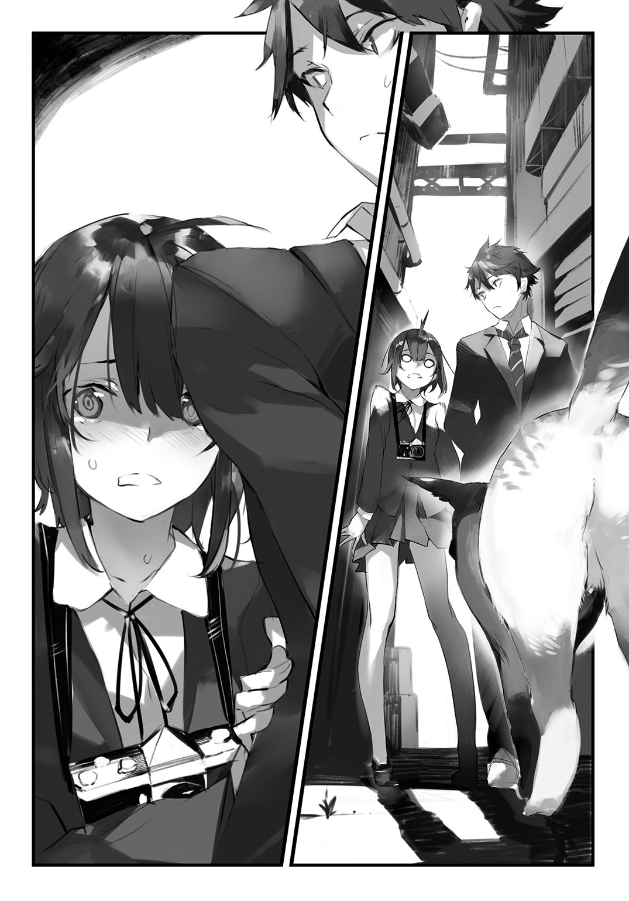

| 尾木花詩希は褪せたセカイで心霊を視る | |
| 紺野アスタ | |
この本は縦書きでレイアウトされています。
また、ご覧になる機種により、表示の差が認められることがあります。

 ダッシュエックス文庫DIGITAL
ダッシュエックス文庫DIGITAL
尾木花詩希は褪せたセカイで心霊を視る
紺野アスタ
プロローグ
廃墟と化した古いビルの通路を、スマホの明かりを頼りに歩いていた。
テナントのシャッターが下ろされていて、辺りは真っ暗だ。しんと静まり返り、微かな足音もやけに響く。
ふいに足下で、甲高い音が反響した。
空き缶を蹴ってしまったらしい。
転がる缶の音が遠ざかって静かになるのを待って、また歩き出す。
「......あいつ、どこ行きやがった」
角を曲がったところで、前方に光が漏れている場所を見つけた。
窓は全て木の板で塞がれているが、その板が割れて、外の光が侵入してきている。
「――っ!?」
人が倒れていた。
暗闇を切り裂くように差した光が、床に倒れた人の頭部を照らしていた。
「尾木花！」
思わず駆け寄るが、捜していた俺の連れとは違っていた。
髪の長い女......のマネキンだ。
「びびらすなよ......」
安堵した俺の背後で、コンクリートの破片を踏むような音がした。
「......邪魔」
ぼそりと言う声。
振り向くと暗がりに、制服姿の小柄な少女が、カメラを構えて立っていた。
画角に俺が入っているらしい。脇へどくと、カメラ少女は尋ねた。
「撮っていい......？」
「あと何枚だ？」
「......十六」
「おかしいぞ。たしか昨日は、二十二枚残ってたはず」
「......」
ふいっと、知らん顔を決め込む。子供か。
「まあいい。許可する」
俺が答えると、カメラ少女はファインダーを覗いた。左手の指で、レンズの胴の部分を回すように操作する。手動でピントを合わせているのだ。
それは最新型のデジタルカメラではなかった。
傷だらけのクロームメッキに、部分部分が剝げ落ちた黒い革張りのボディ。三角に尖った頭に誇らしげに『Ｆ』と刻印された骨董品のようなカメラ。
カシャッ――
小気味よいシャッター音が暗闇に響く。スマホの電子音とは違う、本物の音。
写真のことなどさっぱり解らない俺も、この瞬間だけは好きだった。時間と空間が切り取られ、フィルムに焼き付くその一瞬が。
「......」
カメラ少女はカメラを下ろし、手元でレバーを操作している。その瞳は、すでに被写体への興味を失っている。
陽射しが雲に遮られたのか、それとも微妙に陽が傾いたせいか、窓から差し込む光が弱まり、マネキンは暗闇に沈んでいた。
ずっと同じように見えて、俺を取り巻く世界は、刻一刻とその姿を変えていってる。こいつと知り合って、気づかされたことだ。
......などと、人がささやかな感慨に浸っているうちに、カメラ少女は、また勝手にどこかへ行こうとしている。そうはいくか。
「あ、猫だ」
「っ......」
駆け出そうとしていた足が、ぴたっと止まった。警戒するようにきょろきょろと辺りを窺うと、後ろ足でそろりそろりと戻ってきて、俺の背中に隠れる。
怯えながら、低く「うー」と威嚇するような声を発している。
「いや、見間違いだ。ただのゴミだった。いるわけないかー、こんなところに」
「......」
カメラ少女は頰を膨らませて俺を睨むと、ぼこぼこと背中を殴ってきた。結構痛い。
しかし、もう一人で先に行ってしまおうとはしなかった。好奇心より天敵に対する警戒心が優ったのだろう。
俺は、彼女を背後に連れて、止まったまま動かないエスカレーターを登っていった。
ビルの最上階まで来ると、軋みをあげる錆びた鉄の扉を開く。
ギィィ......。
外へ踏み出すと、優しい春の陽射しに包まれた、楽園のような景色が広がった。
ファンシーな姿形をした乗り物たちが並ぶ、小さな遊園地。
この廃ビルは、元はトーコー百貨店というデパートで、屋上は子供向けの遊園地になっていたのだ。
風が気持ちいい。街の喧噪が遠く、静かだ。
俺は目を細める。
「いい天気だな」
「......」
遅れて外へ出てきたカメラ少女は、不思議そうに首をかしげる。
「空は青い――」
ぼんやりと頭上を見上げて、当たり前のことをつぶやく。
「......でも感じない」
彼女はそう言葉を続けた。無表情に、無感情に。
この小柄な少女は、彩のない世界を生きているという。
全てはモノトーン。
喜びも悲しみも、温かくも冷たくもない、感動のない世界。......それがどういうことか、俺には想像もつかないが。
「......」
彼女は、調子を確かめるように、自分の髪をもぞもぞと撫でた。
「感じるか？」
「......わからない。まだ、早いから」
俺はコンクリートの段差に腰を下ろすと、コンビニの袋を開けた。
これから陽が暮れるまで、ここで粘ることになる。腹ごしらえは重要だ。
「こんないい天気に、幽霊が出るわけないか」
「幽霊なんていない」
にべもなく言うと、俺の隣にちょこんと座った。
俺から受け取ったジャムパンにかぶりつく。
「口の周りにジャムついてる。きったねぇなぁ」
「もぐもぐ......」
構わず咀嚼している彼女の口元を、ティッシュで拭いてやる。世話のかかるやつだ。
目の前には、屋上遊園地の主のように建つ観覧車が、陽射しを反射している。
どうにも嚙み合わない俺たち――久佐薙卓馬と尾木花詩希が、こんな場所で共に行動しているのには、当然ながら理由がある。
トーコー百貨店ビルの取り壊し工事が、もうすぐ始まる。
その前に、やらなきゃいけない。
かつて、この遊園地に出ると言われた幽霊――〝観覧車の花子さん〟。
彼女に、もう一度逢いたい。
俺たちは、心霊写真を撮るために、ここにいた。
一章 ゴースト
１
トーコー百貨店の取り壊し工事が始まる。
その噂を俺が耳にしたのは、四月中旬。高校生活が始まって、すぐの頃だった。
学校が終わるや、俺は電車に乗ってトーコー百貨店までやって来た。
立ち入り禁止。そう書かれたフェンスに取り囲まれていて、中へは入れない。この状態のまま、かつてデパートだった廃ビルは、どういう事情か二年も放置されている。
「......」
見上げると、屋上にある観覧車が、夕陽に照らされて赤く染まっている。
わずかな逡巡の後、俺はフェンスを乗り越えて行った。
入ってすぐのところに、食べ物のカスや空き缶、タバコの吸い殻が散らばっていた。スプレーで壁に落書きもされている。素行の悪い連中がたまり場にしているんだろう。
デパートが営業していた当時の面影を辿りながら、奥へと進む。
上の階へ行くほど侵入者の痕跡は減り、最上階まで来るとそれらしいものはなくなった。
屋上へ出る扉はシャッターで封鎖されている。
しかし、すぐ脇にある非常口を使えば外へ出ることができた。
扉を開けると、向こう側に懐かしい景色が広がった。
イモムシや果物、アニメのキャラクターがデザインされた玩具みたいなジェットコースター。しょぼいメリーゴーラウンド。くるくる回るコーヒーカップ。モノレールが、ぐるりと外周を囲んでいる。
屋上は、小さな遊園地になっていた。
雨ざらしで錆びが浮き、汚れ、長い時間をかけて朽ちるのを待つだけの乗り物たちの間を歩く。
かつては親子連れで賑わっていたのだが、今はもう訪れる者はなく、ひっそりと静まり返っている。こんな場所が、都市の中心部にあるのが不思議だった。
感傷的な気分に、巨大な影が覆い被さってきた。
熟れて落ちた果実がぶちまけられたような、真っ赤な夕焼けを背景に、多腕の巨人の恐ろしげなシルエットが聳え立っている。
けれど、観覧車だと分かれば、とたんに小さく見えてくる。十二個のゴンドラがぶら下がっているが、これも子供サイズだ。
しかしそれでも、ビルの屋上にあるものとしては大きい方なんじゃないだろうか。頂点からの景色は格別だったことを、俺も覚えている。
俺は観覧車に近づいていき、一番下に止まっているゴンドラを覗いた。
曇った窓と汚れたシートがあるだけ。
もう一度離れて、十二あるゴンドラの窓を一つずつ眺めていった。
だが、何もおかしなものは発見できない。もちろん、人影も。
「......」
〝観覧車の花子さん〟――かつてそう呼ばれた幽霊は、どこにも見つけられなかった。
トーコー百貨店の観覧車に幽霊が出る。
そんな噂が流行ったのは、俺が中二の頃。
観覧車に乗ると、制服姿の少女の幽霊が現れるというのだ。
もちろん俺は信じていなかった。幽霊なんているわけがない。
しかし、噂は本当だった。
ある日、俺が一人で乗ったゴンドラに、先客がいたのだ。
赤いスカーフが鮮やかな、セーラー服姿の女子学生。
観覧車がのんびりと一周して降りる時、その女性は出てこなかった。遊園地の従業員も、彼女の存在が見えていないようだった。
――本当にいたんだ......。
この目で目撃しても、まだ信じられないでいた。
以後、何度かここへ通ったが、〝観覧車の花子さん〟と出会えたのは、その一度きり。間もなくデパートは閉店し、立ち入り禁止のフェンスに取り囲まれてしまった。
俺はその場に立ち尽くして、壊れた時計のように動かない観覧車を見上げた。
「いるんなら、出てきてくれよ......姉ちゃん」
俺の呟きは、廃墟の遊園地に、染みこむように消えていった。
その時、
ギィィ......。
背後で金属の軋む音がした。
俺は咄嗟に物陰へ身を隠す。
非常口の扉から、誰かが屋上へ出てきた。
俺の位置からは逆光になっていて、はっきりと姿は見えなかったが、どうやら制服姿の小柄な女の子のようだ。
女の子は、さっき俺がいた辺りまで歩いてきて足を止めた。
「......」
自分を見下ろす巨大な影と対峙するように佇む。
「何してるんだ、あの子......？」
息を潜めて見守っていると、ふいに女の子の頭部に、ぴょこんとアンテナのようなものが立った。頑固な寝癖でもついているのか、髪が一房跳ねたのだ。
すると女の子は、慌てて胸元に提げていた黒い箱のような物を手にし、巨人のシルエットに向かって掲げた。
カシャッ――
微かな小気味よい音が、静寂の中へ鋭く響く。
構え方と、なによりその音で分かった。カメラだ。
女の子はカメラを下ろすと、手元で何やら操作している。その間も、視線は観覧車へ向けたまま。
しばらく無言で佇んだ後、思い出したように跳ねていた髪を手で撫でつけた。
寝癖が収まると、観覧車に背を向けた。もう興味をなくしてしまったように。
トコトコと、ローファーの足音を鳴らしてこっちへ来る。
物陰に隠れた俺の傍を通り過ぎる時、姿が見えた。
「......うちの制服？」
俺が通う北都高校の制服だった。
ところどころ跳ねた短い髪と、小柄な体格。まだ幼さの残る横顔は何かを思い詰めているようで、不思議と視線を惹きつけられた。
彼女は俺に気づかず、錆びた鉄の扉を開いてビルの中へと消えていった。
いつの間にか夕陽は沈み、あれほど真っ赤だった空は、濃紺のグラデーションと夜の気配に呑まれつつあった。
彼女に倣うように、俺も通路へ出て、暗い空へと溶けかかっている孤独な巨人のシルエットを見上げた。
「あの子、何を撮ったんだ......？」
県立北都高校。
市内のごく平均的な学力の学生が通う、ごくありふれた高校だ。
四月の中旬。新入生として高校生活を始めて、まだ一カ月も経っていない一年生たちは、どこか浮かれ気分が抜けていない。
「あそこに入ったのか？」
昼休み。食堂からの帰り、肩を並べて歩いていた旭大地が、驚き混じりに言った。
「どうだった」
「なにも。まあ、分かってたけどな」
俺の冷めた返事に、大地も高まりかけていたテンションを落とす。
こいつとは家が近所で、それこそ生まれた頃からの付き合いだ。背が高く、一年にしてはガタイがいい、野球部の将来のレギュラー候補だった。頭も坊主で、気合いが入っている。
「でも、変な子を見かけたんだよなぁ......」
独り言のように言いながら、俺は通り過ぎる教室を覗く。
「変な子？」
「ああ。なんか写真を撮ってた」
「あんな場所でか。......廃墟マニアか？」
今朝から、それとなくあの子を捜しているのだけど、見当たらない。
ところどころ跳ねたくせっ毛、背は小さく、容姿は幼さが残る。たぶん、俺と同じ一年だろうと思うんだが。
「なになに久佐薙、野球部入んないの？」
四組の教室の前で女子グループとだべっていたポニテの女が、くるっと反転して、いきなり会話に入ってきた。
「はぁ？ 誰もそんな話してねーよ」
「じゃさ、バスケ部おいでよ。男バス、新入部員少なそうだってキャプテンが嘆いてたよ」
人の話を積極的にスルーしていくスタイルのこいつは、竹宮藤果。
大地と俺と、中学からのいわゆる腐れ縁だ。
「やだよ。しんどそうじゃねーか、バスケって。走ってばっかで」
「でも坊主じゃないよ？」
「これは強制じゃねーって」
大地が、坊主頭を撫でながら言い返す。
強制じゃないのに坊主にするって、こいつ、高校生活をそんなに汗まみれで過ごしたいのか......。
「野球部だろ、なぁタク」
「いやいや、バスケの方がモテるよ？ 女バス可愛い子多いよー、あたしを筆頭に」
「それは期待できそうにないな......」
「なにをー！」
男女でぎゃーぎゃーやり合ってるのを、俺たちのことを知らないよその中学出身者が、ちょっと羨ましそうに見ている。
大地はタッパがあるし、さっき可愛いと自称していた藤果は、客観的に見てもそれなりに可愛い部類だ。その上騒がしいので目立つ。俺は静かに暮らしたいんだが。
「ところで藤果。背が小さくて髪が短くて、ちょっとくせっ毛で、無口そうで......」
「あー、うちのクラスの尾木花さん？」
察しがいい。まだ質問を言い終わらぬうちに回答がきた。
藤果は自分のクラスを覗くが、
「いないみたいだね。休み時間は、いつもだいたい教室にいるんだけど。トイレかな。尾木花さんがどうかした？」
「いや、別に」
藤果がにやにやと意味深な笑みを浮かべながら俺を見ているので、無視して歩き出す。
あの子、尾木花っていうのか。
放課後、俺は文化部の部室が並ぶ第二校舎へ来ていた。
写真部。そう表札のかかった部屋を訪ねる。
「尾木花って子いますか？ 一年の背のちっこい、髪の短い......」
「その子なら、うちの部員じゃないわ」
応対してくれた写真部の部長さんは、露骨に表情を険しくしながら答えた。
昨日、屋上遊園地で見かけた時、立派なカメラを持っていた。なら写真部じゃないかと思い、来てみたのだが。
それにしても、迷惑そうな態度だ。そこまで嫌な顔をしなくてもいいだろうに。
「彼女に用なら、心霊写真部へどうぞ」
「心霊写真部？？ ......それどこにあるんですか？ ていうか、何すかそれ？」
「校舎裏の小屋を根城にしてるって話よ。それ以上は知らないわ。知りたくもないし」
部長さんはそう言って、部室のドアをぴしゃりと閉ざしてしまった。
「......心霊写真部」
謎のワードと部長さんの態度に引っかかりを覚えつつ、俺は教えてもらった場所へ行ってみることにした。
「ここか」
校舎の裏手に空き地があり、そこに掘っ立て小屋がひっそりと佇むように建っていた。
『園芸部』と書かれた木の札が、傾いた状態のままかかっている。
「『心霊写真部』じゃないのか。......にしても、なんか薄気味悪い小屋だな」
外観から受ける印象は、サスペンス映画の連続殺人犯が、死体を隠している物置小屋、といったところか。
そう感じるのは、空に蓋をするように暗雲が垂れ込めて、昼間だとは思えないほど辺りが暗いせいだろうか。
風も強く、小屋の脇に立っている遅咲きの桜が枝を揺らし、ひっきりなしに花びらを散らしている。それなりに風情のある風景だったが、生憎の天気のせいで薄紅の色彩は失われ、灰色に沈んでいた。
今にも一雨来そうな空模様に急かされ、俺は扉をノックした。
返事はない。留守か？
「......失礼しまーす」
鍵はかかっていなかったので、扉を開いて小屋の中を覗く。
畳が敷かれた、先生が使う宿直室みたいな部屋で、結構広い。電気はあるが点いておらず、暗い。磨りガラスの窓から光が入って来ているものの、外はこの曇り空だ。
暗さに目が慣れてくると、誰かの私物らしきものがちらほら転がっているのが見えた。部屋の奥の暗がりには、敷きっぱなしの布団まである。
「あの子が使ってるのか......？」
分からないが、妙に生活感がある。
「......また明日、出直すか」
そう思い、踵を返そうとした時、部屋の奥にどんと置かれた、背の高い木製の箱のようなものが目に留まった。
地下墓地に安置された棺。
暗闇の中、絶妙な薄明かりに照らされているせいだろう、そんな不気味な連想が頭に浮かんだ。
だが、よく見ると、何の変哲もないロッカーだ。園芸部って札がかかっていたし、鋤や鍬なんかの柄の長い道具か、作業着が入っているんだろう。
......そうは思うのだが、異様な存在感を漂わせている。
俺は靴を脱いで上がり、ロッカーの前まで近づいていった。
おそるおそる取っ手に指をかけ、少し力を入れて引くと、建て付けの悪い戸は軋みながらゆっくりと開いていった。その隙間から、窓からのわずかな光が流れ込む。
――ゾワゾワッ......!?
その瞬間、寒気が走り、全身の毛が一斉に逆立った。
作業着も園芸用具も入ってはいない。
そのかわりに内側を埋め尽くしていたのは――写真。
左も右も、奥も、天井も、写真写真写真写真写真写真写真写真写真写真写真写真写真写真写真......空っぽのロッカーの内側を隙間なくびっしりと、無数の写真が覆い尽くしていた。
「なんだ......これ......」
世界のほころびをめくって、裏側を覗いてしまったような、名状しがたい恐怖がこみ上げてくる。
すぐにこの戸を閉めて、ここから出なければ！
そうは思うのだけど、同時に、目が離せない。その異様さから。
「......これ全部、心霊写真なのか？」
だとしたら、俺が見たかったものが、そこにあるかもしれない。
俺は暗闇に目を凝らした。そして無数の写真に何が写っているのか確かめようとした時。
ザザァァァァァァ―――――――..................。
背後で雨音が大きくなった。
いつの間にか雨が降り始めていたのだと気づき、遅れて、誰かが入り口の扉を開けたのだと気づいた。
ぺたり......ぺたり......。
裸足で畳を歩く湿った足音がする。続いて、水分を含んだ重たい衣擦れ......。
俺は、おそるおそる振り返った。
暗がりに人がいた。
小柄な影。女だというのが辛うじて分かった。
濡れた上着もスカートも脱いで、ブラウスのボタンを外している。
「......」
「......」
雨が降り出したことで、一層深まった闇の中で、視線が交錯した。
尾木花さん......？
そう問いかけようにも、喉が引きつって上手く声が出ない。
相手が先に、声を漏らした。
「見たの......？」
「え？ えぇと......」
ぺたり......ぺたり......。
濡れた素足が立てる音が近づいてくる。
俺は、気圧されるように後ずさりし、何かを踏んで後ろに倒れた。
暗闇の中で転倒すると、一瞬、上下左右の感覚を失う。
パニックに陥りかけている俺を無視して、相手はロッカーから何か――鈍く光る金属質の物を取り出した。
「見られた......殺すしかない......」
低く思い詰めた声と共に、影が俺の上へ覆い被さってきた。
ドスン。
腹部に重みと、自分じゃない他人の熱を感じる。
ぽたりぽたりと雫が滴って、俺の制服に染みこんでくる。
屋根を叩く大粒の雨が、けたたましい音を立てていた。
ゴロゴロピシャ―――ン
サスペンス映画の殺人シーンのような見事な雷鳴と共に、窓から差した一瞬の光が、俺に馬乗りになった相手の姿を照らした。
濡れて肌に貼り付いた、脱ぎかけのブラウス。その隙間から見える下着と、薄紅の花びらをまとわりつかせた青白い肌。雫の滴る短い髪。感情のない瞳......。
その顔に見覚えがあった。あの子だ。
「尾木花さん......で合ってる？」
「......」
「昨日、君のこと見かけたんだ。トーコー百貨店の屋上で」
無表情な顔が、ぴくりと反応した。
「写真を撮ってた......よね。もしよかったら、見せてもらえないかな......？」
「......見られた。もう殺すしかない」
低く思い詰めた声と共に、尾木花さんは手に持っていた物を振り上げた。
鈍く銀色に輝く角張った金属質。カメラだ。三角に尖った頭に、誇らしげに刻まれた『Ｆ』の文字が、なぜか今、目を惹いた。
「ま、待てっ、そんなので殴ったらマジで死ぬぞ!?」
「記憶を消すには、それしかない。じゃないと、変な子だって思われる......」
「深呼吸しよう、な？」
「すぅ......はぁ......すぅ......はぁ......」
意外にも素直に俺の言葉に従ったが、深呼吸を終えた後、すっきりと迷いのない声で言った。
「......殺さなきゃ」
駄目だこいつ......。
凶器と化したカメラが、再び振り上げられた。あの尖ったところで殴られたら、冗談じゃ済まない......！
「......こんなところで死んでたまるかっ！」
俺はカメラが振り下ろされる前に、その腕を取って、逆に引き倒した。
「あう」
間抜けな声をあげてバランスを崩した尾木花に抱きつき、密着状態に持ち込む。これでひとまず、殴られる心配はなくなった。だが、ここからどう抜け出すか......。
触れ合った肌から、火傷しそうなほどの体温を感じる。
そして柔らかい......。小柄で瘦せて見えたが、ふかふかとして意外と抱き心地がよかった。
危機的状況を忘れ、束の間、幸せな気分になるも、
「は、放して......殺さなきゃ......」
じたばたもがきながらエラーを起こした殺戮ロボットみたいなセリフを吐かれて、真顔になる。
抱きついたまま俺は、相手ごと力任せに横に転がった。
「どらっ！」
ゴツン。
「ぐあっ......」
何か硬い物同士がぶつかる音がして、尾木花が呻いた。
「あっ、すまんっ」
殺戮ロボットの頭をロッカーの角にぶつけてしまったようだ。
いやまあ、カメラで殴り殺されるよりましだろうから、この際我慢してもらうしかないが。
「......」
「......」
上下が入れ替わり、気がつくと今度は俺が上になって至近距離で見つめ合っていた。
濡れてしっとりとした髪と、滑らかな肌。薄闇と青白い光のせいか、間近で見る尾木花は、精巧な人形のようだった。
俺は尾木花の、ガラス玉のような無感情な瞳を覗き込みながら言った。
「逢ったことがあるんだ。あそこに出る幽霊......〝観覧車の花子さん〟と。......もう一度逢いたい。逢わなきゃいけない理由がある。だから頼む」
幽霊と逢ったことがある。
馬鹿げた話だが、この子になら伝わるはずだ。
尾木花は俺を見つめ返し、抑揚のない声で答えた。
「幽霊なんていない」
にべもない言葉。ヤケクソな状況で盛り上がりかけていた気分が、急速に冷めていく。
「......放して。記憶を消去しないと」
壊れた殺戮ロボットの目に、再びやばい光が宿った。
どうやら俺の頼みは聞いてもらえないようだ。
なら、できるだけ穏便にこの場を去りたいが、押さえつけている腕を放せば襲ってくる。
「すまん！」
俺は、彼女が脱いで放り出していた上着を拾って顔に被せた。
「むぐ......」
濡れたカーディガンに視界を塞がれ、もがく尾木花。
俺はその隙に起き上がり、脱いだ靴を拾って裸足で小屋から飛び出した。
外は、スコールのような大雨。濡れるのも構わず、平和な日常空間を目指してひた走る。
高校生にもなると、こんなホラー体験もあるんだな......などと思いながら。
２
開け放した窓から、穏やかな風に乗って、桜の花びらがふわりと舞い込んでくる。
窓際のデスクで書類に目を通していた白衣姿の女性は、訪問してきた俺を見ずに尋ねた。
「学校はどう？ 慣れた？」
「まぁ、ぼちぼち」
覇気のない返事に、ようやく顔を上げる。
「どうしたの、ひどい顔色ね」
「高校にもなると、いろんなことが起こるんだなって」
白衣の女性は椅子を回してこっちへ向くと、切れ長の怜悧な瞳で俺を見上げた。
「悩みがあるなら聞くわよ」
ここは、第二校舎の一階にある相談室。生徒からは「カウンセリングの先生んとこ」と、かえって長ったらしく呼ばれている。
そして、こちらのわざとらしい白衣に身を包んだ若い女性は、保谷理子さん。週に二度ほど通ってきているスクールカウンセラーで、保健室の先生ではない。
理知的で、少し冷たい雰囲気を漂わせている大人の女性。美人だが、なんとなく近寄りがたい。
「女の子の悩み？ 好きな子でもできた？」
「ちがいます」
「恥ずかしがらなくていいのよ、姉さんに言ったりしないから」
姉さん、とは俺の姉のことじゃない。理子さんの姉であり、俺の母親のことだ。
こちらの理子さん、スクールカウンセラーである以前に、俺の叔母なのである。
『ちょっと話があるから、放課後、顔出しなさい。いいわね』
そんな命令調のメッセージが今朝届いていたので、俺は今ここにいる。別に悩みがあって来たわけじゃない。
理子さんが心配そうに、俺の顔を覗き込む。
「ほんとにどうしたの？」
「昨日、ちょっと色々あってね。......よく知らない女子に、カメラで殴り殺されそうになっただけだよ」
「穏やかじゃないわね」
「校舎裏にある園芸部の小屋に、勝手に入ったのが悪いんだけど。そこで......秘密を見てしまった俺を、口封じしようとしたらしい」
自分で言ってて、リアリティのない話だなと思う。今朝、これと同じ話を聞かされた大地は怪訝そうにしていただけだったが、さすがカウンセラーというべきか、理子さんは真面目に聞いてくれていた。
「もしかしてそれ、尾木花詩希？」
「理子さん、あの子のこと知ってるの？」
「ええ、まあね。ここにいると、いろんな噂が聞こえてくるから」
相談室には、校内の様々なゴシップが集まるという。大人で美人な理子さんに恋愛相談しようと、お菓子持参でやってくる女子たちが、噂話を持ち込むせいだ。
理子さんは、愛用のタブレットＰＣを操作して、表示された情報に目を通す。
「......砂田東中出身。極端に無口で友人なし。心霊写真を撮り歩いているとの噂あり」
将来自分が面倒を見る可能性のある生徒の噂を、あのタブレットの中にしっかりとメモしているようだった。
迂闊だった。俺がこそこそやっていることについて、理子さんにはあまり知られたくない。
「その子に、殴り殺されそうになったの？ カメラで？」
「うん、まぁ。本気じゃなかったと思うけど」
そう信じたい。
「......なるほど、カメラで」
理子さんは、興味深げな顔つきになると、脚を組んだ。
白衣の下から、黒いストッキングに覆われた長い脚がすらりと伸び、スカートの中身まで見えそうになる。
ちなみに理子さんが白衣を着ているのは「その方が発言に説得力が出るから」だそうだ。つまり、一種のコスプレ。俺の知る限り、他校のカウンセラーはもっと親しみやすい服装をしている。
「普段の尾木花さんは、どんな感じなの？」
「おとなしい。どこのクラスにも一人はいる、無口で非社交的なタイプらしいよ」
というのは藤果から聞いた話だ。
「同中の女子は、避けてるようだけど」
「どうして？」
「俺も聞いた話だから、本当かどうかは知らないよ。中学の頃、あの子が撮った写真を見たんだって。それが心霊写真で、以来怖がって近づかないんだってさ」
藤果が言うには、尾木花と同じ中学出身の女子たちは、嫌っているというより怯えている様子なのだそうな。よほど怖かったんだろう。
なるほど、と理子さんはタブレットの画面を睨む。
「あんたが見たっていうロッカーの中身が気になるわね......」
「理子さん、信じるの？」
ちょっと意外だったので、思わず尋ねる。
すると理子さんは、ちらりと俺の表情を覗き見てから言った。
「......中学時代、尾木花さんはこんなことを言っていたそうよ。〝彩を感じない〟」
「いろ？」
「色が識別できないわけじゃないようなんだけど、でも、感じない。世界がモノトーンのように見えている。直接面談したわけじゃないからはっきりしたことは言えないけど、まるで心が欠けてしまっているみたいに、感動というものを感じない......ということを言いたいみたいね」
尾木花のあの虚無を思わせる、ガラス玉のような瞳を思い出す。目の前にあるものは見えているのに、まるで何も感じていないような。
理子さんは真面目に考え込みながら、脚を組み替えた。スカートの中が以下略。
「......ねえ、いつもそんな感じで面談してんの？」
「そうだけど、何？」
「いや、別に」
ここを訪れる悩み多き男子生徒たちから、悦びを奪うわけにはいかないので黙っておこう。
「まあ、いいわ。ありがとう。尾木花さんとは、いずれ話さなきゃいけないと思うけど、当面、学校生活にも支障はなさそうだし、様子見ってところね」
甥がカメラで撲殺されかかったのは、支障に数えないのか。
「ところで、何の用？」
俺は、理子さんに呼ばれてここへ来た。
関係ない話で、随分時間を無駄にしてしまった。
椅子の背もたれをギシリと軋ませ仰け反ると、理子さんは、デスクに出しっぱなしだった目薬を差した。
白衣がはだけ、胸を突き出す恰好になるが、なかなかご立派なものをお持ちだ。発展途上のクラスの女子らとは違う、大人の凄みってやつを感じさせる。
「姉さんが心配してたわ。あんたが、ちゃんと真面目にやってるかって」
まだ仰け反ったまま、まぶたをぱちぱちさせながら言う。
目が少し充血していたのは、昨晩、母の長電話に付き合わされて寝不足だからだったのか。
「母さん、どんな様子だった？」
「だいぶ疲れが溜まっているわね。無理もないけど」
「姉ちゃんのことは？」
「とくに。変わりないそうよ」
「そう......」
俺には姉がいるのだが、現在、この街から離れたところにある病院に入院している。
母は姉につきっきりで、父も向こうから通勤しているため、俺は高一にしてひとり暮らし状態。それを心配した母は、たびたび理子さんに電話をかけて、俺の様子を聞いている。
「あんた、まだ部活に入ってないんですって？ 帰宅部は不良の始まりだって。部活に入るよう説得してほしいって頼まれたわ」
「部活よりバイトした方がいいんじゃないかなと......」
今の家族の状況を考えると、それが正しい判断のような気がしている。本当なら、学校を辞めて働いた方がいいんじゃないかとさえ、思うほどだ。
「子供が余計な心配しなくていいのよ。......って、姉さんなら言うでしょうね。まあでも、あんたの気持ちも分からなくもないわ。莉深の病状を考えると、今の生活がいつまで続くかも分からないし......」
理子さんは、ようやく仰け反っていた上半身を起こした。
「まぁ、いざとなったら、あんたの面倒くらいあたしが見てあげるわよ」
「ありがとう理子さん」
厚意にすがるつもりはないが、そう言ってくれる人が傍にいるのは、とても心強い。
「別に。あたしも大学時代、姉さんやお義兄さんにはお世話になったしね」
さっぱりと軽く突き放すように言うが、それが理子さんの照れ隠しであることを俺は知っている。
うちの母はおっとりとした天然っぽい人で、歳の離れた妹を随分可愛がっていたらしい。しっかり者の理子さんだが、こう見えてお姉さんっ子なのだ。
......それを言うと怒るんだけど。
「そういえば」
理子さんが、何かを思い出したって顔で言った。
「あのデパートだったビル、ようやく取り壊し工事が始まるそうね。来月からだったかしら？」
「へぇ、そうなんだ」
俺は、素知らぬ顔をする。
「......」
長い睫毛の下から、目薬のせいで少し潤んだ瞳が俺の表情を覗き込んでいる。
他人の心理を読むことに長けた、カウンセラーの視線。
ポーカーフェイスはもう三秒も持たない。そう思った時、ノックと共に相談室のドアが少しだけ開かれた。
「理子さーん、まだー」
顔を覗かせたのは、悩み相談という名目の雑談目当てに待機している、女子のグループだった。
「後が支えてるみたいだから、俺行くよ」
「母親に心配かけるようなこと、するんじゃないわよ。あんたにまで何かあったら......」
「わかってるよ」
答えながら、俺は相談室を後にした。
相談室を出て下駄箱で靴を履き替えていると、大地とばったり出くわした。
「よぉ、今から部活か？」
「おう」
大地は野球部のあのでかい四角いカバンを、肩に引っかけている。
「帰るのか。暇あるなら見学こいよ」
「悪い、今日は用事があるんだ」
「また、あそこに行くのか？」
あそことは、トーコー百貨店のことだ。大地は、俺が何をしようとしているのか知っている。
「取り壊される前に、どうにかしなきゃいけない」
切実に答える俺を、大地は見つめる。
「おまえがあそこで会ったっていう子。尾木花さんだったか？ なんか、妙な噂があるらしいな」
「心霊写真のことか？」
大地は真面目な顔で頷く。
「その子が撮ってたのって、やっぱ......」
――幽霊なんていない。
尾木花の、にべもない言葉が耳に蘇ってくる。
「さぁ、わからん」
「......そうか。あんま無茶すんなよ」
靴を履き替え、歩き出す大地。
「おう。レギュラー取れよ」
大地は頼もしく腕を上げると、部活へと向かった。
その後ろ姿を見送りながら思った。
あいつと一緒に一つの目標目指して汗を流すのも、悪くないだろうな、と。
大地と別れた後、俺は下校せず、校舎裏へとやってきた。
相変わらずぼろっちい掘っ立て小屋が建っているが、今は天気もよく、昨日のような不気味さはない。
今日知ったことだが、園芸部はすでに廃部になっており、ここは現在空き屋らしい。心霊写真部なんてものも、少なくとも生徒会の見解では、存在していないそうだ。
「さてと、来てはみたものの......」
窓越しに気配を窺うが、中に人がいる様子はない。
ノックしてみる。返事はなし。
「......また留守か」
一度深呼吸をして気分を落ち着かせると、ドアノブを回した。
今日も鍵はかかっていない。知られたら口封じをしなければならない秘密を隠しておくんだったら、それなりのセキュリティを施しておけよと言いたい。とんだトラップだ。
俺は、しばし躊躇ってから、覚悟を決めて中へ入った。
磨りガラス越しに柔らかい光が差し込む室内は明るく、キラキラと舞う埃が幻想的だった。
部屋の奥に、昨日と同じように背の高いロッカーがある。
「............」
静謐さの漂う部屋で、無言で佇むそのロッカーは、やはり棺を連想させる。中身を知っているせいか、いかにも秘密を封じ込めていますといった雰囲気だった。
「......一瞬だけ見て閉じればいい。それで噂の真偽は確かめられる」
心霊写真かどうかさえ確かめられれば目的は達成できる。昨日と違い今は明るいから、すぐに終わるだろう。
勝手に見ることに抵抗がないわけじゃないが、昨日のあの様子では、話が通じるとも思えなかった。
今一度、周囲の気配を確かめる。
「誰も来ないな......」
戸に手をかける。力を加え、ゆっくりと引いて......
「へっくちょんっ」
―――っ!?
振り向き、周囲を確かめる。誰もいない。
だが確かに今、誰かがくしゃみをした。
「外からじゃなかったぞ......」
心臓がばくばく鳴っている。昨日、カメラで撲殺されそうになった体験は、俺の心に暗い傷痕を刻み、神経を過敏にしているらしい。一度、理子さんにカウンセリングをお願いした方がいいかもしれない。
「............ん？ あれ？？」
昨日と同じように、部屋の隅っこに敷かれた布団。
よく見ると......こんもりしている？
「だっ、誰だ、そこに寝てるの！」
シーン。
白々しい静寂が流れた後、観念したように布団がもぞもぞと動いた。
俺は、ぎょっとなって一歩下がり、いつでも逃げられる態勢をとる。
「尾木花さん......？」
おそるおそる呼んでみる。
「..............................ちがいます」
という返事が。
女子の声だ。けど、尾木花じゃないと言っている。
たしかに、声の印象が違う。柔らかく、気の抜けたような声だった。
「じゃあ、誰だ！」
「............」
亀みたいに、布団の中から頭が半分だけ出てきた。女の子だ。
怯えて涙ぐんだ目で、俺を見つめる。
「............そちらこそ、どなたですか？」
はたと自分を省みる。
そうか。まるで不審者に対するように詰問してしまったが、俺の方が侵入者で不審者だった。
「す、すんませんっ、俺、怪しい者じゃないです。怪しい行動してましたけど......。一年の久佐薙卓馬っていいます。尾木花......さんに用があって」
「詩希ちゃんのお知り合い？」
素性と用件が分かって安心したのか、怯えた声が幾分軽くなった。
「そちらさんは、どちらさんで？」
「私はねぇ、歳はいっこ上だけど......学年は君と同じかなぁ」
なんとも不思議なことを言う。
「まだ一年生の、早鳩古森といいます」
早鳩古森。どこかで聞いた名だった。
「......あ――っ！ 初日から一回も学校に来てない人だ！」
思わず指差す俺に、早鳩さんは不満げな顔をする。
「えー、学校には来てるよぉ。教室に行ってないだけで......」
気の抜けた声で異議を申し立てると、早鳩さんは布団から顔を全部出した。
寝ているせいで髪はぼさぼさだけど、声の印象通り、ふにゃぁっとした柔和で温厚そうな人だ。
彼女は俺と同じクラスだった。ただ、一学期の初日から、まだ一度も教室には姿を見せていない。いわゆる不登校というやつで、教室に空っぽの机だけがある。
「あの、俺、一応同じクラスなんですけど......。歳はいっこ上ってどういうことです？」
「うんとね、私、ずっと引きこもりしてたから留年しちゃったんだー。だから今は頑張って学校に来てるんだけど、教室には恐くて入れなくて......」
「そ、そうなんですか......」
「あー、同じ学年なんだから敬語禁止～」
誰が留年生かなんて情報は、先生は教えてくれない。関心もないので知らなかった。
にしても、なんか気が抜けるな、この人と話してると。
「ずっとそこにいたんですか？」
「うん。いきなり誰か来たから、びっくりしちゃって」
「つまり、俺の怪しい行動を、一部始終見ていた......と」
なんかそれはそれで怖い!?
「ううん、見てないよー。お布団の中にいたから」
侵入者に怯えて、布団を頭から被って隠れていたのか。
布団は部屋の奥側の暗がりに敷いてあったが、呼びかけに返事がなかったせいで、誰もいないという先入観があった。
「恐がらせてしまって申し訳ないです」
「ううん、いいよ～。私が恐がりなだけだもん。ねぇ君、もしかして昨日も来てた人？」
「え？ ......はい、来ましたけど」
「やっぱり～。そっかぁ、詩希ちゃんに用があったんだー」
「......もしかして、昨日もそこに？」
「うん。いつもいるよー。みんなが下校するまで、ここにいるの」
てことは、俺が尾木花に馬乗りされて、カメラでぶん殴られそうになってたあの時も、そこでそうしてたのか!?
「見てたんなら止めてくださいよ、危うく殺人事件が発生するとこだったじゃないっすか！」
「......だってぇ、知らない人が急に入ってきて、恐かったんだもん」
殺人事件が起こる方がよっぽど恐いと思うが......。
変な人だ。悪い人じゃなさそうだけど、かなり変だ。
「えっと、早鳩さん......」
「古森でいいよぉ。同じクラスだもん」
一度も同じ教室で授業を受けたことないけどな。
「尾木花さんとは、お友達なんですか？」
「うーんと......どうかなぁ」
「え、ちがうの？」
思わず素で返してしまう。
「だって、二人でこの小屋を勝手に使ってるんでしょ？」
「？ 私、園芸部だよ？」
きょとんとした顔をされてしまった。
「......もう廃部になってますよ。部員が誰もいないからって理由で」
「そうなんだ......!? 学校行ってなかったから知らなかったよ......。そっかぁ、それでこないだ生徒会長さんが来て、出てけって言ってたのかぁ。困るなぁ......私、ここで寝てちゃダメかなぁ......」
どうやら生徒会に、立ち退きを迫られているらしい。
「......尾木花さんも園芸部なんですか？」
「ううん、ちがうよ」
「でも、ここに出入りしてますよね？」
「うん。勝手に使ってるみたい」
「知り合いじゃないんですよね」
「知り合いだよー。同じ中学だもん」
だが友達ではないと。......マジでどういう関係なんだ。イソギンチャクとクマノミみたいなもんか？
「このロッカーの中身、何かご存じです？」
「うん。詩希ちゃんが写真を貼ってるんだよね。でも、見ちゃダメって言われた。その中はねぇ、詩希ちゃんの〝なくしちゃった世界〟なんだって」
「なくした世界？」
「欠片を集めてるって言ってたよ」
どういう意味だろう。
「その写真って、心霊写真なんですよね。......怖くないんですか？」
「......」
早鳩さんは、枕に頭を預けたまま、じーっと俺を見つめた。
「君はあれだね。詩希ちゃんのことを、きっと誤解してるね」
３
こぢんまりとした商店街の一角に、桜の樹が立っている。
大きくはないが枝振りが立派で、なかなかに風情がある。
今年の桜は遅咲きで、今まさに満開を迎え花びらを散らす様子を、制服姿の女の子が足を止めてぼんやりと眺めていた。
「......」
北都高校の制服だ。だが、背丈だけなら中学生のよう。短い髪はくせっ毛で、ところどころ跳ねているのが、野良猫のような印象を与える。胸元に提げた古びた傷だらけのカメラが、まるでトレードマークのようだった。
そこへ、ランドセルを背負った男子小学生の群れが駆け寄ってくる。
「カメラのねーちゃん！」
顔見知りなのか、わいわいと子供らに取り囲まれたカメラ少女は、けれどとくに関心も示さず、自身も木になったように動かずにいた。
「なぁ、カメラのねーちゃん！」
「今日は何撮ってんの？ 桜？」
質問攻めにされるうち、彼女の表情に変化が生じる。煩わしそうに眉間に皺ができる。
「......そこに整列」
命じられた子供らは、我先にと桜の樹の下に並ぶ。
「面白いポーズとって」
男子小学生たちは、自分が一番面白いんだと、競い合って変なポーズをとり始めた。
それを見たカメラ少女は、
「......ちがう」
まるで、焼き上がった茶碗が失敗作だった時の陶芸家みたいに、首を振り、子供らにリテイクを命じる。
「これでどうよ！」
「ちがう」
「見て見て、ねーちゃん！」
「ダメ」
そんなやりとりが何度か繰り返された。
「まだかよカメラのねーちゃん。腕痺れてきた」
「早く撮ってよぉ～」
「......ちっとも面白くない」
「えー、面白いよぉ。なぁ？」
後ろで見守っていた俺に、子供らが同意を求めてきた。
そこでやっとカメラのねーちゃん――尾木花詩希は、俺という見物人がいることに気がついた。
俺は子供らに答える。
「いまいちだな」
「んだよ、にーちゃん！」
「じゃあ自分がやってみろよ！」
「高校生が小学生みたいな真似できるか」
ガキどもの抗議を一蹴して、尾木花の方を見る。
「？」
彼女は俺を、誰だおまえって顔で見返す。
俺のことを覚えてないのか。襲いかかってこないのはありがたいが。
「昨日は悪かった。勝手にロッカーを開けて」
「......」
尾木花は俺を恐い顔で睨みながら、後頭部をさすった。俺のことを思い出すのと同時に、ロッカーの角で頭をぶつけた痛みも蘇ってきたらしい。
「早鳩さんに聞いたんだ。ここにいるんじゃないかって」
「......こもりん？」
早鳩さんの名前を聞き、少しだけ態度が軟化する。
「おいこら、にーちゃん！ ナンパしてんじゃねーよ！」
変なポーズのまま、尾木花が写真を撮るのを待っていたガキどもから、文句が飛んできた。
「俺たちが遊んでんだぞ、あっちいけ」
「そうだそうだ」
「うっせー、おまえらこそあっちいけクソガキ」
シッシッとおっぱらおうとするが、ガキどもは相手にされて調子づき、余計にまとわりついてくる。
「やーいナンパナンパー」
「フラれてやんのー」
「ちがうっつーの！ てか、おまえらナンパの意味知ってんのか！」
こいつら、高校生を恐れずに向かってくるとは、勇気と無謀をはき違えているようだな。ここは一つ、ゲンコツでも喰らわせて、社会勉強させて......、
カシャッ。
「？」
シャッター音に顔を上げると、こっちにカメラが向けられていた。
「......楽しそうだったから」
クソガキどもと言い争う男子高校生という滑稽な姿を写真に収められてしまったらしい。
そして、それっきり興味をなくしたように、尾木花は歩き出した。
「またな、カメラのねーちゃん！」
手を振るガキどもをシカトして、行ってしまった。
「おまえら、あの子のこと知ってんの？」
「うん！ いつもカメラ持ってる変なねーちゃん」
「ぼっちで可哀想だから、遊んでやってんだ！」
どうやら子供らの間では、ちょっとした有名人、もとい名物らしい。
俺は、そんな尾木花詩希の後を追った。
「......」
ついてくる気配に煩わしげにしつつ、尾木花はマイペースに歩く。小柄なのに歩調は速い。
商店街を抜け、古い家並みの密集した住宅地へと入っていった。
だんだん道は狭くなり、陽射しもまともに届かないような細い裏路地へと足を踏み入れていく。
「へぇ、こんな場所があったんだな......」
パズルのピースを間違えてはめたせいでできた微妙な隙間のような、細く入り組んだ路地。
まるで迷路のようだったが、尾木花は迷いなく進む。近所の人に見咎められるんじゃないだろうかと心配しながら、俺もついていく。
「......ねぇ」
尾木花が歩きながら、首だけ回して横目にこっちを見た。
「......どうしてついてくるの？」
「あー、えっと......興味があるから？ どんな写真を撮ってるのか」
ふいっ、と前を向いてしまった。
それっきり尾木花は、黙って歩く。時折、路地で何か見つけてはカメラを向ける。そして、シャッターを切ったり切らなかったりで、また歩き出す。
傍で見ているのに、俺には彼女が何に興味を持って足を止めているのか分からなかった。
地面や壁や空や、いろんな方向にカメラを向けるのだけど、そこに、わざわざ写真に撮るようなものが見当たらない。
「もしかして、幽霊がいる......？」
彼女にしか見えていないものがそこにいて......という想像もするが、それにしては頻繁だ。薄暗い路地裏ではあるけど、数分おきに幽霊がいたんじゃ怖さもありがたみもない。
「古そうなカメラだな。それデジカメ？」
「......」
退屈だったので話しかけてみたが、ふいっと顔を背けて無視されてしまった。
カメラのことはまったく詳しくないが、かなり古そうに見える。
傷だらけのクロームメッキに、ところどころ剝げた黒の革張り。角張ったデザインで、小柄な尾木花の手には大きくてごつい。三角の頭に刻印された『Ｆ』の文字は、ブランドロゴだろうか？
女の子が持つには一見不釣り合いなんだけど、そいつを構えてファインダーを覗く姿が、不思議と様になっている。
「イメージしていたのと違う......」
屋上遊園地で遭遇した時の印象とも、園芸部の小屋で撲殺されかかった時の印象とも違う。
気弱で、人目を避けてこそこそと過ごしてるような子だと勝手に決めつけていた。
極端に無口だし、無愛想で無表情なんだけど......。
「......なんか、ふてぶてしいんだよな」
まとわりついてくるクソガキどもに変なことやらせたり、俺とガキどもがやりあってるのを写真に撮ったり。
かと思うと、こんな路地裏に踏み込んでいき、俺の質問は堂々とスルーする。
それだけだと、ただの無愛想で変な女なんだけど、
「......」
ほら今、一瞬、瞳に表情が宿った。
何かに興味を示し、カメラを向ける瞬間、無表情の中に好奇心めいた感情が微かに浮かぶ。
釣られて視線の先に俺も目をやるが、その感情が向けられた対象を発見できない。
もどかしさを抱えて視線を彼女に戻した時、そこには、カメラを構え真っ直ぐ何かに向かう真剣な横顔がある。
「ちょっといいか。今、何を撮ったんだ？」
「......？」
バカを見る冷めた視線。なぜ分からないんだと。
次いで、集中が途切れたことへの落胆のため息。どうやら撮影の邪魔をしてしまったらしい。
怒るかと思ったが、尾木花は抗議せず、俺の背後にまた何かを見つけてカメラを構えた。俺も振り返る。
束の間、シャッター音ではなく、駆け足で遠ざかっていく足音が聞こえた。
「？ あいつ、逃げやがった！」
騙された。俺は急いで後を追う。
狭い路地は見通しも悪く、随所で分岐して、初めてここを通る者にとっては迷路そのものだった。俺はいくつかの分岐路をあてずっぽうに選んで走った。
「はぁ、はぁ、はぁ..................見失った」
もし進路が合っていれば、もう追いついているはずだ。まんまと撒かれてしまった。
まあ、話なら学校ですればいい。
そう思いつつも、心残りだった。尾木花が何にカメラを向けているのか、視線の先にあるものが知りたかった。
路地を抜け適当に歩いていると、いつの間にか市街地へと出た。古いビルが建ち並ぶ地区を歩く。このまま進めば、輿名駅に出る。市内で一番大きなターミナル駅だ。
「せっかくここまで来たし、駅前で遊んで帰るか」
そう思い、繁華街へ向けて歩いていると、
「？」
古いビルとビルの隙間の路地に、うちの制服を着た女子の後ろ姿があった。
ぴんぴんと短い髪が跳ねている小柄な、カメラを提げた女の子。どう見ても尾木花だ。
彼女は足を止め、路地の真ん中にごろんと寝ている大きな野良猫と対峙していた。
「なんだ、猫を撮ろうとしてるのか」
女子が撮る写真っていったら、花か雲かラテアートか猫だと相場が決まっている。
などと考えながら傍へ寄ってみて、様子がおかしいことに気づいた。
まず尾木花が、いつまで経ってもカメラを構えようとしない。
横顔は硬直し、額には脂汗が浮かんでいた。
ぐでんと横になっていた猫が不機嫌そうに起き上がり、こっちへ近づいてくる。
「お、チャンスだ。向こうから来たぞ」
「っ......」
しかし尾木花は、喉が引きつったような声を漏らしただけだった。
デブ猫が毛を逆立て、キシャーッ、と全然可愛くない鳴き声をあげ威嚇した。
「ぴゃっ」
尾木花は変な悲鳴と共に、横にいた俺の背中にササッと隠れた。
ガタガタ震えながら、顔を半分だけ出して猫の様子を窺う。
「おいなんだ、どうした？」
野良猫は、尾木花をまるで恐れもせずにのっしのっしと近づいてくる。
ニャァァァアアアアアアア！！！！
「ッッ!?」
尾木花が半泣きになって俺にしがみついた。

にわかに信じがたいことだが、どうやらこいつ、野良猫にいじめられているらしい。
俺はため息をつき、
「シッシッ」
手を振って軽く威嚇すると、デブ猫はあっさり逃げていった。
「もう大丈夫だぞ」
「......ほぅ」
尾木花は、俺にしがみついたまま、安堵の息をついた。
自分が摑んでいたのが木や壁じゃなく俺の上着だったと気づいたのは、その後だった。
慌てて手を放して離れる。
「なに猫相手にびびってんだよ」
「......あいつら、いじめるから」
ぶすっと拗ねた様子で一言。
「ちっこいし、狭い路地をうろうろしてるから、同族に見られてるのかもな」
「......」
一応助けられたにも拘わらず、尾木花は礼も言わずに駆け出した。また俺から逃げるつもりらしい。
「猫が出ても知らねーぞー」
「っ――」
びくっ！ 足が止まった。
きょろきょろと周囲を警戒している。
「また出たら、追い払ってやってもいいぞ」
ここぞとばかりに言う。
「......」
頭一つ上にある俺の顔を、不服そうにじぃっと睨んだ後、尾木花は何も言わず歩き出した。どうやらボディガードとして、同行の黙認をいただけたようだった。
尾木花にくっついて歩くうちに、輿名駅前まで来ていた。
輿名駅は隣接する市を含めて一番大きなターミナル駅で、その周辺は若者が集まる繁華街として栄えている。南へ行くと港があり、北は山手のお金持ちが暮らすハイソな住宅街。輿名は街としての歴史も古かった。
うちの高校は、ここから二駅。つまり、二駅分歩いてきたことになる。
だが、尾木花に疲れた様子はない。小さいのに健脚だ。
人通りの多い場所に出ると、彼女はカメラを下ろし、きょろきょろするのもやめた。人目を引くのが嫌なのか、ここには撮るべきものがないのか。
駅前を通り過ぎて線路の高架に添って歩くうち、高架橋の中へと入れる入り口が現れた。
この辺りの高架橋は、煉瓦造りの分厚い城壁のようになっていて、中が通路になっている。......のだが、薄暗く怪しい雰囲気を漂わせているため、普通の人はあまり近寄らない。
そこへ尾木花は、躊躇いもなく入って行った。仕方なく俺も続く。
「......なんだここ。店があるのか」
明かり取りもなく、照明もところどころ壊れていてとにかく暗い。
そんな通路が延々と、先が見通せないほど続いている左右に、商店らしきものが並んでいる。
そのほとんどがシャッターを下ろしており、休業日なのかすでに潰れた後なのかの判別もつかなかった。
ところどころ明かりが灯った店もあるが、パッと見、何を取り扱っている店なのかも分からないし、どこもかしこも相当に古そうだ。
アングラって言葉がぴったりきそうな空間だった。
「どこに向かってるんだ？」
さすがに不安になって尋ねるが、無視。嫌ならついてこなくていいというわけだ。
まさか、人気のない場所へ誘い込み、今度こそ口封じをするつもりじゃ......。
そんな不安が胸を過った頃、尾木花が明かりの漏れるドアの前で足を止めた。
『コニシ写真機店』。年季の入った看板にそう書かれた店へ、入っていく。
店内は、普通に明るかった。
ガラス張りのショーケースが壁を覆い、その中にところ狭しとカメラが並べられている。どれも古そうで、俺には店というより博物館みたいに見えた。
「いらっしゃい、詩希ちゃん」
尾木花はカウンターを挟んで、看板同様に年季の入った初老の男性店員と話し始めた。おそらく店主だろう。くたびれたエプロンには、かすれた文字で『コニシ写真機店』とあった。
「この前の写真、できてるよ」
店主が言うと、尾木花はカバンから紙切れを出した。引換券だろう。店主はそれを受け取り、代わりに白と緑のちょっとカラフルな封筒を渡した。
尾木花は、早速カウンターに中身を広げる。はがきより少し小さいくらいのサイズにプリントされた写真の束が入っていた。
「......」
一枚一枚、真剣に見ている彼女の後ろから、俺も覗き込む。
店主が何者だ？ という顔で俺を見たが、自己紹介するのも変なので知らん顔をする。
「......こういうのを撮ってたのか」
青空に浮かぶ大きな雲を、貫くようにそそり立つ鉄塔。雨に濡れて俯いた花。水たまりに映った青空。変なポーズをとっておどけている男子小学生。夕陽に暮れなずむ商店街を散歩中の、老人と犬。
ごくありふれた風景が、そこに切り取られていた。
「なんというか、すごく普通だな」
想像していたものと違い、肩すかしを食った気分で思わずつぶやいた俺の言葉に、店主は半分共感するって顔で笑った。
「額縁に入れて飾る絶景ばかりが、写真じゃないからね」
「はぁ」
絶景でも決定的瞬間でもない。友人や家族の姿でもない。そんなものを写真に撮る意味って何なんだろうか？
そんな俺の疑問を見透かしたのか、店主は、熱心に自分の写真を見ている尾木花の横顔をちらりと見て言った。
「詩希ちゃんのような人にとってカメラは、世界とつながる道具なんだよ」
「世界とつながる？」
大げさな話に首をかしげる俺に、店主は深く頷く。
「日常のありふれた風景の中にも、心惹かれる一瞬はあるものだよ。それを見つけて、レンズを向ける。シャッターを沢山切る人は、それだけ世界への関心が強いということ。熱量と言い換えてもいい。その熱が、フィルムに焼き付く」
世界への関心が強い？
この誰よりも関心が薄そうな子が？
――〝彩を感じない〟。
尾木花は以前、そんな風に話していたという。まるで心が欠けてしまっているみたいに、感動を感じないという意味だろうと、理子さんは分析していた。
それが本当なら、尾木花は世界に関心なんてないはずだ。
けれど、
「......」
ごくありふれた風景を切り取った写真の一枚一枚は、不思議と胸に迫る。
どうしてか、はっきりとは言葉にはできないけれど。
名状しがたいノスタルジーのような感情の正体を探ろうと考え込む俺の横で、尾木花は一枚の写真をじっと凝視していた。
それを見て、なぜか店主が、ちょっと嫌そうな顔をする。
「それっぽい影が写っていたみたいだったよ」
フンフンフン！
尾木花の鼻息が急に荒くなった。
「何が写ってたんだ？」
「......」
覗こうとした俺から隠すように、尾木花はその写真を封筒に仕舞ってしまった。
けど、一瞬見えた。
真っ赤に熟れた夕焼け空と、観覧車のシルエットが。
あの時、屋上遊園地で撮った写真だ。
「なぁ、尾木花」
「......」
尾木花は露骨に俺を無視して、レジカウンターの前に屈み込んだ。
足下の棚に並んでいた、緑や黄色をした小さな箱を物色し始める。箱には１００とか４００とか数字が書かれている。
「なんだそれ？」
「フィルムだよ」
店主が言った。
「若い子は知らないだろうね。写真を撮るのに、昔はそういうのを使ったんだよ。昔と言っても、最近の話なんだがね」
「うちの親がなんか言ってたなぁ。デジカメ買って、便利になったって。じゃあやっぱりそのカメラ、デジカメじゃないんだな」
尾木花が革のストラップで首からぶら下げている古びたカメラは、この店のショーケースに並んでいる物とよく似ていた。
尾木花はフィルムの箱を物色し、値札を見て戻すのを繰り返す。
その時、
きゅぅぅ......くるるるるる............ぷきゅぅぅ............。
「なんだ今の、変だけどちょっと可愛い音はっ......!?」
「はぅぅ......」
見れば、尾木花が脱力してお腹を押さえている。
「もしかして今の、お腹が鳴った音か!?」
しかし尾木花はすぐに気を取り直し、４００と書かれた緑の箱を握りしめた。
「大丈夫なのかい詩希ちゃん？ 最近ペース上がってるけど。ちゃんとごはん食べてる？」
「平気。お腹が空いたくらいじゃ、人は死なない」
「いや、死ぬだろ！」
思わずつっこむ。
尾木花は構わず、がま口の財布を開いて、中の小銭を取り出した。
「あと三十円だね」
店主が申し訳なさそうに言うと、尾木花は空っぽのがま口を虚しく指で探った。
どうやら、もう一円もないらしい。
「ぅぅ......」
お腹が空いて脱力してる時と同じ情けない顔で、尾木花はフィルムを見つめる。
顔見知りの店主に負けてもらおうとか、そういうつもりはないだろう。ただ純粋な強い執着がそこに見てとれた。
俺は小さくため息をついて、自分の財布から十円玉三枚を出してカウンターに置いた。
「......？」
「それないと、写真が撮れないんだろ？」
一瞬、尾木花は、ぱぁっと嬉しそうな表情を浮かべかけ、すぐにそれを引っ込めた。こいつは殺すべき敵だと思い出したらしい。
代金を受け取った店主は、少し心配そうにしながら、フィルムを紙の袋に入れてくれた。
店を出ると、またあの暗い通路が待っていた。聞いた話だが、この高架下の通路は、二駅先まで続いているという。
陰気な場所から早く出たくて先へ行こうとしていると、上着の裾を後ろから引っ張られた。
振り向くと、すごく気まずそうに俯く尾木花の姿があった。
「......ぁ、ありがとぅ」
か細く、どこか不服そうにお礼の言葉が述べられた。
一応、感謝するくらいの人間性は持っているようだ。壊れた殺戮ロボットじゃなかった。
俺は、ちょいちょいと自分の頭を指差す。
「......？」
「なんかついてる」
俺は、尾木花の髪にくっついていたものを摘んで取ってやる。
「桜の花びら。商店街から、くっついたままだった。髪留めみたいで、ちょっと似合ってたけどな」
尾木花はそわそわと目を逸らす。
暗いし前髪が邪魔で表情までは読み取れないが、もしかして照れてるのか？
そういう感情はあるんだな、と思っていると、そのまま尾木花はよろよろと前へ倒れ込み、俺に思い切りしがみついた。
「ど、どうした？？」
感激を表すボディランゲージとして、ハグでもされたのかと思ったが......、
「ぅぅ......」
尾木花は、呻き声を漏らしている。
まさかこいつ......腹が減ってるだけ!?
さっきの照れてるみたいに見えたのも、俺の勘違いか！
「......なんか食いに行くか？」
脱力しながら尾木花は、きょとんとした顔で俺を見上げた。
「おごるよ。今日一日つきまとって、撮影の邪魔したお詫びに」
４
「はぐはぐ......もぐもぐ......ずるるっ」
尾木花は、山盛りのナポリタンを、親の仇のように平らげていった。
「ここのナポリタンは、味は普通だけどボリュームがすごいんだ」
喫茶ルサールという、コニシ写真機店に負けないくらい年季の入った喫茶店へ、俺は尾木花を連れてきた。
高架下を出た後、
「食いたいものあるか？ 好物とか」
と尋ねた俺に、尾木花は少し考えてからこう答えた。
「........................カロリー」
「はい？」
一瞬、そんな名前の食べ物が女子高生の間で流行っているのかと思ったが、違った。
「......カロリーを沢山摂取しておけば、ごはんを食べなくて済む」
そんなわけで、ここへ連れてきた。
いくら俺でも、そして相手がちょっと（？）変わった女の子でも、女子を誘うのに相応しい店はもっと他にあることくらい知っている。でも、リクエストに従うなら、ここがベターだったんだ。
「俺の姉ちゃんがここの常連だったんだ。細いくせに大食いで、いつもナポリタンの大盛り食ってた」
姉は背が高く細身で、弟の目から見て美人とは言えないが、人を惹きつける不思議な魅力の持ち主だった。
時々男に言い寄られていたようだが、その食いっぷりを見れば、だいたいは口説く前にドン引きして逃げていったらしい。要するに姉は、そういう男をおちょくって、その豹変ぶりを笑い話にして楽しんでいた。
「......」
俺の話を聞いているのかいないのか、尾木花は無言で、ナポリタンに粉チーズを振りかける。
ザッ......ザッ......。
ザバッ......ザババッ......。
......ドサドサッ............ドババッ！
「って、おい。かけ過ぎだろう！」
「......？ だって、カロリー......」
ちょっと哀しそうな目で見られてしまった。よほどカロリーに飢えているらしい。
「カロリー大好きって、女子高生としてどうなんだ」
だいたいの女子高生はダイエットだなんだと無駄に騒いでいるのに。
まあ、尾木花の場合、そのせいで余分な贅肉がついているようには見えないが。今日みたいなハードなウォーキングを、毎日のようにこなしているおかげなんだろうか。
粉チーズの雪が積もったナポリタンの山を、みるみる平らげていくのは、見ていて痛快な気分になる。
「そんなにしちまったら、美味くないだろ」
「はむはむ......もぐもぐ......？」
尾木花は咀嚼しながら首をかしげる。
「粉チーズの味しかしないんじゃないかって言ってるんだ」
「......味」
フォークを持つ手を止めて、尾木花は、鮮やかな赤色をしたナポリタンを見つめた。
「わからない。感じないから。これは......おいしい？」
「俺に聞くなよ。食ってるのおまえだろ」
尾木花は、無表情にもそもそと食事を続ける。その姿は、どこか寂しげだ。
それを見守りながら、俺は思った。
「......たしかに、誤解してたかも」
学校での噂とは違う。
園芸部の小屋での最悪な遭遇の印象とも、だいぶ違う。
路地裏を歩き回り、猫にいじめられ半泣きになり、高架下の怪しい店へ平気で出入りする変な女。でも、三十円のお礼は言えるし、撮っている写真は素朴な日常風景。
空腹を我慢してフィルムを買うほど、写真を撮ることに執着している。
何がそうさせるのかは解らないが、そこに彼女の本当がある気がした。
「倒れそうになるまで腹減らして、そうまでしてなんで写真なんか撮るんだ？」
カメラ屋の店主も心配していた。こいつは、いつもこんな調子なんだろう。
「......取り戻したいから」
「何を？」
「昔のわたしが持ってて、今はなくしてしまったもの」
なくしてしまったもの......。
「それは、彩のことか......？」
「......」
尾木花は、どうしてそれを知ってるの？ という顔で俺を見る。
「あのロッカーは、なくしてしまった世界なんだってな」
尾木花は、こくりと頷いた。
口の周りをケチャップで真っ赤にして。
尾木花のような人間にとって、カメラは世界とつながるための道具なんだと、カメラ屋の店主が言っていた。シャッターを沢山切る人は、それだけ世界への関心が強いのだとも。
尾木花にとって写真を撮るという行為は、なくしてしまった世界の欠片を集める方法なんだろうか。
そうして拾い集めた欠片を、ロッカーの中で貼り合わせて世界を再構成する。
少しだけ解った気がした。
目に見えない、けど自分にとって価値あるものを取り戻そうとする、尾木花の切実な気持ちが。
「〝観覧車の花子さん〟」
「......？」
「トーコー百貨店の観覧車に出るって噂があった、幽霊のあだ名だよ」
尾木花は、きょとんとして俺を見つめる。
「ほんとに知らなかったのか？」
尾木花は頷く。
「じゃあ、あの日、どうしてあそこにいたんだよ。何を撮ろうとしてたんだ？」
「......」
尾木花は黙ったまま答えない。答えたくないという意思を感じた俺は、構わず一方的にこちらの事情をまくしたてた。
「俺、逢ったことがあるんだ、〝観覧車の花子さん〟に。中二の時に、一度だけ。もう一度逢いたい、いや、逢わなきゃいけない理由がある。頼む、尾木花。あの日、あの場所で撮っていた写真を見せてくれないか」
テーブルに両手をつき、俺は頭を下げた。
俺のつむじを尾木花は、ガラス玉のような瞳でじっと見つめた。
「幽霊なんていない」
またしても、にべもない言葉。
「じゃあおまえは何を撮ったんだよ！ シャッターを切る音を俺は聞いたぞ」
「でも、幽霊なんて写ってない」
尾木花は困った表情でそう言った。
「......そうか。だよな」
幽霊なんていない。心霊写真を撮ってるなんて馬鹿げた噂だ。
「すまん、忘れてくれ」
「......」
それから尾木花は、気まずげにナポリタンを平らげた後、紙ナプキンで口元を拭って店を出て行った。躊躇いがちに、ぺこりと会釈をして。
立ち入り禁止。そう書かれたフェンスを睨み、俺は立ち尽くす。その向こうには、トーコー百貨店だった廃ビルがある。
日暮れが迫り、辺りは徐々に朱と黒に塗られていっている。
――幽霊なんていない。
そりゃそうだ。いるわけない。
当たり前のことを言われて、俺は何を凹んでいるんだ。
「もうやめようか」
ビルの取り壊しは、いい区切りなんだろう。
だいたい、自分自身の記憶だって疑わしい。
夢か思いこみ、もしくはもっと単純に、願望を記憶とすり替えただけなのかも。
頭上を見る。
屋上遊園地の観覧車が、夕陽を浴びているのが見える。
もしまだあそこに〝観覧車の花子さん〟がいるんだとしたら？
ビルが取り壊された後、その魂はどこへ行くんだろう。
あるべき場所へ還るのならいい。
でももし、花の香りが風に紛れて消えてしまうように、どこかへ紛れていってしまうのだとしたら......。
「これで最後だ」
そう自分に言い聞かせると、俺はフェンスを乗り越えていった。
廃ビルに入り、最上階まで登ると、屋上遊園地へ出る錆びた非常扉を開く。
「......ん？」
夕焼け空の下に、先客がいた。
屋上遊園地の孤独な番人。多腕の巨人の足下に、ぽつんと小さな人影が。
「〝花子さん〟......？」
いや、違う。
髪の短い制服姿の女の子が、通路の真ん中で、観覧車をじっと見上げていた。
かと思うと、一番下のゴンドラに乗り込んでみたり、出てきて、今度は支柱をよじ登ろうと試みたり、そして諦めたり。
......何してんだ、あいつ。
「あぶねーな、落ちて怪我するぞ」
思わず声をかけると、小さな人影は、びくっとその場で飛び跳ねた。
こちらを振り返り、恨めしげに睨む。
「また見られた......もう息の根を止めるしか......」
もごもごと物騒な発言をしている。もしかして、これは照れの表現なんだろうか。いや、尾木花詩希に限ってそんなべたなことではあるまい。
「幽霊なんていないんじゃなかったのか？」
つい不満げな声で尋ねてしまう。
尾木花は、夕焼けを遠く眺めると、ぽつりと言った。
「......夕陽は赤い」
何を当たり前のことを。
「でも感じない。わたしの世界は灰を被ったように、彩がない」
尾木花は哀しげに俯いた。
「わたしは、集めてるの......キレイの欠片を」
今日一日、街を歩き回りながら拾い集めていた、彼女がキレイだと感じる欠片たちを。
それを入れておく箱が、あの首から提げた古びた傷だらけのカメラだ。
「......時々、とてもキレイな光を見つけることがある。モノトーンの世界で、そこだけ彩が灯って見える。わたしはそれを、ゴーストって呼んでる」
「ゴースト......？」
尾木花は、こくりと頷いた。
「ねぇ、あなたが見たゴースト、キレイだった？」
尾木花は俺を見た。
わずかに光の差す、澄んだ井戸の底のような、深い静かな瞳で俺を見つめた。
「俺の見たゴースト......」
その瞳は、無感情なのにとても哀しげに見えて、不思議と胸が揺さぶられるようだった。
いや、胸じゃない。記憶だ。
沢山の記憶に紛れて薄れて曖昧になってしまった想い出が、水底から光の届く場所へ浮かび上がってくる。
「......ああ。すっげーキレイだった、姉ちゃんは」
「......？」
尾木花の無表情な顔に、好奇心めいた疑問と、ほんの少しだけ悦んでいるような、希望を見いだしているような彩が浮かんだ。
俺は、観覧車のてっぺんを仰ぎ見た。
「〝観覧車の花子さん〟は、俺の姉ちゃんなんだ」
俺が中学二年になったばかりの頃、観覧車から乗客が落下するという事故があった。
その客が俺の姉、莉深だ。
幽霊が出るという噂が出始めたのは、それからしばらくしてから。
〝観覧車の花子さん〟なんて名前まで付けられ、地元の高校生を中心に話題になった。
事故の噂に尾ひれがついて、そんな都市伝説になっていったんだろうと、俺は思っていた。
しかし、違った。
俺自身も出逢ってしまったから。
赤いスカーフのセーラー服と、高いところから人を見下すような笑み。
あれは、紛れもない莉深姉ちゃんだった。
「でも、姉ちゃんは死んじゃいない。事故の後、意識が戻らないまま病院のベッドで眠っている。まだ生きているのに幽霊になるなんて変な話だよな」
俺は苦笑気味に言うが、尾木花は笑わなかった。
「......変じゃない」
「？」
「幽霊じゃないから」
尾木花は、一枚の写真を俺に差し出した。躊躇いがちに、不安そうに。
写真には、今のような夕暮れの観覧車が写っていた。あの日、ここで撮影された写真だ。
俺はそれを受け取り、よく見た。
「――」
観覧車のゴンドラの窓に、人影のようなものが写っている。
普通なら、何かがそう見えただけと笑うところだろう。
けど、俺にはそうは思えなかった。
「......姉ちゃんは、まだここにいるんだな」
俺は顔を上げて、静止した観覧車の窓に人影を求める。
尾木花は口を噤み、そんな俺を信じられない様子で見ている。幽霊を相手に必死になるのを、不思議なものを眺めるように見つめていた。
「なぁ、教えてくれ。ここに写ってるのは幽霊じゃないのか？ 違うとしたら、何なんだよ......」
どこにも姉の姿を見つけられず、俺はもどかしげに尋ねた。
その時だ。尾木花の髪が一房、頑固な寝癖みたいに、ぴょこんと跳ね上がった。
「......っ！」
尾木花は咄嗟に頭上を見上げ、カメラを構えた。
ファインダーを覗き、レンズを観覧車のてっぺんへ向ける。
レンズの胴の部分を左手の指で摘んで回し――カシャッ。
シャッター音が止むと、辺りの静寂がより深まったように感じられた。
「......今、何を撮ったんだ？」
まだ視線を観覧車へ向けたまま、尾木花は言う。
「あれは幽霊じゃない。誰かの想いが欠けて取り残されたもの。だからわたしは想いの欠片って呼んでる」
「想いの欠片......」
何のことかまったく分からない。
だがとにかく、いるのだ。少なくとも、尾木花はそう言っている。
だから今、シャッターを切った。大切なフィルムを一枚使って。
「なぁ、頼む」
ゴーストだろうが幽霊だろうが、どうでもよかった。
「姉ちゃんが目覚めないのは、ここに魂が囚われているからなんだと思う。ここを離れられない理由があるんだ。それが何か知りたい」
俺は必死に、すがりつくように頼んだ。
「見せてくれないか、姉ちゃんの想い残しを。おまえの写真で」
「............」
尾木花は、驚いた様子で、小さく目を瞠った。
深い水底のような、暗く澄んだ瞳はまんまるに見開かれ、そこには、まるで長年探し続け、そしてもう見つからぬと諦めたものを偶然発見したような、驚きと悦びの萌しが浮かんでいるようだった。
そんな尾木花の横顔を、真っ赤な夕陽が照らす。
「..................やだ」
「え？」
思わず、がくっと崩れそうになる。間といい雰囲気といい表情といい、いいよと頷いてくれるものとばかり思っていたのに。
ふいっと顔を背け、尾木花詩希はこう答えた。
「あなた、嫌い......」
二章 ネガティブシンクロ
１
今日もつつがなく授業が終わり、掃除当番だった俺は、教室掃除にいそしんでいた。
大地のようないかつい男と連んでいるせいで、俺のことを恐そうだとか誤解しているクラスメートがいる。同中以外はまだ馴染みが薄いのでしょうがない。
とはいえ不本意なので、掃除などは積極的にやってイメージアップを図っている。
そんな俺の肩を、とんとんと誰かがつついた。
「ん？ なんだ、藤果かよ。よその人間が、掃除中に入ってくんな」
「ねぇ、久佐薙。あれ」
と、藤果は俺の注意を無視して、後ろを見ろというジェスチャーをする。
「なんだよ」
言ってから、それに気づいてぎくりとした。
教室の後ろの扉から、顔を半分だけ出した状態で、こっちを見ている不審者がいたのだ。
「うー......」
唸りながら、威嚇するように俺を睨んでいるのは、尾木花詩希だ。
その様子を表現するなら、人間に餌を差し出された警戒心の強い野良猫。
餌はほしい。けど迂闊に出て行けば、捕まるんじゃないか。さっさとその餌だけ置いておまえはどっかいけ、そんな態度だ。
通りかかる人が、びびって避けていく。申し訳ないことに、通行の妨げとなっていた。
関係者だと思われたくない......。
そう思いながら声をかける。
「すぐ終わるから先に部室に行くか、どっか邪魔にならないところで待っててくれ」
「......っ」
自分が周囲の注目を浴び、さらに交通の要所を塞いでしまっていたことに気づいてはっとすると、それがまるで俺のせいだったみたいにひと睨みして、尾木花はすたこらとどこかへ行ってしまった。
「やれやれ」
ため息をつく俺を、藤果が意外そうに見ている。
「いつの間に尾木花さんと仲良くなったの？」
「ちょっとな。でもあいつ、俺のこと嫌いらしいぞ」
藤果が、なんだそれって顔をする。俺にもよくわからない。
「で、何の用だ？」
呪いをかけんがごとく俺を睨んでいる尾木花の存在を教えるために、わざわざうちのクラスまで来たわけじゃあるまい。
「いや、なんか野球部に入らなかったみたいだし。バスケ部に本格的に勧誘してみようかなーって」
「あー悪い。俺もう部活入ったから」
「えっ、マジで!? どこ？ 何部にしたの？？」
「園芸部」
ドヤ顔を決める俺を、藤果はぽかんとした顔で見ていた。
俺の姉は、一言で言えば暴君だった――
細身で背が高く、長い黒髪は艶やかだがオシャレっけのない、一見するとさばさばとした男っぽいタイプ。決して美人じゃないが、不思議な存在感のある人だった。
しかし実際は、人をからかい、翻弄して楽しむという悪い癖の持ち主。弟の俺はその標的にされることが多く、小さい頃は悪魔のように思っていた。
ある時、翻弄されすぎて姉の気持ちを見失い、本気で怯えていた俺に、姉はこんなことを言った。
「知ってる、タッくん？ 有名な画家が描いた油絵にエックス線を当てると、絵の具の下に違う絵が出てくることがあるの。潜んでるわけよ、別の像が。でも、そんなの分かんないじゃん？ 見えてるものが全部だって思うよね、普通」
「......それがどうかしたの？」
「人の心もさぁ、そういうとこあるなぁって。表に見えているのとは全然違う感情が、裏側に潜んでる。面白いよねぇ」
姉は、自分の心の底を、誰にも見せない人だった。
心が読めないから、悪魔に見える。
人を翻弄し、自分の思い通りに操る悪魔じみた姉。俺にとっては絶対的存在で、沈まない太陽のように思っていた。
そんなある日のことだった。家に、一本の電話がかかってきた。
両親は共働きで、家に一人でいた俺が最初の報せを受けた。
「姉ちゃんが事故......？」
トーコー百貨店の屋上遊園地にある観覧車から落ちて、意識不明の重体だと言われた。観覧車のドアのロックが壊れていて、内側から押すと簡単に開いてしまう状態だったらしい。
一命は取り留めたものの、姉は眠ったまま目覚めなくなった。
頭を強く打ったことが原因だろうと医者は言っていたが、ほんとのところは分からないらしい。そのため、手の施しようもなく、姉は、死んではいないが生きてもいない状態のまま、病院のベッドで眠り続けることとなった。
〝観覧車の花子さん〟の噂が広まり始めたのは、それから半年ほどした頃だった。
トーコー百貨店の観覧車に、幽霊が乗っている。
主に高校生を中心に広まった噂だった。
姉の事故は、地元のニュースにも取り上げられ話題になった。それが噂となり、尾ひれがついて都市伝説のようになっていったんだろうと思っていた。
だって、姉はまだ生きている。
なのに幽霊になんかなってたまるか！
その噂が噓だと証明しようと、俺は一人で観覧車に乗った。
だが、噓じゃなかった。
鮮やかな赤いスカーフのセーラー服姿の女性が、シートに座っていた。
俺の顔を見て、
――来るだろうと思ってたよ。
とでも言いたげな、小馬鹿にするような笑みを口元に浮かべたその姿は、俺のよく知る人のものだった。
「......ほんとに姉ちゃんだったんだ」
観覧車の幽霊は俺の姉、久佐薙莉深だった――。
「......姉ちゃんの幽霊と逢えたのは、あの一度だけ。それからも、何度か観覧車に乗ったけど、現れてはくれなかった」
如雨露で花壇に水をやりながら語る俺の話を、窓から首だけ出して聞いていた早鳩古森改めこもりんは、深くため息をついた。
「私も聞いたことあるよぉ。〝観覧車の花子さん〟って、久佐薙君のお姉さんだったんだね......。でも不思議だねぇ、生きてるのに幽霊になっちゃうなんて」
「幽霊なんていない」
小屋の中から別の声が聞こえた。だが姿は見えない。
「おまえも水やり手伝え。一応、部員なんだから」
「......」
返事はない。
俺たちは今、部活中だった。
廃部になっていた園芸部を、復活させたのだ。
部員はこもりんと俺と、そしてもう一人、さっきの声の主。
別に、園芸に興味が湧いたわけじゃなく、そうするべき理由があった。
こもりんの憩いの場所を守る。これが、まず一つ目の目的。
園芸部が廃部になったため、こもりんは生徒会から立ち退きを迫られていた。部室から追い出されたら、引きこもりのこもりんは、学校に来られなくなってしまう。
もう一つは、あのロッカーを守るため。
尾木花はあの中に、なくしてしまった世界を再構成しようとしている。部室の使用権を守ることは、尾木花の世界を守ることにもなる。
「想い残しがあるから、姉ちゃんの魂は、あそこから離れられずにいるんじゃないかって気がするんだ」
「想い残し？」
こもりんが、窓枠にあごを載せて首をかしげる。
「ああ。もしその想いさえ叶えてやれれば......」
「お姉さんは目覚める！」
こもりんが、ぱっと明るく言った。俺は頷く。
根拠はないに等しい。
けれど、眠り続けて目覚めない理由も分からないのだから、希薄な根拠にもすがりたくなる。
「でも、姉ちゃんが出てきてくれたのは一度きり。これじゃ、想い残しが何かなんて分からない」
「それで、詩希ちゃんに写真を撮ってもらおうとしてるんだ～」
あいつの言う想いの欠片というものを、俺はまだ信じていない。幽霊と言われた方がしっくりくるくらいだ。
しかし、そんなのどっちでもいい。
姉の想いがあの場所に留まっているのかいないのか、それが重要だった。
尾木花はいると言う。そして、実際にそれらしき影を捉えた写真を撮影した。
「だってー、詩希ちゃん」
「......」
尾木花は何とも答えない。どんな表情でいるかも外からじゃ見えないが、たぶんいつもの無表情だろう。
「水、こんなもんでいいっすか？」
俺は、水やりの手を止めてこもりんに尋ねた。
「はじっこの子に、もうちょっとあげてほしいかなぁ」
窓越しに指示だけ出すこもりん。引きこもりなので、なるべく外へは出たくないのだ。
「こうやって見ると、いろんな花があるんすね。チューリップくらいしか知らないけど」
「花にはねぇ、それぞれ花言葉があるんだよ。例えばね......そっちの沢山咲いてる白くて可愛い子たちは、ノースポール。花言葉は、〝誠実〟とか〝高潔〟とか。こっちの子はサクラソウっていって、〝初恋〟とか〝青春〟とか、他にも沢山あるの。素敵でしょう。あ、チューリップは、色によって違うんだけど......」
と、花壇に並んだ花を、端から一つずつ指しながら教えてくれる。
「へぇ、面白いっすね」
「......久佐薙君、全然興味ないって顔してるぅ」
「なんでわかったんだ」
「ばればれだよぉ、も～」
「いや、これから徐々に興味を持っていこうとですね......」
「それと、敬語禁止だって言ってるのにぃ」
ふてくされたこもりん先輩は、窓から顔を引っ込めてしまった。
こもりんの顔がどいて、その向こうにもう一人の部員の姿が見えた。
尾木花は、例のロッカーをちょっとだけ開いて、中を覗いて、また閉めてを繰り返している。暇の極致に達した子供みたいだ。
「おい、暇ならおまえも何かしろ」
「......やだ」
声を出すのもめんどくさいって感じの気怠い返事。
俺は、窓越しに、ロッカーの中を覗き見る。
「............？」
尾木花が視線に気づき、慌てて戸を閉めた。
「......見た？」
「見てない。てか、いいじゃないか見せてくれても。写真なんか、人に見てもらってなんぼだろ？」
「絶対にやだ。......変な子だって思われる」
目を逸らしながら、もごもごと言う。
こちらの尾木花詩希さん、口封じのためにカメラで殴りかかってくるようなエキサイティングな危険人物だが、周囲から変な子だと思われたくないと真剣に悩んでいるそうだ。
「なんで詩希ちゃんにはタメ口なのー？ 私には敬語なのにー。みんな同じ学年だよ？」
布団の中にもぐっていたこもりん先輩が、不平を述べる。
「だって、敬ってないし。敬語って、目上の人や敬ってる相手に使うもんでしょ？ 尾木花のどこに敬う要素があるというのか」
「......」
尾木花が、じろりとこっちを睨む。
「私のことも敬わなくていいよぉ。だって、お昼なのにお布団の中でゴロゴロしてるんだよ？ ダメダメのダメ子さんだよ～」
「何言ってんすか先輩。花言葉とかいっぱい知ってるじゃないっすか。尊敬してるっす部長」
「うー......ひどいよぉ。いじめるよぉ」
「そんなのいいから、早く行こう」
俺とこもりん先輩のほんわかと心温まるやりとりを、尾木花がぶった切る。
「待てって。園芸部の活動をちゃんとやっておかないと、この小屋、追い出されるんだぞ。そしたら困るだろ、おまえも」
「............困る」
尾木花にとってあのロッカーは、本当に大事なようだった。ならば、それを守った俺に、多少なりとも感謝してくれていいと思うが。
「......じゃあ、あなたは部活してればいい」
と、窓越しに手のひらを差し出す。
「駄目だ」
「どうして？」
「見張ってないと、無駄遣いするから。こもりん先輩、今日の部活はもう終わり？」
「うん、もういいかなー。草むしりは、私が明日、早く来てやっておくよー」
「......授業には出ないのに部活には熱心だな」
というわけで、部活動は終了。用具を片付け、水道で手を洗って戻ってきた俺に、餌をほしがる子犬みたいに尾木花が寄ってくる。
俺はため息をつきながら、緑色の小さな箱を手渡した。
「......！」
目をキラキラさせながら受け取った尾木花は、早速開ける。中身はフィルムだった。
親からもらっている毎日のお昼代をケチってフィルム代に充てていた尾木花に、俺がフィルムを買ってやることにしたのだ。
もちろん、成長期にごはんを抜く不健康さや、そのせいでいつまで経っても伸びそうにない身長を慮ったわけじゃない。
撮ってもらうためだ、〝観覧車の花子さん〟を。
そのためにはフィルムが必要だった。
ただし、渡すと関係ないものを撮ってすぐに消費してしまうので、監視してないといけない。フィルム一本で三十六枚しか写真が撮れない。
尾木花は早速、カメラの裏蓋を開いてフィルムを装塡した。カシャッカシャッと、何度か空シャッターを切る。これはフィルムの無駄遣いではなく、頭出しのための儀式なのだという。
それが終わると、花壇の傍に屈み込んだ。
日向と影の境界で、タンポポが綿毛を揺らしている。
「......撮ってもいい？」
「いいけど。どうせなら、こもりんが育てた花にしろよ。ほら、キレイだぞ？」
色とりどりに咲いた花壇の花々には目もくれず、尾木花は雑草と一緒に咲いたタンポポの綿毛を撮るのだった。
それを見ていた俺は、普段ほとんど使わないスマホのカメラ機能を立ち上げる。
「写真撮るのって、そんなに面白いのか？」
尾木花の真似をして、水やりを終えたばかりで、葉や花びらにキラキラとした雫を纏った花壇の花を撮ってみることにする。
が、どうもしっくりこず。
「......うーむ」
なんとなく、撮影に夢中になっている尾木花の横顔にスマホを向けてみた。
カシャリ、シャッター音を真似た電子音が鳴って、尾木花が顔を上げた。
「......？」
俺が素知らぬ顔でスマホをいじってると、尾木花はまた自分の撮影へ意識を戻した。
撮れた写真を見てみる。
仏頂面の模範解答みたいな写真が撮れた。
「......おまえ見てると、笑顔の尊さを実感するよ」
モデルを頼むなら断然こもりんだな。美人だし、きっと絵になる。などと思いながら、俺はその失敗写真を削除した。
そこへ、向こうから声が聞こえてきた。
カメラを持った男女が数名、校舎の角からぞろぞろとやってくる。
「太陽の位置をよく見て、光線の状態を意識して撮ること。植物はちょっとの風でも揺れるわ。ピントと被写体ぶれに注意して」
引率している女子生徒が、きつい口調で皆に言っている。
「写真部の人たちだぁ......。時々、花を撮りに来るんだぁ」
窓から半分だけ顔を覗かせたこもりんが、そう言ってまた、ささっと引っ込んだ。
俺も見覚えがある。引率しているのは、以前、尾木花を訪ねて写真部に行った時に応対してくれた部長さんだった。
全員、大小様々なカメラを持っているが、部長さんのものは特別大きく立派な一眼レフカメラだった。
あれで殴られたら痛そうだな、という感想がまず出てきてしまうのは、立派なトラウマだろう。一度、理子さんにカウンセリングを頼むべきだろうか。
写真部と言うと地味な文化部の印象だが、うちの学校においては少々立場が異なる。なんでも、全国規模の大きなコンテストに何度も入賞者を出しているらしく、その都度、生徒集会で表彰されたりするものだから、校内での認知度は高い。
うちの学校では、普通プロに依頼するような行事の撮影などを、写真部が請け負うこともあるそうで、そのため教師にも顔が利く。伝統と実績を兼ね備えた部なのだった。
こもりんの言った通り、彼らは、俺が水やりをしていた花壇や、小屋の脇にあるほとんど花の散った桜の木にカメラを向けて撮影し始める。一言くらい断ってほしいものだが、こもりん的には、知らない人と会話するのはノーサンキューだろう。
そんな写真部に取り囲まれるようにして、カメラを持った尾木花がぽつんといる。
二年生らしき男子が、尾木花のカメラに気づき物珍しげに覗き込んだ。
「フィルム機だ。渋いなぁ」
珍しがられるのが嫌なのか、尾木花はカメラを隠すように体を横へ向けた。なんて露骨なコミュニケーション拒否だろう。
その様子に、部長さんが気づいた。
「あら、尾木花さんじゃない」
「......」
尾木花はちらりと見ただけで、返事をしない。おい、感じ悪いぞ。
部長さんに尾木花の態度を気にした様子はないが、かわりに、尾木花が胸に提げたカメラを見て、わざとらしく眉をひそめた。
「あなた、まだ写真を続けているのね。噂は聞いているわよ、心霊写真を撮るのがご趣味だそうで」
「......」
なんなんだこの人、いきなり出てきて随分と剣呑だな。
「ふんっ、これ見よがしにフィルムカメラなんか使っちゃって。そんなの、ただの自己満足よ？ それともファッションかしら？」
尾木花はまだ無反応。
おかしい。俺が同じことを言ったら、もうそろそろカメラの角で殴られてるだろう。
「恰好つけたところで、あなたの写真は噓ばかりのニセモノ。父親と同様にね。あなたには真実なんて写せないわ」
「......」
ぴくり。尾木花が反応した。
みるみる表情が険しくなり、心なしか、あのごついカメラを握る手に力がこもってぷるぷる震えている。
やばい、あれは、殺す！ って目だ。
「あー、ちょっといいっすか」
俺は二人の間に割って入った。
「あなた確か......」
「先日はどうも」
「まさかと思うけど、心霊写真部に入部でもしたの？」
本気でそう疑ってる様子で部長さんが言う。
「いや、今は園芸部の部員っす。今、あんたらが勝手にパシャパシャ撮ってる花壇を世話してます」
「......これは失礼。てっきりもう廃部になったと思っていたものだから」
「復活させたんですよ、俺たちで。ちなみに、うちの尾木花は色々と禍々しい都市伝説の持ち主で。一言口をきくと、一時間寿命が縮むとかなんとか。なんで、これ以上しゃべると、あなたの寿命が............いってぇ!?」
後ろからふくらはぎを蹴られて、がくっと膝が折れる。
「おまっ、手加減しろよっ！」
「......」
ふんっ、と鼻を鳴らして、尾木花は歩き出す。早足に校舎の角を曲がって、どこかへ行ってしまった。
「くっそ、あいつ......というわけなんで、あんまり構わないでやってください。あの蹴り一発で寿命が千日縮みました」
「......そうさせてもらうわ。もとより、我々もあの人に興味はないし。花壇の花、撮らせていただいてもいいかしら？」
「どうぞどうぞ」
部長さんに許可を与えると、俺は尾木花を追いかけた。
尾木花は、野球部が練習しているグラウンドの横を、小さい体でズンズンと足音を立てて歩いていた。
「悪かったって。ああでもしないと、おまえそのカメラであの人ぶん殴ってただろう？」
「そんな変なことしない」
「いや、する。しようとしたことあるだろ、俺に。ていうか、大事にしろよ、カメラ。壊れたらどうする」
「......困る」
ちょっと自信なさげに、傷だらけのカメラを見る。
「相手のカメラもでかくて破壊力ありそうだったしな。やり合ってたらお互いただじゃ済まないところだったぞ」
「やっぱりあなた、嫌い......」
むっつりと言って、尾木花は歩調を速めるのだった。
タバコの吸い殻がねじ込まれたコーヒー缶を、うっかり蹴ってしまわないよう注意しながら、静まり返った廃ビル内を歩く。
「おまえさ、前にここに一人で来てたけど、気をつけろよ」
「......？」
「変な連中と鉢合わせしたらどうすんだ」
「......あなたのこと？」
たしかに立ち入り禁止の場所に勝手に入ってる素行の悪い高校生は俺だが、なんでこんな時だけ的確につっこみを入れてくるんだ。
「こんな場所で絡まれたら、助けも呼べないだろ。おまえケータイも持ってねーじゃん」
女子高生のくせに、今時携帯電話も持っていない。
尾木花は少し考えてから尋ねた。
「......どうしたらいい？」
「だから、一人で来るなって言ってるんだよ。俺と一緒の時だけにしとけ」
まあ、だいたいそういう連中って複数でいるし、俺一人でこいつを守って戦うなんて無理そうだが、一人でいる時に絡まれるよりましだろう。少なくとも俺は、携帯電話を持っている。
「わかったか？」
「うん、わかった」
......こういうところは素直なんだよな。
そんな話をしながら、俺たちは屋上に出た。
すでに定位置となったコンクリートの段差に腰を下ろし、コンビニで買ってきたパンを食べながら日暮れを待つ。
俺は、スマホを空へ向ける。
「綺麗だな」
澄んだ青と、夕焼けに近づく黄色みがかった色とが交ざり合い、その間を細い雲が漂っている。
シャッターボタンを押すと、スマホがデジタルデータとしてそれを記録してくれた。けど、肉眼で見た美しさからはほど遠いものに劣化している。
「綺麗......」
俺の視線を追って空を見ていた尾木花が、他人事のようにつぶやいた。
「全然綺麗って思ってなさそうな顔で言うな」
そう言いながら俺は、尾木花へスマホのカメラを向ける。
ぼんやりと空を見上げる無感情な横顔。
スマホ越しに見ながら、そこに哀しみを読み取ってしまったのは、俺が安っぽい感情移入をしているせいだろうか。
「空は......綺麗」
ぽつりと言って、尾木花はジャムパンを一口食べる。
もぐもぐと咀嚼し、呑み込む。
無表情に、無感情に。
尾木花は感動をしない。
空の青さも夕焼けの赤さも、ジャムパンの甘さも認識はしている。けど、心が動かない。だから世界が灰色に見える。
それはとても味気ないだろう。
熱くも冷たくもない、無味無臭な日々。
けど尾木花はこうも言っている。それは、自分がなくしてしまった世界なんだと。
ということは、彼女の世界も、以前はモノトーンではなかったのだ。
そして、それを取り戻す手がかりとして、想いの欠片を集めている。
「想いの欠片って何なんだ？ 誰かの想いが欠けて取り残されたものだとか言ってたけど。それって幽霊とどう違うんだよ」
尾木花は珍しく難しい顔をして考え込んだ。俺に解る言葉を探しているのか、それとも、自分自身もよく解ってないものを言語化するのに苦労しているのか。
「すごく......キレイなもの......」
「感じるのか、そのキレイは？」
尾木花は、こくんと頷いた。
「わたしにも見える彩。でも、人が沢山いる場所だと見えない。すごく弱い光だから、強い光に照らされて消えてしまう」
光......。こいつには、そんな風に見えているのか。
「だから、路地裏とか人の住まなくなった建物とか、そんな場所にいる。......昼と夜が曖昧になる時間、逢魔が刻に現れる」
「俺が一度だけ〝観覧車の花子さん〟と出逢ったのも、夕暮れだったなぁ」
「......」
尾木花が横目で俺のことを見ていた。
何やら関心を示しているようだ。
「なんだ？」
「......人の姿をしてたの？」
「ああ」
「......」
尾木花の俺を見る眼差しに、尊敬の念がこもっているように感じる。
「なんか変か？」
「うん、変......」
尾木花はふいっと前を向いて、パンをかじった。
もそもそとジャムパンを頰張る無表情が、仄かに興奮しているように見えるのは、気のせいだろうか。
「......想いの欠片が見える人と、初めて逢った」
食べながらだからか、いつも以上にぼそぼそとした声だった。
それっきり尾木花は、ジャムパンを食べる作業に集中した。
「おごってやってる側としては、もうちょっと美味そうに食ってほしいもんだ」
俺は、小さな口で機械的にジャムパンを頰張る尾木花を、スマホのカメラに収めた。
相変わらずの仏頂面だが、ちょっと面白い画になった。
もしキレイの欠片が沢山集まって、失った彩を取り戻したら、こいつはどんな顔でジャムパンを食べるんだろう。楽しい時、哀しい時、嬉しい時、どんな表情をするんだろう。
どうせなら、その顔を撮ってみたいと思った。
「？ なぁにそれ」
「スマホ知らないのか？」
こくん。尾木花が頷く。
「機械、苦手......だから」
ばつが悪そうに答える。自分が変であることに劣等感を抱く尾木花としては、ケータイを使えないことを認めるのも本当は嫌なのだろう。
「カメラにもなるんだぞ」
「......おぉ」
俺が適当に写真を撮ってみせると、ちょっと興奮気味に覗き込んでくる。
肩を寄せ合う恰好になり、頭突きされそうなくらい顔が近くにくる。
ぴんぴんと、ところどころ跳ねたくせっ毛が、頰に当たってくすぐったい。
「フィルム、どこに入ってるの？」
「いらない。デジタルだから」
「デジ......タル......」
デジタルが分からないらしい。本当に大丈夫かこの女子高生。
「撮ってみるか？」
「どうするの......？」
「ここを押すんだよ」
「......？？？」
どこを押せばいいか分からず、尾木花の伸ばした指が迷子になってる。
俺はその手を取って、シャッターボタンへ導いてやる。
「この丸いボタンだ」
カシャリ。という電子音に、びくっとして、尾木花が手を引っ込めた。
「......さ、触っただけなのに」
「何時代の人だよ、おまえ......。ほら、撮れてる。ぶれぶれだけど」
「すごい......すごい......」
「わかったから、ちょっと離れろ。こら、くっついてくるなっ、のしかかるな！」
「すごい......これすごい......！」
聞いちゃいねえ......。
そんなやりとりをしている間に、気がつくと太陽は沈んでしまっていた。
薄明が空を、紫がかった色に照らす。
あと三十分もすれば、辺りは真っ暗だろう。
俺は尾木花の頭を見た。
「今日も反応なしか」
仕組みは謎だが、こいつの髪は想いの欠片の存在を感知すると、まるでアンテナみたいに立つらしい。例の寝癖頭だ。
尾木花は、うんともすんとも言わない自分のくせっ毛を、申し訳なさそうに撫でる。
俺はこいつと出逢ってから今日まで、ほとんど毎日一緒にここに来ているが、反応があったのは一度だけ。その時の写真にも、何も写っていなかった。
尾木花はここのところスランプ状態で、少し落ち込んでいた。
「いやまあ、おまえのせいじゃないし。どっちかって言うと、俺のせいかも。俺がいない時は、反応してたんだろ？」
「..................そうかも」
はっとなった尾木花が、俺をじとっと睨んだ。
半分冗談で言ったつもりだったが、本気にされたらしい。
尾木花が急に、ぐいぐいと俺のことを押してくる。
「どっかいけ」
「言い方がストレートなんだよ！ パン返せ！」
「はむ......もぐもぐ。もう食べたから無理」
ジャムの付いた口でふてぶてしく言う。
「小学生か！ つーかおまえ、不満があったり怒った時だけ感情出過ぎじゃないか？ どうなってんだ！」
「うるさいあっちいけ......！」
ぎゃーぎゃーとやりあっているうちに、今日も空は暗く沈んでいくのだった。
２
尾木花とトーコー百貨店の屋上遊園地へ通うようになって、数日が過ぎたある日。
フィルムを買い足すついでに、現像に出してた写真を引き取ろうと、コニシ写真機店へやってきた。
「......」
プリントされた、フィルム四本分の写真をカウンターに広げて、尾木花は真剣な顔で一枚一枚見ている。
その隣で俺はぼやく。
「......しばらく昼はコッペパンだな」
財布の中身が随分と寂しくなった。
フィルム代を出してやっているのはいいが、思いの外金がかかる。
尾木花は、だいたい一日一本のフィルムを消費する。本人的には、それでも物足りないって顔だ。なので、毎日フィルムを買ってやらないといけない。
ちなみにフィルムは、現像した後プリントもしないといけない。そっちの費用は自分で出してもらっているが、フィルム一本分でそこそこの金額になる。写真というのはお金のかかる趣味なのだ。
「あの嫌味な写真部の部長さんも言ってたけど、フィルムなんかやめてデジカメにしたらどうだ？」
どうせ尾木花は聞かないだろうと、冗談半分で言ってみたが、反応したのは店主だった。
「ちょっと君、ナニを言い出すのっ!?」
「え、いや、デジカメだとお金かかんないし、撮り直しも利くし......」
「写真に撮り直しなんてないよ！ その瞬間は、その時にしか訪れないのだからね。だからこそ、一瞬一瞬に全身全霊を傾けてシャッターを切るんだよ！」
唾を飛ばして、えらい剣幕だ。どうやら地雷を踏んでしまったらしい。
「いいかい？ ボタンを押せば写る、そんなカメラじゃ真実は写せない。写真というものはね......」
店主がくどくどとフィルムカメラ愛を語り始めた。うっかり口を滑らせたばかりに俺は、それを延々と聞かされる羽目に。
途中で尾木花も巻き込まれ、二人して店主の長話に付き合わされることになった。
「......詩希ちゃんはそのあたりよ～くわかってるよ。だから一枚一枚を大事に撮ってる。ほら見てごらんよ、この絶妙な瞬間を捉えた写真を」
「はぁ......そうっすかね。俺には普通の写真に見えますけど」
「そんなことないよ！ ねぇ、詩希ちゃん？」
尾木花は俺の隣で、立ったままうつらうつらしていた。店主の話が長くて、そのくせ要点が解りづらかったため退屈したんだろう。俺も人のこと言えないが、失礼な奴だ。
「......？」
マンガなら鼻ちょうちんが出てそうな状態だった尾木花が、店主の話が終わったのを察知して目を開いた。そして、店の一角に、ほんの数台だけ並んでいた中古デジタルカメラの棚にふらふらと寄っていき、ガラスに額をくっつけて物欲しげに覗き込む。
「......これだとお金かからない」
「ちょっと詩希ちゃん、何言ってるの!? 君のフィルム愛はどこへ......！」
「？」
本気で首をかしげる尾木花。
その表情にセリフを添えるなら「フィルム愛？ なにそれ美味しいの？」だろう。
「......なぁ、尾木花。おまえ、なんでフィルムカメラにしたんだ？」
まさかと思い、俺はおそるおそる尋ねてみた。
「これ使い方が解らない。高くて買えない」
と、デジタル一眼レフカメラを指しながら答える。
こだわりなんてない。ただ単に、機械音痴で貧乏なのが理由だった。
「そりゃないよぉ詩希ちゃん！」
さすがに店主が憐れだ。今時珍しいフィルムカメラ愛に溢れる若者だと思って、それはそれは親身になってくれていたのに。
「でも、他にももっと軽くて使いやすそうなのあるじゃん。なのに、そんなごついのわざわざ選んだんだ、何かこだわりがあるんだろ？」
あってほしい。そう思って尋ねると、尾木花は、自分の首からぶら下がったごついカメラをしげしげと眺めた。
「......強そうだから？」
この辺りが、と言いたげに、三角に尖った頭の部分を指でなぞった。
確かに、攻撃力は高そうだ......。だが、
「カメラを選ぶ理由として明らかにおかしいだろ！」
「レンズもついてて安かった」
店主は悲哀を帯びた表情で言った。
「......詩希ちゃんのカメラは難有品で、レンズもカビ玉。あの日あった在庫の中で、予算の範囲内でどうにか動きそうなのは、それくらいだったんだよ」
この店で買ったカメラだったのか。選んだ理由は、少々斜め上をいっていたが。
今の理由を写真部の部長さんに聞かせたら、どんな顔するだろう。これ見よがしにフィルムカメラを使ってるわけじゃなかったことを、喜んでくれるだろうか。まあたぶん怒るだろうな。
「でもまあ、デジカメだと想いの欠片は写らないか」
「いや、それは写ると思うよ」
店主が答えた。
「なんとなく心霊写真って、デジカメには写らないような気がするんですけど、そんなことないんですか？」
「詩希ちゃんがどうやって撮ってるのかは知らないけど、他の被写体と同じようにフィルムに写ってるってことは、彼女が撮る幽霊は光学現象なんだよ」
光学現象。なんか難しい言葉が出てきたぞ。
「ならデジタルでも写るはずさ。理屈ではね」
なるほどわからん。
「前から思ってたんですけど......怖くないんですか？ 心霊写真の現像とか」
「最初はゴーストに見えたんだよ」
「......？」
「あぁ、ゴーストっていうのは写真用語でね......」
店主は、レジの奥に重ねて置いてあったカメラ雑誌を引っ張り出してくる。
「写真にこんな感じの光の玉みたいなのが写りこんでしまう現象をいうんだよ。レンズの内面反射が原因で起こるんだけど」
いわゆるハレーションのようなものだった。
「これ、ゴーストっていうんですか？」
「うん。写真用語でね」
「もしかして、こいつがゴーストって呼んでるのも......」
「そうなの？」
「......」
尾木花は無言でそれを肯定した。
「それが幽霊だって分かって、最初はちょっと怖かったけど......」
「幽霊なんていない」
尾木花がすかさず否定する。
「写真に写るってことは光学現象だし、だったら怖がることなんてないって思ってね」
「はぁ。そういうものなんですか」
よくわからんな、写真好きの人の考えは。
「そういや、こないだ会った写真部の人が、尾木花の写真は噓ばかりのニセモノだとか言ってました。随分上からな態度だったけど、でも全国規模のコンテストで入賞経験もある人らしいです。写真が噓ってどういう意味なんですかね？」
その場にあるものをそのまま写し取るんだから、全部本物だろう。
思いがけない質問だったのだろう、店主は一瞬目を丸くした。
しかしすぐに、にやっと得意げな顔になる。
「写真は噓つきだ。けど、どうしようもなく正直者でもある」
謎かけみたいなことを言われて、俺は怪訝に思う。
さっきこの人、写真は真実を写すものだとかなんとか言ってなかったか？
店主は、今度は棚から写真集を引っ張り出してきた。ページをめくり、一枚のモノクロ写真を指差す。
東京のどこかだろうか、ビル街の真ん中で孤独に立ち尽くす一人の老人。まるで、世界から人間が消えてしまい、自分一人取り残されたような、そんな写真だ。
「これを見て、どう思う？」
「......ちょっと不思議な感じがしますね。都会に独りきりっていうのが」
「じゃあ、これは？」
今度は、全体的に青みがかった、雨に濡れた桜の写真。
「なんだか寒々しいです。春っぽくない」
俺の感想に満足したように店主は頷いた。
「実際は、街は人で溢れていたはずだよ。たまたまレンズの画角に、この老人一人しか写らないタイミングでシャッターを切ったんだ。こっちの桜は、後処理で色味を整えたんだろうね。つまり、演出したんだ」
「......撮り方や加工で、いくらでも噓がつけるってわけか」
「アングルを工夫するだけでも、印象は操作できる。下から見上げるように人物を撮れば威圧的な印象を与えられるし、友達同士じゃれあって遊んでる場面も、切り取り方次第では、喧嘩してるように見せることもできるだろうね」
そう言われると、そういう写真に心当たりがある。なるほど、写真は噓つきか。なまじ現実を写し取るものだから、噓にもリアリティが出るってわけだ。
「でも、だったらどこが正直者なんです？」
「視線だよ。写真の一枚一枚に、撮影者の視線が写る。何をどんな風に見て、どの瞬間をどう切り取ったのか。たとえ噓をつこうとも、そこだけはごまかしようのない真実だ」
俺は、尾木花がまだ広げたままにしている写真を眺める。
相変わらず、なんでも撮っている。雑草から、道行くお婆さんから、金網が地面に投げる影模様とか。
「一見無作為に見える詩希ちゃんの写真も、何百枚何千枚と見ていると、そこからだんだん彼女という人物像が浮かび上がってくる。何を、どんなアングルで撮ったか。露出は？ 絞りは？ ピントはどこに合ってる？ どんな瞬間をどんな構図で切り取ったか。そこに彼女の視線が宿る」
レンズは心の眼であり、写真は誰かの主観なのだ。
だとすれば、そこに撮影者の視線が必ず存在する。世界にただ独り取り残された老人というのはフィクションだが、その瞬間を切り取った写真家の視線は真実だ。色味を加工するのは、撮影者の視線に写真そのものを近づけるため。
意図や意識、時には未熟さや、本人も気づいていない無意識が写る。だから、どうしようもなく正直者だ、と言いたいのだろう。
「......じゃあ、尾木花が撮る写真に、想いの欠片の真実の想いは写らないんじゃ」
俺は、ふと不安になって尋ねた。
店主の話を鵜呑みにするなら、姉の想い残しじゃなく、尾木花が〝観覧車の花子さん〟をどう見ているかが写るはずだ。
「それはどうかな。彼女の写真をよく見てごらん」
カウンターに並べられた百枚を越える写真を眺める。
噓をつく気なんて毛頭ない。ただ見たままを撮っただけのような写真の数々から浮かび上がってきたのは、撮影者の素朴な視線。
「彼女はいつも対等な視線で、飾らず、ありのままを写してる。被写体になりきるようにピントを合わせるんだよ。ね、詩希ちゃん？」
「......」
尾木花は店主の言葉を露骨に無視して、目を逸らした。
いつもの、相手をするのが面倒だから無視したのとは違う。触れられたくない話題が出て、気まずくて黙っているって顔だった。
「どうしたんだ、尾木花？」
「......別に。なんでもない」
そう答えると、尾木花は写真を片付けてしまった。
「はぐれたり何かあった時は、ここに伝言を書いておくってことでいいな」
輿名駅の改札横にある伝言板の傍に立って言う。
伝言板というのは、昔、駅前で待ち合わせする人たちが活用していた黒板で、チョークで好きにメッセージを書き込める。携帯電話を持っているのが当たり前の時代、落書き以外に活用法もなく、一時は撤去されていたが、いつの間にか復活していた。
地元民の交流を目的にどうのこうのという理由だそうだが、ほとんどの通行人には見えてさえいないんじゃないだろうか。
「おい、聞いてるかー」
「......」
俯いてぼーっと足下を見ている尾木花は、返事もしない。
俺はスマホカメラを自撮りモードにして、尾木花の目線の先に持っていく。画面に尾木花の落ち込む顔が映り、びくっとしたところをカシャリ。
「お、いい顔が撮れた」
「......」
尾木花は、ふいっと顔を背けて怒りを表明した。
「すまんすまん、冗談だ。ほら、これやるから」
さっきコニシ写真機店で補充してきたばかりのフィルムを出す。しかし、尾木花は受け取ろうとしない。
「どうした？ 腹でも痛いのか？」
ふるふる。首を左右に振る。
「じゃあ、なんだよ」
「......」
尾木花は、しばし逡巡した後、おそるおそる口を開いた。
「......ピントが合わない」
「合ってたように見えたぞ？」
今日上がってきた写真の中に、ピンぼけのものは見当たらなかった。
「想いの彩が見えない......。だから撮れない」
俺は、ぽりぽりと頭を搔く。
想いの欠片の写真を撮れずにいることで、尾木花は落ち込んでいたのだ。さっき、店主相手に妙な態度を見せたのも、それが原因らしい。
「そこにいるのに、見えない。見えないから、ピントが合わせられない。彩が分からない」
「それって、〝観覧車の花子さん〟の気持ちが理解できないってことか？」
尾木花は少し考えて、こくんと頷いた。
「そいつは困ったな......」
俺たちが今撮ろうとしているのは、想いの欠片。想いそのものだ。
尾木花には、その想いが彩として見えているそうだが、それが何色か分からないと言っている。だから、ピントが合わせられないと。
店主は、尾木花は被写体になりきるようにピントを合わせると言っていたが、ならば被写体のことを、せめて自分なりに理解できなければ撮れないだろう。
だが、そもそも尾木花に、誰かの気持ちなんて理解できるんだろうか？
感動を失ったというのは、感情をなくしたに等しい。自分に感情がないのに、誰かの感情を理解するなんて至難の業だろう。
でももし、それができたなら。
すなわち〝観覧車の花子さん〟の姿を撮影することができたなら、尾木花は、失った感情を一つ取り戻すことができるのかもしれない。
「......なら、なおのこと撮らないとだな」
「......？」
独り言を漏らす俺を、尾木花は不思議そうに見る。
「いや、こっちのことだ。しかし、〝花子さん〟の気持ちを理解するのは、結構難問だぞ」
「......どうして？」
「なにせ正体は、うちの姉ちゃんだからな」
何を考えてるのかさっぱり理解できない、悪魔のような姉だった。弟の俺でも、そうなのだから、尾木花にはハードルが高すぎる。
「にしても」
俺は、顎に手を当てて、尾木花の頭を覗き込んだ。
「？」
「いつも不思議だったんだが、このアンテナは何に反応してるんだ？」
想いの欠片に反応して髪がぴんと立つところを、俺も何度か目撃している。静電気でも発生しているんだろうか。
俺は、尾木花のくせっ毛を指で摘んでみる。
指を放すと、髪はふにゃんとして垂れてしまう。
「うーむ、わからん」
尾木花は、若干赤くなって、俺から三歩離れて髪を何度も撫でつける。触られたのが嫌だったみたいだ。
「......今日はもう帰る」
ちらっと、駅の時計に目をやって尾木花が言った。
「撮りに行かないのか？」
「お母さん......早く帰ってくる日......だから」
尾木花は言い訳っぽく言って、俺の顔色を窺うように上目遣いに見た。
「だ......だから......バイバイ」
尾木花は、タタタッと自動改札へ飛び込んで行った。
が、定期を通してなかったので、ピンボールみたいに一度弾かれて戻ってきて、もう一度定期入れをカードリーダーに当てて、やっと逃げるように帰っていった。
「大丈夫かよ、あいつ......」
転んだりするのもだが、心の方も心配だった。
どうも、俺のせいで無理させてしまっている気がする。
「何か俺にも、手伝えることはないか......」
確かに理解不能な姉だったが、それでも、俺が一番身近に見てきた人でもある。俺だからできる手助けが、あるかもしれない。
机の上は片付けられていたが、引き出しを開けると、教科書やノートが当時のまま残されていた。
部屋全部がそう。
姉の部屋は、事故があった日のまま、時間が止まっている。
「ないな......。どこにしまってるんだ」
家へ帰ってきた俺は、姉の写真を探していた。尾木花に見せてやろうと思ったからだ。
外見を知ることで、イメージが具体的になり、想いの欠片の彩を見る手がかりになるかもしれない。
しかし、姉がアルバムをどこにしまっているのかが分からない。小さい頃の写真なら、母の部屋にあるのだが。
「中学の卒アルでいいか」
それなら、本棚に入っていた。
今、家には誰もいない。母は姉が入院している病院近くにアパートを借りていて、親父も基本的にはそっちから通勤している。姉の治療に適した病院が、近くにないのだからしょうがない。
俺は悠々自適なひとり暮らしだが、こんなことがずっと続けられると思うほど楽観的ではない。両親はまだ何も言わないが、いずれこの家を引き払って、俺も向こうへ引っ越すことになるだろう。
それは、一年後か、それとも来月なのか。
「そうなりゃ、あいつらとの腐れ縁もおしまいか」
大地とは、住んでる場所が離れても、関係は変わらない気がする。藤果はどうだろうか。あいつもそのうち男くらいできるだろうし、そうなれば疎遠になるかもな。
「心配なのは、こもりんだな......」
園芸部が廃部にされる心配は、しばらくないだろうが、こもりんはちゃんとやっていけるだろうか。せめて藤果が同じクラスだったら、いい友達になってくれるだろうに。
尾木花に至っては......。
「......心配ってレベルじゃねーぞ」
もしもの話で心配しすぎるのもなんだが、本当にこの土地を離れなければならなくなるのなら、その前に、尾木花がなくしてしまった世界を取り戻す手がかりを見つけてやりたい。でないと、心配すぎて離れるに離れられない。
そのために、今必要なもの。
「姉ちゃんの気持ち......か」
さあ、難問だ。
あの姉の気持ちなんて、解ってた人間がこの世にいたんだろうか。
「そういや、なんで姉ちゃんは、観覧車に乗ってたんだ？」
それも、一人で。
ふと浮かんだ疑問。気まぐれな人だし、あの人の行動や考えなんて理解できるわけないと、最初から疑問にさえ感じていなかった。
子供向けの遊園地で、一人で観覧車に乗る。
そんな奇抜な行動が、お似合いだとさえ思えてしまう人だ。
景色が観たくてね。屋上にある観覧車のてっぺんからの眺めが最高なんだよ――なんてセリフ、いかにも言いそうだ。
しかし、よく思い出してみる。
俺が逢った〝観覧車の花子さん〟の様子を......。
「......誰かを待ってるみたいだった」
ゴンドラに乗り込んできた俺に、ほらやっぱり来たね、とでも言いたげな笑みを向けた。あれは相手が、弟の俺だからだと思っていた。
でも、そうじゃない。取り残された姉の想いは、俺へ向けられたものじゃない。
「じゃあ、いったい誰を待ってたんだ」
ぶつぶつと独り言をつぶやきながら開けた姉の通学鞄に、携帯電話が入っていた。
ガラケーだ。二年前は、まだ今ほどスマホが普及していなかった。
二つ折りのガラケーを開いて、電源ボタンを押す。しかし、反応がない。
「バッテリーが切れてるな」
充電器は見当たらない。捨ててしまったはずはないが、コンセントに差しっぱなしだったのを、母がどこかへ片付けてしまったのかもしれない。
この中の履歴を見れば、姉が待っていた相手が分かるかもしれないのに。
でも、そんなもの見ずとも、姉の友人なら知っているかもしれない。
俺の知人の中にも一人だけ、姉の友人がいた。
俺は、その人の妹へ電話をかける。
「もしもし、藤果か？」
「どしたの、久佐薙。珍しいね」
「ちょっと頼みがあるんだ。時奈さんに聞きたいことがあってな......」
俺は、用件を藤果に伝えた。
怪訝そうにしながらも、藤果は深くは尋ねてこなかった。今、部活の帰りみたいで、友人らと一緒だから長話できないんだろう。
「わかった、聞いとくよ」
「頼むな」
電話を切ると、急にまた静かになった。
姉のベッドに腰を下ろしていた俺は、ふと奇妙な居心地の悪さを覚えていた。
もしかすると、俺は初めて、姉の気持ちに深入りしようとしているのかもしれない。
姉自身が巧妙に隠していた心の内に......。
そう思うと、なんだか少し恐くなって、俺は姉の部屋を出て行くのだった。
３
翌日、授業が終わって園芸部の部室に顔を出してみると、こもりんが角っこで三角座りをして、熱心にスマホを弄っていた。
「今日は布団じゃないんすか？」
「......あのね、とられちゃったの」
こもりんの定位置である奥の布団は、誰かが使っていてこんもりと盛り上がっている。
俺は近づいていって掛け布団をめくった。
目を見開いたまま仰向けになっていた尾木花と、目が合った。
「うわっ!? ......おまえ何してんだ」
「......」
ごろんと横を向く。
「行かないのか、写真撮りに」
「......行かない」
昨日から調子は回復していないようだ。
「落ち込むのはいいが、こもりんから居場所を奪うなよ」
尾木花は、のそのそと布団から這い出した。
「ごめんね、こもりん」
「詩希ちゃんどうしちゃったの？」
「幽霊の気持ちが分からなくて、悩んでるらしいっす」
「幽霊なんていない」
「そうなんだぁ......。難しいよね、誰かの気持ちを理解するのって」
こもりんが言うと、重みが違うんですが。
「ほら、立て」
「......？」
「行くぞ、ちょっと早いけど」
今度は尾木花が、部屋の角っこで三角座りしてしまう。
行きたくないという意思表示だろう。子供か。
「秘策を用意してある。上手くいくかわからんけど」
「？」
俺は尾木花の腕を取って立たせると、園芸部の部室から無理矢理連れ出した。
「ここだ、姉ちゃんがよく買い食いしてた店」
俺が連れてきたのは、輿名駅前のセンター街に古くからある肉屋だった。周囲がオシャレなブティックや雑貨店に様変わりした後も、ここで営業を続けているという、なんとも場違いな店だ。
「どうだ、美味いか？」
「......熱い」
はふはふと、揚げたて熱々のメンチカツを食べながら、尾木花が無表情に答えた。
「せめて、もっと熱そうに言えよ。質問の答えになってねーし」
そんなこと言われても困る、という沈黙が返ってきた。
「姉ちゃんがたまに買って帰ってきてくれたんだ。冷めても美味かったけど、揚げたては格別だな」
「............」
尾木花がしょんぼりとしてしまった。
「おまえの好物のカロリーだぞ。ほら、嬉しそうに食え」
「う、うん」
壊れたバネみたいな動きで上下に弾みながら、尾木花はメンチカツを食べる。
どうやら、嬉しさを表現しているらしいが、無表情にぎこちなく上下しながら食べる様子は、ただただシュールだ。
面白いので、スマホで動画を撮っておく。
「......それいいな」
メンチカツを食べながら弾む自分が映った画面を覗き込み、尾木花が言う。
「写真撮るのしばらく我慢すりゃ、買えるんじゃねーか？」
「うー............無理」
「でも、これでも写真撮れるぞ」
「......」
「ただで撮り放題だぞ」
尾木花は、じっと俺のスマホを見つめる。
「......。ごちそうさまでした」
ちゃんと両手を合わせる尾木花。母親のしつけだそうだ。無茶苦茶な奴なのに、妙なところが律儀で調子が狂う。
「次はどこにしようか」
俺はスマホのメモを開く。
今日の作戦名は、〝莉深姉ちゃんの放課後をトレースしよう！〟。
姉の気持ちに近づくために俺が用意した秘策だった。
いきなり躓き気味だが、まだ行き先の候補はある。
ゲームセンターや古本屋、先日連れていった喫茶ルサールも、姉の行きつけだ。
どうしようか悩んでいると、傍を通り過ぎていく同年代の学生らしい女子の集団を、尾木花がぼーっと見ていた。
俺も釣られて、一緒に眺める。
イマドキっぽい彼女たちは、大きくて派手な服屋の袋を提げている。
「おまえも、ああいうのに憧れたりするのか？」
無表情だった尾木花が、一瞬ぎくりとする。
「............そんなこと、全然ない」
「だっておまえ、変なやつだって思われたくないんだろ？ でも、全然普通っぽくない......いてっ」
脛を靴の爪先で蹴られた。結構痛い。
「いってぇ............じゃあ、真似してみるか」
尾木花が俺を見上げていた。信じられない、って顔で。
「............そんなことできるの？」
「姉ちゃんの行きつけの店にもある。行ってみるか？」
「......お、おう」
気合い充分な尾木花を連れて、女子向けの服の店へやってきた。
ファッションには詳しくないが、店内には同年代の女の客が多いので、そういう子たちがターゲットの店なんだろう。
姉は放課後、ここで友人らの服を選んでやっていたらしい。
オシャレっけのない姉は、自分の服は無地のシンプルなものを好んで着ていたが、センスがあるのか、友人らは姉にコーディネートしてもらいたがったそうだ。......という自慢話を、姉本人から何度も聞かされた。
なんとなく場違い感を覚えつつ、俺が勇気を出して踏み込もうとすると、尾木花が俺の制服の袖を摘んだ。
「や、やだ......」
「今更何びびってんだよ。高架下の怪しい店には堂々と出入りするくせに」
おどおどし始めた尾木花の背中を押して店内へ。
「いらっしゃいませー」
ちょっとギャルっぽい派手な店員さんが出迎えてくれた。
「こいつに似合う服を探してるんすけど」
店員さんにしげしげと見られ、尾木花は視線を泳がせる。
「どういう系がお好みですか？」
「......け、系？」
「どんなのが似合いますかね」
こっちに知識がないので素直に尋ねると、マネキンの前に連れていかれた。
「こういうのはいかがです？ 今年の流行りなんですよ～」
淡い色味のワンピース。これからの季節に合いそうだ。
「それか、こういうのとか？」
よれっとしたＴシャツにジージャン、パンツルックのボーイッシュなスタイル。パーツだけ見ると男子小学生みたいな恰好だが、スタイルのいいマネキンが着ると様になって見える。
「こっちもよさそうっすね」
「ああ、それなら色違いがあって......」
店員さんが提案してくれるのを聞くうちに、俺も熱が入ってきた。
そんな俺たちを、尾木花はおろおろと不安そうに見守っている。
「ご試着なさいますか？」
「えっ......!?」
「よろしくお願いします」
論より証拠だと、俺と店員さんは、選んだ服と一緒に尾木花を試着室に放り込んだ。
待つことしばらく。カーテンが少しだけ開いて、尾木花が顔を半分だけ出した。
「どうした、着方が分からないのか？」
ふるふる。首を振る。
「......ちゃんと着れた。......と思う」
「じゃあ開けるぞ」
待ちきれずにカーテンを開く。
「わぁ！」
「......おぉ」
様変わりした尾木花に、思わず感嘆の声をあげる店員さんと俺。
腰までの短いキャミソールに、下はローライズのジーンズ。上に薄手のカーディガンみたいなのを羽織っているが、これも短くて、しかも体のラインが出ていて、腰のくびれがやけに強調されている。
仰け反るとへそが見えそうな恰好をさせられ、尾木花は落ち着かなげにお腹の辺りをさすりながら、視線をうろうろさせている。
「よぉ～くお似合いですよ！」
店員の賞賛を受け、尾木花が助けを求めるように俺を見た。
「お、おう......まあ、似合ってるんじゃね？」
そう答えるのがやっとだった。
だって、マジに似合っていたから。
てか、小柄でオシャレっけもなくて、中学生が高校の制服着て歩いてるような印象しかなかったが、こいつ案外スタイルがいいぞ!?
細身だけど腰の辺りがくびれていて、そして、
「............意外にも胸がある」
そういや、あの時も――
馬乗りになられてカメラで殴り殺されそうになった時に見た半裸姿を思い出した。
あの時は恐怖心の方が強くて、そんな見方できなかったけど......あったなぁ、胸。
「噓だ......」
尾木花がむすっと言った。
「なんで疑う」
「そうですよぉ。彼氏さんも似合ってるって言ってくれてますよ」
「あ、いや、別に彼氏ってわけじゃ......」
「次はどれになさいます？」
上等な着せ替え人形を手に入れてノリノリの店員さんは、俺の発言をスルーして、別の服を選んで尾木花に押しつけカーテンを閉めた。
しばらくして、今度は春っぽい花柄のふわっとしたワンピース姿で出てきた。一転して可愛らしい感じに。
店員さんが目の色を変える。
「こちらもよくお似合いですね！」
「え、ええ、そうっすね」
「......う、噓だ」
居心地悪そうにもじもじしながら尾木花が言う。
しかし、本当に似合ってしまっていた。
「ちょっと失礼しますね」
店員さんが、尾木花の目元を隠す前髪をちょいちょいっとあげて髪留めをする。
「......わぁ、可愛い！ 顔隠しちゃうのもったいないですよぉ」
「......」
尾木花は反応に困っておろおろしている。
いや、実際に尾木花の容姿は整っている。本人が放つあれな感じのオーラのせいで、学校では認知されていないが。
これで、ぬぼーっとした無表情さえどうにかなれば、駅前でナンパ男が入れ食い状態だろう。夜中のコンビニの電灯に集まってくる羽虫のように群がられ、苛ついた尾木花がカメラで殴るところまで余裕で想像できる。
「ちょっと笑ってみ」
「なんで......？」
「いいから。その方が普通っぽい」
「に、にふふ......ふふ......」
笑顔と呼ぶには無理のある、ぎこちない謎の表情が浮かぶ。
「こわい」
「......」
後で殺す、って顔で俺を睨んでから、尾木花は不機嫌にカーテンを閉めた。
試着はこれで終わりじゃなかった。
ギャルっぽい店員さんは、セールスという本来の目的を忘れて、尾木花に似合いそうな服を次々とコーディネートしていった。とっかえひっかえ着せ替えるが、それがまただいたい似合っているものだから、つい止めるのも忘れて俺も見物に徹してしまった。
「カノジョさん、とっても可愛らしいですね。何着ても似合うし、選び甲斐がありますよ～」
「いやだから、そういうんじゃないんですって」
「......え、違うんですか？」
やっと誤解に気づいた店員さんが、軽く慌てる。
そこへ、カーテンを開いて顔を出した尾木花が一言。
「違わない。そこにいるその人は彼氏」
「なぁ～んだ、びっくりしたぁ～。勘違いしてたのかと思っちゃいましたよぉ」
ほっとする店員さんを横目に、俺は目で尾木花に問いかける。なんでそんな噓をつくんだ。
「......」
尾木花は、いつものふてぶてしい無表情で知らん顔を決め込んで、またカーテンを閉じた。
そんなこんなで、一通り試着が終わる。
「どれになさいますか？」
並べられた十着近い服を前に、店員さんが俺に尋ねた。俺がどれかを買ってカノジョにプレゼントするものと思っているらしい。
「......」
ぬぼーっと、自分が試着した服を他人事のように見ている尾木花。マジで似合っていたので、そんな義理がないにもかかわらず、俺も買ってやりたい気になっている。
けど、俺の財政状態は逼迫している。主に誰かさんのフィルム代のせいで。
悩んだ挙げ句、俺は言った。
「......じゃあ、これください」
「ありがとうございましたー」
ほくほく顔の店員さんに送り出され、俺たちは店を出た。
センター街を歩きながら、尾木花は落ち着かない様子で、ずっと前髪を触っている。
「邪魔だったら外していいぞ」
「......着けてる。この方が普通の子っぽい」
「なんだその理由」
尾木花の前髪に、髪留めがくっついていた。
ピンクの花の飾りの付いた。
さっき俺が買ってやったものだ。俺の財布では、それが精一杯だった。
本人の希望も好みも聞かずに選んでしまった代物だが、一応気に入ってるってことだろうか。
「おまえさ、堂々と噓つくなよな」
「......？」
前髪を触りながら、尾木花が、何のことか分からないって顔をする。
「親切な店員さんだったのに、変な誤解させちまったじゃねーか」
「......」
何のことか思い出し、尾木花はふいっと顔を背け、歩調を速めて俺を追い越して行く。
店員さんが俺たちをカップルと誤解するのは、まあしょうがない。誰が思うだろう、心霊写真仲間だと。
「......その方が普通っぽい」
黙って前を歩いていた尾木花が、ばつが悪そうに言った。
「彼氏くらい、その気になればいくらでも作れるだろ」
「......？」
何言ってんだこいつ、って目をして俺を振り返る尾木花。
いつもは目元に影を落としている邪魔な前髪が、今はないので、素顔がよく見える。
「その髪留めして、身体のラインが出る服を着るだけでも、だいぶ違うと思うぞ。試着してる時、鏡見なかったのか？」
「......見た」
「じゃあ」
じゃあわかるだろう。ああしてオシャレして中身をごまかしておけば、この尾木花詩希という女の子は充分に可愛いのだ。
「......じゃあ、なぁに？」
「なんでもない」
言わずにおいた。
それを言うってことは、俺もこのちんちくりんを可愛いと思ってしまったという事実を、本人に告げることになる。
そんなことしたら、ただでさえ日頃から俺を蔑ろにしていいと考えている節のあるこの無表情女が、どれほど俺を下に見るか分かったもんじゃない。
毛繕いする猫みたいに、ずっと髪をぺたぺた撫でつけてしかめ面している尾木花を、スマホで撮る。
「尾木花のオモシロ顔コレクションが増えていく」
「......？」
尾木花がスマホを覗いてくるので、腕を上げて見せないようにする。
すると尾木花は両手を伸ばして、俺の腕を下ろさせようとするが、背が小さいので全然届かない。
「うー......！」
「わははは、悔しかったら毎日ちゃんと飯食って、でっかくなるんだな」
怒った尾木花は、ボカッと俺の脇腹を殴ると、タタタッと小走りに先へ行ってしまった。
俺は、一瞬呼吸が止まって蹲る。
「くそ、あいつ......」
やっと立ち上がり、ふとスマホに映った尾木花の照れたような横顔を見て思った。
「なんか、前より表情豊かになってきてる気がする......」
４
尾木花詩希という女の子は、確かに無感情で無表情だ。
本人はそれを、彩を感じないせいだと詩的に表現しているが、
「不満な時とか不機嫌な時は、むしろ感情表現豊かだよな、おまえって」
「......？」
何か失礼なことを言われたことは理解したんだろう、屋上遊園地へ通じる止まったままのエスカレーターを登りながらむっつり顔を俺に向ける。
そう、その顔だよ尾木花。
それに、嬉しい時や戸惑っている時も、感情の動きはある。ずっと観察していないと気づかないかもしれないが。
恐らく中学生の頃から写真を撮り続けてきたことが、ほんの少しずつではあるけれど、感情を、そして感動を取り戻す手がかりになっているんだろう。
けど、そもそもどうして彩を失ってしまったんだ？
尾木花は、なくしてしまった世界、と言っている。かつてはあったもの、ということだ。
何かショックな出来事でもあったんだろうか。感情をなくしてしまうほどの。
そんなことを考えながら、屋上遊園地へ出る非常口の扉を開け一歩踏み出すと、外はもう暗くなり始めていた。寄り道しすぎて、来るのが遅くなってしまった。
振り返ると、尾木花がついてきていない。
「おーい、何してんだー」
「............」
出入り口の前で怖じ気づいたように足を止め、髪留めのついた前髪を触って俯いている。
「......どうせ今日も撮れない」
「んなのわかんねーじゃん」
「......わかる。自分のことだから」
うーむ、俺の秘策は実を結ばなかったようだ。
まあ、この程度で、あの姉の心理が摑めるなんて期待してはいなかったけれど。
「ほら、フィルム。これないと撮れないだろ」
しかし、尾木花は受け取ろうとしない。
「......撮れなかったら、がっかりする」
「滅多に撮れないものなんだろ？」
想いの欠片が撮れることは滅多にないと、前に言っていた。見つけることが難しいし、ほとんど目に見えない存在を写真に撮るのは、普通の撮影とは難易度が段違いだ。
尾木花は首を振り、か細い声で言った。
「がっかりさせたくない............卓馬くんのこと」
「........................え？」
思わず、我が耳を疑う。
「今、なんつった？」
「卓馬くんを、がっかりさせたくない」
俺は驚いていた。
尾木花が俺のことを名前で呼んだのは、今が初めてだったから。
いつもは、存在そのものを認めたくないといった感じで、あなた、とか、ねぇ、とかそんな呼び方なのに。
「おまえ、そんなこと気にしてたのか」
「......」
ぶすっと俯く尾木花。
「いやいや、そんなの気にするやつじゃないだろ、おまえは！ もっとこう、独善的って言うか、ふてぶてしい野良猫みたいなもんで......」
「わたし、そんな変な子じゃない......」
いつも通りの無感情な声に、ほんのわずかに傷ついたような色が混じる。
「......悪い。今のはなんていうか、俺なりの照れ隠しだ。俺のことなんか気にしてくれてるとは思ってなくてな」
鼻の頭を搔いて、照れをごまかしながら言う。
「こっちはダメもとで頼んでるだけなんだ。おまえはおまえの好きに撮ればいいんだって」
俺は、押しつけるようにフィルムを持った手を突き出すが、尾木花はその分後ろへ下がる。
影がかかって、表情が見えなくなる。
「俺のことになんか、構うな。想いの欠片はおまえにとって、なくしてしまった世界を――彩を取り戻す大切な手がかりなんだろう？」
沈黙しか返ってこない。暗がりの向こうで尾木花は今、どんな表情を浮かべているんだろう。
「じゃあさ、他に撮りたいものは？」
「......？」
「おまえ、想いの欠片以外にも目に付いたもの、なんでも撮ってるじゃん。このフィルム一本、好きに使っていいって言ったら、何を撮りたい？」
「............」
長い沈黙。
いや、ぼそぼそと何か聞こえた。
聞き取れなかったが、構わず俺はフィルムの箱を開けた。中身を出して、暗がりの中の尾木花の手に無理矢理握らせた。そのまま手を握って、明るい場所まで引っ張り出す。
おろおろと困った顔で、尾木花は視線を彷徨わせた。
「......いいの、撮って？」
「ああ、好きにしろ」
尾木花は、カメラの裏蓋を開いて、フィルムを装塡する。カシャッ......カシャッ......と空シャッターを切る間、気後れするように下を向いていた。
フィルムの頭出しが終わると、尾木花がカメラのファインダーを覗いた。
そして、レンズをこちらへ向ける。
邪魔になると思って避けると、レンズが追ってきた。
「おいこら、なんで俺にカメラを向ける」
「......撮っていいって言った」
「は？ もしかして、今撮りたいものって......」
俺が自分を指差しながら尋ねると、こくんと、カメラと一緒に頷く。
「いやいや、他にあるだろ！ てか、なんか恥ずかしいからやめてくれっ」
尾木花が一度カメラを下ろし、俺の手首を握った。
通路の夕陽がよく当たる場所へ引っ張っていく。
「お、おい」
「......ここに立って。ちがう、顔はこっち」
立たされ、首の角度を指定される。斜め後ろから夕陽が当たる。
「オモシロ顔コレクションの仕返しか......？」
「......」
尾木花は、ファインダー越しに俺を見ている。
「......一眼レフカメラを向けられるのって、すげー威圧感だな」
表情がぎこちなく引きつる。
「面白いポーズとって......」
「はぁ？ やだよ」
「早く」
俺は渋々、体をくねらせて変なポーズをとる。
「......ちがう」
「くっ......こ、これでどうよ」
「............はぁ」
「これは？」
「......」
尾木花の目にやる気が戻った。
だが、何枚かシャッターを切られるうち、俺の方に限界がくる。
「もうやめだ、恥ずかしいからっ！」
俺は手でレンズの前を遮って撮影を中断させた。
尾木花は納得いかない様子で、上目遣いに俺を見る。
「そ、そんな顔しないでくれよ。こんなの耐えられん。だいたい、なんで俺を撮りたいんだよ。嫌いなんだろ？」
「......」
尾木花は、こくんと頷いた。
「フィルムの無駄遣いするな」
不服そうな尾木花。でも、そのふてぶてしい顔が、いつもの尾木花って感じで俺はほっとする。
「〝花子さん〟はどうだ？ 感じるか？」
尾木花は首を振る。
「そうか。でもまあ、気にするな。おまえはおまえのために撮ればいいから。それで、もし上手く撮れたら、俺にも見せてくれ」
「......見てどうするの？」
珍しく、尾木花が俺に質問をしてきた。
「言っただろ。姉ちゃんの想い残しが何なのか知りたいって。病院で眠り続けている姉ちゃんの目を覚まさせたい」
「......どうして？」
「どうしてって......」
そんなの当たり前だろう。家族なんだから。
そう言おうとして、常識とかそういう固定観念で、俺は思考を停止させていたことに気づく。
考えたくなかったのだ、姉を目覚めさせたい理由を。
俺は姉のことが、大ッ嫌いだった。
「俺にとって姉ちゃんは、おまえの言う、失われた世界の欠片なんだ」
「......？」
「好むと好まざるとに拘わらず、俺の世界の一部だったんだ。それがある日、失われてしまった。だから、できることなら取り戻したい」
「......」
尾木花は、まだ納得いかないって顔だ。
俺は仕方なく、自分でも認めたくない本心を口にした。
「あんな姉ちゃんだけど、俺にとっては大事な人なんだよ」
「――」
尾木花の瞳に、何か感情の色が見えた。
いつも無表情だから、小さな表情が浮かんだだけでも変化が分かる。
尾木花は、なぜか傷ついたような表情を浮かべて目を伏せた。
どうしてそんな顔を？ そう思った時だった。
――ビンッ！
髪が一房、超強力な静電気でも発生したように、髪留めを持ち上げて跳ね上がった。
「......っ!?」
「お、おい、頭っ！」
尾木花は興奮気味に、うんうんと頷くと、観覧車を見上げた。
カメラの摘みを見もせずに回して、構える。
左脇を締め、背筋をピンと伸ばし、両足でしっかり地面を踏みしめるその姿勢は美しく、凜々しくさえ感じさせる。
傷だらけのクロームメッキを今、夕陽の赤に染めながら素早くピントを合わせ、
カシャッ――
一瞬の光景がフィルムに焼き付けられた。
「......撮れたのか？」
「......うん。たぶん」
カメラを下ろし、けれどまだ決定的瞬間の余韻を味わうように、尾木花は視線を観覧車の一番上のゴンドラへ向けている。
「真っ赤だった............」
モノトーンの世界に浮かんだ彩の鮮やかさに、尾木花は目を奪われていた。
「どうしよう..................すごくキレイだった」
興奮した横顔に、その光景を目にしたわけじゃない俺まで昂ぶってくる。
つい勢いで尾木花の肩を叩き、言った。
「現像するのが楽しみだな！」
「う、うん......！」
尾木花は照れたように目を逸らして答えた。
興奮していた俺は、尾木花の肩を揺さぶり続けるのだった。
５
「久しぶりだねー、タッくん元気してた？」
「ども、お久しぶりです時奈さん」
高校を中退して以来、服飾系の専門学校に通っているという藤果の姉の時奈さんは、先日、尾木花と行った服屋の店員さんみたいな派手なファッションで、待ち合わせ場所のファーストフード店に登場した。
俺の姉の莉深と時奈さんは同い年で、俺と藤果同様、中学からの付き合いだ。
時奈さんから事故当時の姉のことを聞ければ、想いの欠片を撮るヒントになるかもと思い来てもらったのだが、もうその必要はないかもしれない。
尾木花は、想いの欠片が撮れたと言っていた。今日、部室に軽く顔を出した後、居ても立ってもいられない様子で、一人でコニシ写真機店へ行ってしまった。
「......一緒に行きたかったのに、あいつめ」
「なに？」
「いいえ、こっちのことっす」
できたての写真を一緒に見たかったのだが、先に時奈さんと約束してしまっていたのでしょうがない。
「で、なんだっけ？」
「うちの姉のことを聞きたくて。事故があった時、姉ちゃんは、なんで一人で観覧車に乗ってたのかなって」
用件は藤果を通して、あらかじめ伝えてあった。
けど時奈さんは訝しげな顔をして、答える前に逆に尋ねてきた。
「今頃、なんでそんなこと聞きたいの？」
「深い意味はないんですけど、なんとなく気になっちゃって」
とりあえずごまかす。想いの欠片を撮るためだ、なんて言っても理解してもらえない。
「ふぅん」
時奈さんは、探るように俺の顔を見ながら、じゅるる、とシェイクを啜った。
「男に言い寄られて、悩んでたみたいよ」
「男？」
質問と嚙み合わない答えが返ってきて、思わず聞き返す。
時奈さんは、気が進まない様子で頷く。
「よその学校の人だったみたいだけど」
「はぁ」
初耳だったが、美人じゃないものの不思議と存在感のある姉は、それなりにモテていた。
恋愛の話を家族の間ですることもなかったし、初耳だからといっておかしいというほどじゃない。
「それと観覧車と、何か関係があるんですか？」
「んー......」
ストローを咥え、時奈さんは俺を見る。言うかどうか迷ってるって顔で。
なんとなく、嫌な予感を覚えた。
「逢ってたんだって、トーコー百貨店の屋上で。その人と。あ、これ噂ね。本人に聞いたわけじゃないから」
男と逢っていた？
あそこで？
「へぇ......」
思いがけず、姉の生々しい話を聞いて、変な相づちを返してしまう。
「それで姉ちゃんは、あんな場所にいたんですね。でも事故の時は、一人だったみたいですけど」
「だねー。だから関係ないかも」
なんだろう、含みのある言い方だ。
「ほら私、莉深ちゃんと、そんな仲良かったわけでもないし」
どっちかと言うと、あまり仲はよくなかったと聞いている。
今でこそ明るく派手な時奈さんだけど、昔は結構地味めで、俺が初めて会った頃は、おどおどして目も合わせてくれなかった。うちの姉のようなタイプは苦手だったろう。
中学が同じだからって、親しくなるとは限らない。
「ねぇ、莉深ちゃん今どうしてるの......？」
「まだ入院してます。......後遺症が残ってて」
「だよね～、死んじゃったわけじゃないんだよね？ 藤果から、急にタッくんが莉深ちゃんのこと聞きたがってるとか言われて、マジびびったわ！」
「すいません、誤解させちゃって」
時奈さんは、心からほっとした様子で、融けてジュースみたいになったシェイクを啜った。
「莉深ちゃんいなくなった後、色々噂になったからさぁ。死んじゃったとか......」
言ってから、さすがに失礼な発言をしたと気がついた時奈さんは、顔を上げて慌ててごまかす。
「ほら、幽霊が出る、なんて噂にもなってたじゃない？ 〝観覧車の花子さん〟だっけ」
「ありましたね、そんなの」
笑って聞き流す。
時奈さんも、姉が死んだから幽霊が出るようになったと思ってたってことだろうか。事故の後目覚めず、そのまま高校を休学したため、姉のその後を知る人は少ない。
俺も、大地くらいにしか打ち明けていない。
「他に何か知ってることありますか？ 姉の変わった様子とか......」
「うーん......莉深ちゃん、変わり者って言うか、普段からちょっと変だったからなぁ」
やっぱり学校でも、そういう認識をされてたんだな。
時奈さんは、思い出す限りのことを話してくれたけど、他愛のない内容ばかりだった。
「今日はどうもありがとうございました」
店を出たところで、俺は丁寧に頭を下げた。
「いやいや。おかげで藤果から、日光堂の水ようかんゴチになれるから」
そういう取引があったのか。これは後日、俺があいつにおごってやる展開が待っていそうだ。
「それじゃ」
と、そこで別れようとする俺を、時奈さんは呼び止めた。
「あのさ、やっぱあの事故のこと、疑ってんの？」
「はい？」
「え、ちがった？ ならいい、なんでもない。じゃーねー」
時奈さんは慌ててごまかすと、追求を避けるように足早に帰っていった。
時奈さんと別れた後、俺は急いで学校まで戻ってきた。
尾木花は、まだ帰ってきていなかった。今日は戻らない気かもしれない。そうなると、こないだの写真が見られるのは、明日になるだろう。
俺は、如雨露に水を汲んできて花壇にやりながら、さっき聞いた話を頭の中で整理する。
「何者だろう、姉ちゃんの恋人って......」
姉は、男と逢うためにトーコー百貨店の屋上遊園地に出入りしていたと言っていた。
恋人だったかどうかは判然としないが。男に一方的に言い寄られていた可能性もあり得る。姉は、そういう相手に気を持たせ、からかって楽しむという悪趣味な人だった。
それから、
「あの事故のことを疑う、ってどういう意味だ......」
時奈さんは、まだ何か黙っていることがあるんじゃないだろうか。
考え事をしながら水やりをしていると、しおれている花を見つけた。
「こもりーん、枯れかかってる花があるんだけど。これ、どうすりゃいい？」
小屋の中へ声をかけるが返事がない。寝てるんだろうか。
窓から覗くと、こもりんは布団の中でスマホを弄っていた。
最近、よく見かける光景だ。
「おーい、こもりんせんぱ――い」
呼ばれているのに気づいたこもりんが、びくりと固まる。
「な、なにかな......？」
「花だよ。しおれかかってる」
「......あ、あとで私がやっとくよ～」
「......」
「......」
本当にわかりやすい人だ。隠し事をしているのが、ばればれだった。
「何をこそこそしてる」
「別に」
「エロサイトでも見てた？」
「ち、ちがうもん！」
赤くなって否定してから、こもりんは布団を頭から被る。怪しいことこの上ない。
俺は小屋の中へ入り、こもりんが寝てる布団の枕元に屈み込む。
「こもりん先輩、何を隠してるんすか」
「......隠してない」
俺は、がばっと掛け布団をめくった。
「はうっ」
こもりんが、カブトムシの幼虫みたいに横を向いたまま体を丸める。
その下半身、白いパンツに包まれた、つるんと丸いお尻が丸出しだった。
「ちょっ、なんでスカート穿いてないんだよっ!?」
「だってぇ、皺になっちゃうもん～」
こもりんは、慌てて俺から掛け布団を奪い返して丸出しの下半身を隠した。
しかし、そのせいで、枕元に置きっぱなしだったスマホを俺に奪われてしまう。
「見ちゃダメ 」
」
詳しく見るまでもなかった。
「......ごめん。ほんとにアダルトサイト見てると思わなかった」
画面には、裸の女の写真が映っていた。
「ち、ちがうよ!? そんなんじゃないもんっ、ほんとだよ？ 信じてっ！」
半泣きになって、こもりんが訴える。
「じゃあなんなんだよ」
「それは......都市伝説のサイトで......〝観覧車の花子さん〟のことが載ってるから......」
アダルトサイトじゃないなら別にいいだろうと、俺はこもりんのスマホを操作してサイトを見ていった。
こもりんの言う通り、〝観覧車の花子さん〟にまつわる情報がまとめられてあった。ネットの書き込みを拾い集めてきたもののようだ。
「こんなサイトがあるんだな」
俺はあまりネットをやらないが、世の中、いったい誰が見るんだというような、おかしなサイトが結構ある。
裸の女の人の写真が貼られていたのは、どこかの掲示板の書き込みを転載してきた部分だった。
画質の粗いモノクロ写真。どこか狭い部屋のような場所で撮影されたものだが、着衣が乱れ、乱暴されている最中の生々しい写真だった。
顔は口元までしか写っていないが、着ているものはセーラー服で、手に花びらの散った一輪の花を持っている。
掲示板では、この写真について、内輪なノリで数名がやりとりをしている。
『自殺未遂の原因って、この写真でしょ？』
『小遣いもらってやってたってマジ？ｗｗｗｗｗｗｗ』
自殺未遂？ 小遣い？
頭で理解するより先に、体が反応していた。息が苦しくなり、気持ち悪い汗が全身に滲む。
写真をもう一度よく見る。
モノクロなので判然としないが、背景に見覚えがあった。
狭い部屋のような場所に、窓とシートがある。
「これって、観覧車の......」
喘ぐようにつぶやきながら画面をスクロールさせた時、その書き込みが目に留まった。
『観覧車の花子さんって、やっぱリミだよね』
息が詰まった。呼吸の仕方を忘れたように、俺はスマホを握りしめたまま固まる。
「......私も、久佐薙君たちの役に立てないかなと思って。それで、こないだからネットで調べてたの。〝観覧車の花子さん〟のこと......」
こもりんは、気まずさに耐えられなくなり、布団に潜り込んでしまった。
「これ............姉ちゃんなの？」
誰も答えない。
そんなこと、こもりんが知るはずもない。
姉は観覧車で乱暴され、写真を撮られた？
小遣いもらってたってなんだ？
自殺？
どす黒い想像が膨らんでいく中に、時奈さんの声が蘇ってくる。
――やっぱあの事故のこと、疑ってんの？
姉の事故は、自殺だったのか？
よく考えると、それが当然の帰結に思える。
ドアのロックが壊れていたからといって、どうやったら観覧車から落ちるんだ。自分から飛び降りる以外の方法で。
あれは事故ではなく、自殺未遂だったんだ。
なら、〝観覧車の花子さん〟とはいったい......。
あそこに残された姉の想いとは、どんなものなんだ......？
そこまで考えて、はっとなった。
「そうだ、尾木花――」
あいつが撮った写真に、いったい何が写ってしまったんだろう？
その時、部室の扉が勢いよく開かれた。
珍しく息を乱した尾木花が、飛び込んでくる。
緑と白のカラフルな封筒を胸に抱き、いつもは虚ろな瞳を輝かせ、尾木花は興奮気味に言った。
「撮れてた......！」
呼吸が乱れて、一度に言い切れない。
「〝花子さん〟写ってた......」
尾木花は封筒の中から一枚の写真を抜き取り、俺の前に得意満面に差し出した。
「―――」
夕暮れ時だったはずなのに、色素が抜け落ちてモノトーンになった景色。その中に、赤く色づいた箇所がある。
ゴンドラの窓に浮かんだ女性の横顔だ。
小さくおぼろげで表情までは見えないが、しかし人の姿だとはっきり分かる。
そして、それだけじゃなかった。
「......なんだよ、これ」
画面全面に散りばめられた、斑点のような赤い模様。
俺にはそれが、血飛沫に見えた。
そう、まるで飛び降り自殺をした人間が、地面と激突した際に飛び散った血のような、赤い染み。
赤黒く濁った、乾いた血糊が、長い時を経てそれでもなおこびりついて落ちない怨念を思わせる。
尾木花は無表情の中に、ほんのりと嬉しそうな笑みを浮かべて言った。
「......こんなにキレイに撮れたの、はじめて」
俺の手から不気味な写真を取り返すと、尾木花はそれを大事そうに抱き締め、そしてあの棺のようなロッカーの中にしまった。
× × ×
暮れかけの、ただれたような真っ赤な夕陽は建物に遮られ、辺りはもう夜のように暗い。
古いビル街の谷間から、立ち入り禁止のフェンスに囲まれ、黒々とした影に塗りつぶされた廃ビルを、じっと見上げる人の姿があった。
あのビルは、もうじき取り壊される。
なんらかの事情で何年もストップしたままだった解体工事が、ようやく再開されるのだ。
「やっと呪いから解放される。......そう思っていたのに」
屋上遊園地へ、出入りしている人間がいる。
高校生が二人。一人は、あの子の弟。もう一人は、心霊写真を撮るという噂の少女。
彼らは、廃墟となった遊園地に置き去りにされた醜悪な過去を、掘り返そうとしている。
闇の中に埋もれた呪いに、光を当てようとしている。
「......今度こそ灰になるまで焼いてやる」
三章 レッドシグナル
１
「〝観覧車の花子さん〟は、ほんとに姉ちゃんだった」
深刻な顔で言う俺に、大地は言った。
「そんなはずないだろ、タクちゃん。だって莉深姉ちゃんは......」
「逢ったんだ。昨日、トーコー百貨店の遊園地で」
当時、中二だった俺は、そのことを大地にだけ打ち明けた。
小学生の頃は俺より身長の低かった大地は、中学に入って急に伸びだして、もうすっかり俺を追い越していた。
「魂だけ取り残されてるのかもしれない。......だから目を覚まさないのかも」
「そんな......。でも、なんで戻ってこないんだ？」
「分からない。戻り方を忘れてしまったか、それか観覧車に想い残しがあるのかも」
「想い残し？」
「あそこで、何かやりたいことがあるとか......」
俺は、それが何か調べようと、トーコー百貨店に通い観覧車に乗った。
もし、想い残しを叶えてやれば、姉は目覚めるかもしれないと思ったからだ。
けれど、〝観覧車の花子さん〟に逢えたのは、最初の一度きり。
あれは夢か、あるいは勘違いだったんじゃ？
だんだんと自分の記憶にも自信が持てなくなり始めていたある日。
トーコー百貨店の屋上遊園地で、火事が起こった。
あの時、その場にいた俺は、火災報知器がうるさく鳴り響き、親子連れの客が慌てふためきながら避難するのをよそに、観覧車を見上げていた。
このままじゃ、姉の魂まで燃えてなくなってしまう――
「姉ちゃん！」
火事はボヤ騒ぎ程度で済んだ。派手な煙が上がっていたのは、売店のビニールの庇が燃えたせいだった。
原因は放火だったと言われているが、犯人は捕まらず。
その後、しばらくしてトーコー百貨店は閉店した。かねてよりの業績不振に、火事がとどめを刺したのだった。
× × ×
登校してきた尾木花は、いつもと変わらぬぬぼーっとした顔で、自分のクラスへ向かって廊下を歩いていた。
その様子を盗み見しながら、すれ違う生徒たちがひそひそと噂しあっている。
「......なんか変わったよね、尾木花さん」
「あの子、あんな可愛かったっけ......？」
いつもと何が変わったというわけじゃない尾木花だったが、一点だけ小さな変化が見られた。
ピンクの花の髪留めをしていて、前髪で目元が隠れていないのだ。
おかげで、精巧な人形のような素顔がよく見える。ピンク色の効果か、陰気な印象も薄れ、表情もどことなく爽やかだった。
「......？？」
自分に向けられている視線の意味が分からず、尾木花は首をかしげている。戸惑いをごまかすためか、無意識に髪留めのついた前髪をいじりだす。
あいつのクラスは四組。三組の教室の前にいた俺と目が合った。
俺は無言で、自分のおでこの辺りをトントンと指でつつく。
深い意味はない。気に入ってるのか？ とか、似合ってるぞ自信持て、くらいのサインだ。
すると尾木花はほんのり赤くなって、前髪をぺたぺた触りながら視線をあっちこっちにやって、こういう時どんな表情を浮かべるのが自然なのか悩んだ挙げ句に、
「......」
俯きながら上目遣いに俺を睨んだ。
そして、変な反応をしてしまったことで自己嫌悪に陥ったらしく、思いっきり俯いて俺の前を早足で通り過ぎていく。うー、と声にならないうなり声が聞こえてくるようだった。
「......朝から忙しいやつだ」
まあ、尾木花のイメチェンに成功したようで、俺としては満足だった。
姉を目覚めさせたいと思って始めた心霊写真撮影だったけど、俺はいつの間にか、尾木花が変わっていくのを楽しみにするようになっていた。
昼休みを終えて五時間目の授業は、選択科目の美術だった。
気怠い空気の中、美術室の片隅で描きたくもない絵を描いていると、藤果が脇腹をつついてきた。
こいつも美術を選択している。三組と四組が合同になるので、一緒に授業を受けているのだ。
「尾木花さん、最近変わったよね」
「そうか？」
絵筆を動かしながら俺はとぼける。内心、そうだろうそうだろう、と気分をよくしながら。
「久佐薙と付き合い始めてからだよね」
「は？」
「付き合ってるんだよね。え、ちがうの？」
「ねーよ。どこ情報だそれ」
「女子の間だと確定事項ってことになってるよ」
そういう誤情報が事実として広まっているらしい。放課後にセンター街の辺りを一緒に歩いているところを、何度か目撃されたことが原因のようだ。
「誤解もいいところだ」
「なーんだ」
藤果は、少しがっかりしたように言う。
「おまえまで、そんな噂信じるなよな」
それなりに長い付き合いだというのに情けない。
「だってさ、久佐薙が女の子とあんなに仲良さそうにしてたこと、今までなかったじゃん」
「おまえがいるじゃねーか」
「デートしたことないよね？ え、する？ どこ行く？ 港の夜景見に行こっか」
「い、行かねーよっ」
急に話があらぬ方向へ飛んで、つい焦る俺を見て、藤果はにやにやする。
「照れんなって～。可愛いなぁ、久佐薙は～」
藤果は俺の肩をぽんと叩くと、スキップするように、同じく美術の授業を受けている尾木花のところへ向かう。
「尾木花さーん」
「......？」
絵の具を混ぜるのに全神経を集中させていた尾木花は、誰だおまえって顔で藤果を見る。
「あたし竹宮藤果......って知ってるよね？ 同じクラスだし」
「......」
知らないって顔をされたが、藤果は怯まない。
「久佐薙とは同中で、まあ腐れ縁ってやつ？ しょうがないから仲良くしてやってるの。だから、もしよかったら尾木花さんとも友達になりたいな～、って」
尾木花は、眉一つ動かさず、完璧な無表情で藤果を見ていた。
何をしゃべる気かと心配になって、後をついてきていた俺は冷静に言う。
「尾木花、馴れ馴れしくされてムカつくのは分かるが、殴るんじゃないぞ」
「えっ、なにそれこわい!?」
「......そんな変なことしない」
不服そうに言って、尾木花はパレットで混ぜ合わせた絵の具を画用紙に塗りつける。緑と紺色と赤茶色を混ぜ合わせて作った、なんとも言えないどす黒い色だった。
「おまえそれ、何描いてんだ......？」
「......遊園地」
尾木花が描いているのは、どうやらトーコー百貨店の屋上遊園地のようだった。
しかし、画面の大半は濁った暗い色で塗りつぶされ、観覧車くらいしか、それと判別できるものがない。
その観覧車の窓の一つに、赤く塗られた人影があった。
「うわー、前衛的だねぇ」
「......これと同じ色にしたい」
と、前髪につけたピンクの髪留めを、ぺたぺたと触る。
「その髪留め可愛いよね！ ずっと気になってたんだー。似合ってるよね」
「......」
急に褒められ、尾木花はどういう顔をしていいのか困ってしまう。
「じゃあもっと薄めろよ。そんなに絵の具混ぜたら、そりゃ濁るだろ」
「......」
俺に言われ、尾木花は不思議そうにパレットを見つめた。
そしてまた絵の具を混ぜ合わせ、色を濁らせていく。
「いやいや、だからな」
尾木花の手から絵筆を奪って、パレットに色を作ってやる。
「こうするんだよ」
「いい......返して」
俺から絵筆を奪い返し、尾木花は頑なに自分のやり方を貫こうとする。
しょうがないので、俺は藤果と共に自分の席へ戻る。
「またねー、尾木花さん」
藤果が手を振るが、尾木花は色を作るのに集中していて顔も上げない。
「あんなにしゃべる尾木花さん、初めて見たよ。ねぇ、久佐薙。ほんとに付き合ってないの？」
「ねーよ。変な噂、ばらまくなよ」
「そうなんだ......。あたしでよければ、いつでも相談に乗るからね！」
「うっせーよ、人の話を聞け！」
藤果の軽口に乗せられて余計な話をしながら席に座ると、尾木花がこっちをじっと見ていた。
「......」
何が不満なのか、不機嫌そうに俺を睨んだ後、ふいっと画用紙に視線を落とした。
「なに怒ってんだ、あいつ？」
話のネタにされたからか。聞こえてないと思うが。
そんな俺の態度に、藤果は苦笑いを浮かべていた。
「尾木花ー」
放課後になり、園芸部の部室へ向かう尾木花を、俺は廊下で呼び止めた。
「これ、今日の分な」
フィルムの箱を手渡す。
「これから用事があるんだ。部活休むってこもりん先輩に言っといてくれ」
尾木花は、ぬぼーっと俺の顔を見上げた。
「〝花子さん〟は......？」
「あー、わからん。用事が早く終われば行ってもいいけど」
「......そう。わかった」
がっかりしたのかしてないのかよく分からない無表情で頷くと、尾木花はとぼとぼと去って行った。
「なんか哀愁を感じさせる背中だな......」
無表情だからこそこっちが勝手に感じてしまう悲哀が、そこにあった。
尾木花と別れた後、俺は電車をいくつか乗り継いで、病院へ来た。
姉が入院している大きな病院だ。
病室を訪ねると、ベッドの脇の丸椅子で、母がうとうとしていた。手に文庫本を持っているので、読んでいる最中に眠くなったんだろう。
俺は、別の丸椅子を引っ張ってきて、姉が眠るベッドの横に腰を下ろした。
姉は、前回来た時と同じ、穏やかな寝顔を浮かべていた。
現状に何の苦悩も感じていないかのような表情を見ると、いつも姉らしいと思ってしまう。周囲の苦労など知ったことじゃないという風だ。
飄々としてつかみどころがなく、そのくせプライドは高くて、相手を翻弄することで支配しようとする、はっきり言って嫌な人間。
俺は、意識のない姉に語りかける。
「......なぁ、噓だよな。自殺しようとしたなんて」
時奈さんは、姉が誰かに告白されて、悩んでいたと言っていた。
その相手と逢っていた場所が、トーコー百貨店の屋上遊園地なんだと。
ただの噂だと話していたが、時奈さんは、俺に話せない悪い噂も知っていたようだった。
たぶん、こもりんが見つけたサイトに転載されていた、掲示板の書き込みのような噂だろう。元は、いわゆる学校裏サイトに書かれたもののようだった。
そこに貼り付けられた一枚の写真。
着衣が乱れ、まるで乱暴されている最中のようなモノクロ写真だった。
書き込みによると、姉が自殺未遂を図った原因は、その写真だという。小遣いを貰ってやっていた、とも書かれていた。
あれから俺は、あの都市伝説のサイトの情報全てに目を通し、元となった学校裏サイトを探したが、もうすでに掲示板そのものが削除された後だった。
姉の持ち物を調べ、手帳に日記など付けていなかったか探してみたが、見つからず。そんなマメな性格ではない。
残る手がかりは、当事者を捜し出して話を聞くこと。つまり、あの写真を撮った人物を見つけることだ。その何者かが、全てを知っているはずだった。
「......」
俺は、ポケットに手を入れて、そこに入ったままのガラケーを、無意識に弄ぶ。姉の携帯電話だが、充電器がまだ見つからず、電源が入らない。
この中の通話記録を見れば、撮影者を見つけられるかもしれない。
「......姉ちゃんが目覚めないのは、そいつを憎んでいるからなのか？ それとも、辛い目に遭って、もう生きてるのが嫌になって......」
姉は、穏やかな表情で眠っている。
そんな表情を浮かべていられるのは、憎しみや絶望を、観覧車に置き去りにしてきたからなんじゃないかって思えてしまう。
目覚めることでそれを思い出してしまうのが嫌だから、ずっと眠ったままなんじゃないだろうか。
今のままが、一番幸せなのかもしれない......。
先日までの俺なら、そんな風には考えなかっただろう。俺にとって姉は、絶対的な強い人だったから。自分に向けられた悪意など、へらへら笑って跳ね返す人だと思っていたから。
でも、今は違う。
尾木花が撮った〝観覧車の花子さん〟を見てしまったから。
血に染まった、痛々しい姿を。
「......あら、あんた、いつの間に来てたの？」
丸椅子でうとうとしていた母が、目を覚ました。
「さっきだよ」
「何か食べる？ 果物あるわよ」
まだ眠そうにしてるくせに、立ち上がってリンゴの皮を剝こうとする。
「いいよ、腹減ってないから」
「あんた、園芸部に入ったんですって？ 理子ちゃんから聞いたわよ」
いいと言っているのに母はリンゴを剝いてくれる。
食べながら、久方ぶりの他愛ない母子の会話。園芸部のことを少し話すと、花好きの母は嬉しそうに色々教えてくれた。
目の届かないところで俺が悪さをしてないか、一応心配くらいはしているんだろう。
客観的に見て幸福とは言えない家庭環境のはずだけれど、そのおかげか、ほんの些細なことでも家族の絆を感じられて、ほっとする。
今のままが、一番幸せなのかもしれない。そんな考えが、俺の心に芽生え始めていた。
２
姉の見舞いから戻ってきた俺は、輿名駅の改札を出ると、脇にある連絡掲示板を見てみる。
何も書いてない。落書きさえされていない。
「......あいつ、ケータイ持ってないとか不便すぎるんだよ」
もう帰ろうか。
それならどっかで飯だけ食って行こう。
そう思って駅を出て歩くうちに、俺は古いビルの建ち並ぶ一角に来てしまっていた。
立ち入り禁止のフェンスに囲まれた廃ビルが、目の前にある。
「習慣というのは、恐ろしいものだな......」
しかし、一人で行ってもしょうがない。引き返そうとして振り返ると、そこにぽつんと尾木花が立っていた。
「うぉわっ!? び、びっくりした......。何してんだ、おまえ？」
「......待ってた」
「俺を？」
こくん。頷く。
「ひとりでは行かない。ダメって前に言われたから」
無表情、無感情に言う。
「言いつけを守ったのか。変なとこで生真面目なやつだな......。ていうか、俺、今日ここに来るかどうか分からないって言ってあったよな？」
「......」
「まあ、でもよかったよ。せっかく飯を二人分買ってきたから」
俺は、パンやおにぎりの入ったコンビニ袋を掲げてみせる。来る途中で買ってきたのだ。
「中で食おうぜ」
「......」
尾木花が頷くのを見て、俺はフェンスを乗り越えた。
真っ暗なビルを上がっていき、屋上遊園地へ出ると、並んで飯にありついた。
尾木花はいつものように、美味そうでも不味そうでもなくパンを食べていた。けど、その食の進み具合からして、今日も空腹を我慢していたんだろう。
その目の前にスマホを見せる。
画面に、自己嫌悪に陥って下を向いて廊下を歩く今朝の尾木花が映っていた。記念に撮っておいたのだ。
「......」
「シャッターチャンスをものにしたぞ。俺って写真の才能あるんじゃないか？ ......おっと」
尾木花がスマホを奪おうとしてきたので、慌ててかわす。
「変な子みたいに見える......」
「その髪留めのおかげで、結構注目浴びてたみたいじゃないか」
尾木花が困ったような顔をして、前髪をぺたぺたと触った。
「変......？」
「いいや、みんな似合ってるって思ってたみたいだぞ。だから、堂々としてりゃいいんだ」
「............」
尾木花が俯く。
「......噓だ」
「ほんとだって。藤果も言ってた」
「......なんて？」
――付き合ってるんだよね。え、ちがうの？
「......まぁ、色々だ」
尾木花は疑いの目で俺を見る。不服そうというか、拗ねているようにも見える。
ちょっとからかいすぎたか。ご機嫌を取らねばと思っていると、
ぴょこん――ふいに尾木花の髪が立った。
「おいっ、来たぞ！」
「......うん！」
尾木花は俺に食べかけのパンを押しつけ、首から提げたままだったカメラを構える。
「......ここじゃ見えない」
キョロキョロと周りを見た尾木花は、屋上遊園地をぐるっと一周するモノレールの乗り場に登っていく。
「おい、無茶すんなよ！」
追いかけてきた俺に、尾木花が言う。
「......肩車して」
「はぁ!? 馬鹿言うなっ」
「早く、消えちゃう」
「くっ......」
ヤケになって後ろから尾木花の足の間に頭を突っ込んだ。
そのまま持ち上げる。
尾木花は人間一人分とは思えないくらい軽かった。
「おまえ、ちゃんと飯食え」
「揺らさないで。ジッとして」
尾木花が、太ももで俺の頭をぎゅっと挟み込んだ。
「ぐっ......苦しい......」
太ももで塞がれた耳に、シャッター音が微かに聞こえた。
尾木花が、ふぅ、と息をつきカメラを下ろす。太ももの締めつけが弛んだ。
「も、もういいか？」
「......」
「尾木花？」
上から、じぃっと俺を見下ろしていた尾木花と目が合った。尾木花は無言で頷く。俺は尾木花をレールの上に下ろした。
「......おまえ、羞恥心とか持てよ」
「こうしないと撮れなかった」
目的のためなら手段を選ばないやつだった。
「......こいつと付き合うとか、ないってやっぱ。そういう感情がないんだから」
思わず独り言をぼやく。それこそ、こいつが彩を取り戻さない限りは、そんなことには絶対ならないだろうと思った。
撮影はそれで終わり。長居してもしょうがないので、さっさと食事を済ませ、俺たちはビルを降りて帰路につく。
「乗せてってやる」
駅前の駐輪場から自転車を引っ張り出してきた。俺は定期を持っていないので、ここまでは自転車で来たのだ。
自転車の後部座席におそるおそる尾木花が座る。
「ちゃんと摑まってろよ。落っこちるぞ」
「うん」
自転車に二ケツするのが初めてなのか、尾木花はおっかなびっくり俺の腰にしがみついた。
俺はペダルを漕いで駅を通り過ぎ、学校方面へと自転車を走らせる。
尾木花は撮影の後、必ず学校へ戻って、園芸部の部室にカメラを置いて帰るのだ。
以前こんな会話があった。
「なぁ、家に持って帰れよ。めんどくさいだろう、いちいち戻るの」
「......ダメ。見つかると、お母さんに無茶苦茶怒られる」
珍しく、青ざめた顔でガクブルしながら言った。
尾木花がお昼代でフィルムを買ったりしているのも、全部内緒らしい。
「遅く帰るのは怒られないのか？」
後ろの荷台で、尾木花が頷く。
「......仕事でいつも帰りが遅いからばれない」
モノレールには平然と登っていくくせに、自転車の荷台に乗るのは怖いらしく、尾木花の声は緊張気味に震えていた。
学校に着くと、二人乗りのまま裏門から入っていく。
もうほとんどの運動部は練習を終えているが、体育館からはバスケ部やバレー部が練習している音が聞こえていた。藤果もきっと頑張っていることだろう。
校舎裏の園芸部の部室へ行く。
電気をつけると、奥の布団はこんもりとしていた。
「ただいま、こもりーん。おーい、こもりんせんぱ――い」
............。
頭から布団を被ったまま、返事をしない。寝てるわけじゃない。ここのところ、ずっとこうなのだ。
例の都市伝説のサイトを俺に見せてしまったことで、引け目を感じているらしい。
「気にすることないって。俺が無理矢理見たんだし」
「？ こもりん、どうかしたの......？」
「......尾木花が誰かを気遣っている」
大げさに驚いた顔をする俺を、尾木花がむっと睨む。
しかし、そんな気遣いも、ひきこもりんには通じないようだった。布団を被ったままぴくりとも動かない。
「たまには一緒に帰ろうぜ、こもりん先輩」
ぴくり。今、ちょっと動いた。
けど、それっきり。
諦めて、俺は尾木花の方を見るが、こっちも帰り支度をしていない。背中を向けたまま、首だけ回して、ちらちらと俺の様子を窺っていた。
「なんだよ、いかにも話しかけてほしいって態度しやがって」
「こ......これ......」
尾木花は鞄から取り出した緑と白の封筒を俺に見せる。
「プリントしたの受け取ってきたのか」
俺が病院へ行っている間に、一人でコニシ写真機店へ行っていたらしい。
その中から、何枚かを抜き取って、俺に差し出した。
「......また撮れてた。前よりもキレイ」
観覧車を背景にした、赤い斑点が飛び散った写真。
〝観覧車の花子さん〟の写真だった。
以前のものより斑点の赤が鮮やかで、形がくっきりしてきている。
それだけに、赤さが生々しかった。
「だんだんと、ピントが合ってきてるんだな」
「うん......！」
意気込むように、鼻息を荒らげて頷いた。無感情な尾木花の、今できる精一杯の感情を込めて。
俺が写真を返すと、尾木花は愛おしげにそれを見つめる。
「......取り戻せるかも。なくしてしまったものを」
そして写真を、ロッカーの中に大事にしまった。
キレイの欠片は、小さな世界を色づける赤い絵の具となる。
「もう充分じゃないか？」
「？」
「いや、それだけはっきり撮れてたらさ」
尾木花は、首をぶんぶんと横に振った。
「まだ、こんなものじゃない。〝花子さん〟はもっとキレイ。わたしがシンクロできてないから、写真には写らないけど......」
そう言って尾木花は、俯いた。
落ち込んでいるのかと顔を覗き込むと、上目遣いの視線と目が合った。
「見せてあげる、卓馬くんにも......」
言ってから尾木花は、気まずそうに視線をあっちこっちに彷徨わせる。
俺が驚いた顔をしているのが気に食わない様子で、ふいっと顔を背けて、そのまま背中を向けてしまった。
そして座り込み、愛用のカメラを手に取って、弄り始める。
「なんかカメラが違わねーか？」
「......」
尾木花は背中を向けたまま頷く。
頭越しに覗くと、カメラにレンズを付け替えていた。
いつものやつより、長い。ズドンと太くて、見慣れてないせいか不格好に見える。
「......望遠レンズ......店長が貸してくれた。あと、これもある」
と、いつもと違うフィルムを俺に見せた。
パッケージに書かれた数字は１６００。この数字はフィルムの感度を表している。数字が大きくなるほど感度が高く、暗い場所でも明るく写せるようになる。尾木花は、いつもは４００のフィルムを使っていた。
「自分で買ったのか」
「うん。ごはん我慢した」
「するなよ。ちゃんと食えって。......うわ、結構高いじゃん」
値札を見て、ぎょっとする。こんなの常用されたら俺が飯を食えなくなる。
尾木花は、望遠レンズの付いたカメラを構えた。
「これで、〝花子さん〟を撮る」
ファインダーを覗いたまま、無表情に、けど得意げに言う。
「......逢わせてあげる、お姉さんに」
思わず見つめる俺の視線に気づき、尾木花は急にばつが悪くなったようで、照れ隠しなのか髪留めのついた前髪をぺたぺたと触るのだった。
３
今朝は、下駄箱で靴を履き替えたあたりから、妙な雰囲気を感じていた。
いつもと変わらない日常の裏から、ひそひそ声が聞こえてくるような、嫌な空気。
しかし、その正体が分からず、寝不足気味の俺は欠伸を嚙み殺しながら教室に入った。
「はよーっす......」
何人かクラスの連中が、盗み見るようにこっちを見た。
俺は視線に気づかないふりをして自分の席へ向かう。
すると、今まで一度も口をきいたことのない、クラスの中ではちょっとお高くとまってる派手めの女子のグループが、俺のところへ近づいてきた。
「久佐薙ぃ、これってマジ？」
「？」
差し出されたコピー用紙に大きく印刷された文字が、嫌でも目に飛び込んできた。
『オギハナシキは心霊写真を撮っている。写真を見ると呪われる！』
「なんだこれ？」
「そこら中に落ちてるよ、気づかなかった？」
そう言ってクスクスと笑う。
休み時間にファッション誌を読むのがステータスだと思っている節のあるこの女子たちは、なにかと目立つ藤果を目障りだと思っているらしい。そのため、あいつと親しくしている俺のことをからかいたいようだ。
......ってことは、こいつらも、俺と尾木花が付き合ってるって思ってるということだな。
コピー用紙にはさらに、
『オギハナシキの父親は盗作写真家』
『娘のせいで父親はおかしくなった』
と、意味不明な文言が続いていた。
「サンキュー、教えてくれて」
俺はその紙をくしゃくしゃに丸めて、ゴミ箱へ捨てに行った。
その足で教室を出る。
お隣の四組へ行くと、他のクラスの連中が何人か集まって、入り口から中の様子を窺っていた。
「平然としてんな」
「つまんねぇ」
数名の男子が、そんなことを口々に言い合っている。
「なにがつまんねぇって？」
俺は、そいつの肩を摑み、振り向かせた。
「な、なんだよっ」
「......げっ、久佐薙」
平静を装ってはいたが、どうやら俺は頭に来ているらしい。力の制御が上手くいかず、思い切りそいつを壁に叩きつけてしまった。
ドンッ、という音が響き渡り、廊下を行く者や四組の教室からも視線が集まる。
「なぁ、なにがつまんねぇのか教えてくれよ」
「だ、だから、それは......」
騒然とする中、廊下の向こうから藤果が飛んできた。
「待った待った！ なにやってんの久佐薙っ」
男子の肩を摑んでいた俺の手を、引っ張って止める。
俺が手を放すと、そいつらは、そそくさと自分のクラスへ戻っていった。
騒ぎを見ていた他の野次馬たちもそれに倣う。
「なんなんだ、これ」
尋ねる俺に、藤果が気まずげに答える。
「今朝来たら、学校中にばらまかれてたのよ......」
そこへ、大地が来た。
「こっち、回収してきたぞ」
ビラの束を藤果に見せると、大地はでかい手でまとめてくしゃくしゃにした。
「誰がやったんだ、こんなこと」
藤果は無言で首を振る。
「いたずらにしても、ひどすぎるよね......」
幼稚なやり口だが、内容は尾木花を中傷するものだ。
それも、あいつの大切にしているものや、家族のことを。
入り口から、教室にいる尾木花の様子を窺う。
いつものように無表情、無感情に自分の席にいた。まるで、何とも思っていないみたいに。
けど、不自然だった。
机の何もない一点だけをじっと見つめている。周りを見ないように意識しているみたいだ。
卑怯なやり方に、俺は拳を固めて震わせる。
「事を荒立てるなよ。それで傷つくのは、あの子だぞ」
大地が、落ち着いた声で言う。
「わかってる。ありがとな、ふたりとも」
俺は、藤果と大地の肩をぽんと叩いて感謝の気持ちを伝えると、自分のクラスへと戻っていった。
「また、ひっどい顔ね」
昼休み。呼び出しを受けて相談室に来た俺を見た理子さんは、開口一番にそう言った。
「悪かったな」
色々重なったせいで、俺の人相も随分と悪くなっていた。今朝、俺に肩を摑まれたやつが必要以上にびびってたのは、そのせいかもしれない。
「なにやら騒ぎがあったそうね」
と、コピー用紙をひらひらさせる理子さん。藤果と大地が全部回収して捨てたと思っていたけど、まだこんなところに一枚残っていたらしい。
『オギハナシキは心霊写真を撮っている。写真を見ると呪われる！』
『オギハナシキの父親は盗作写真家』
『娘のせいで父親はおかしくなった』
誰がばらまいたのかは、まだ分かっていない。
「いたずらにしては、度が過ぎているわね。尾木花さんはどうしてるの？」
「いつもと変わらない。見た感じはね。あいつ、いっつも無表情だから」
騒動の後も、尾木花はいつも通り過ごしているようだったが、内心では傷ついていると思う。感情を表す方法が分からないから、黙っているだけだ。
「ふぅん」
理子さんは下から、じとっと俺の顔を覗き見る。
「随分と仲良くなったみたいね、あの子と」
「そ、そんなことないって」
「あら、付き合ってるって聞いたわよ？」
「誰かが流したデマだよ。そんな関係じゃない」
「そう。でも、デートはしているらしいじゃない。遊園地で」
長い睫毛の下から覗く怜悧な瞳が、俺のわずかな表情も見逃すまいと睨んでいた。
俺は口を噤むのが精一杯だった。
「言ったわよね、母親に心配かけるようなことはするなって」
「してないよ、そんなこと」
「取り壊し予定のビルに出入りしてるってのに？ ねぇ、あんな場所で何をしていたの。いかがわしいことじゃないでしょうね」
「ちがう！」
思わず否定する俺を、じゃあ何？ という問いかけの瞳が見つめる。
理子さんには、もう全部お見通しだろう。知ってて聞いてるんだ。
「......あいつに〝観覧車の花子さん〟を撮ってもらってた」
理子さんの表情がとたんに険しくなった。
「なぜそんなことを？」
「〝観覧車の花子さん〟は、莉深姉ちゃんなんだ。姉ちゃんの想いがあの場所に取り残されている。だから目覚めないんだよ」
「何を馬鹿なことを」
「ほんとなんだ。俺は一度、〝観覧車の花子さん〟に逢ってる」
理子さんは、鋭い目つきのまま、俺を観察している。
「昔、あんたがよくあそこに出入りしていたことは知ってるわ。そんなことだろうとは思っていたけど......」
「想い残しを解消してやれたら、姉ちゃんは目を覚ますかもしれない。そのために、尾木花に写真を撮ってもらっていた」
俺はスマホを取りだして、画像を見せた。
尾木花が撮影した〝観覧車の花子さん〟の写真を、スマホのカメラで撮っておいたものだ。画質は荒いが、何が写っているのかは分かる。
「これが、尾木花が撮った心霊写真。あいつは、想いの欠片って呼んでる」
「......」
笑い飛ばしも、否定もせず、理子さんは真剣に画像を見つめる。
「......合成写真じゃないの？」
「いや、撮影した時、俺も一緒にいた。それに、デジカメじゃないから合成はできない」
フィルムカメラでも多重露光を使えば、簡単に合成写真を撮れるらしい。実際、昔の心霊写真には、多重露光で作られた偽物もあるそうだ。だが、機械音痴の尾木花はやり方を知らない。他のもっと手のこんだ方法も同様だ。
「尾木花さんはこの写真を、どうやって撮影したの？」
「想いの欠片にシンクロすることで、撮れるようになるって言ってた。あいつには想いの欠片が彩として見えるって」
「彩......」
理子さんは、また俺のスマホに映った写真に視線を落とす。
「......赤は警告の色」
「？」
「それとも、激しい怒りか、憎悪か。連想するものは、血、そして炎。......この赤く飛び散ってるものは血のようだけど、火の粉にも見えるわね」
「火の粉......」
鼻の奥に蘇ってくる、ビニールが焦げる嫌な臭い。
黒煙と悲鳴、逃げ惑う人々。
「あたしはね、尾木花さんが心霊写真を撮るのは解離の一種じゃないかって思っていたの」
「解離？」
「強い心的ストレスが生じた時、痛みを感じている心から自分を切り離して、自己を守る働きよ」
理子さんは深刻な表情で言う。
「心霊体験をした人の中には、実は解離を起こしている人がいるのよ。過度なストレス......不安や恐怖から逃れるために自ら解離状態を作り出し、それらを外へ追いやることで、居もしない何者かの影、もしくは自分自身をそこに見てしまう。感受性の強い人間が傍にいると、一緒にその幻覚を見てしまうこともあるわ」
理子さんは、俺の表情を窺う。
「その逆もあり得る。幽霊が見えるという人間に影響されて、それが解離と結びつくことが」
「俺があいつに影響を与えたって言いたいの？ でも、じゃあこの写真はなんだよ」
「どうやってるのかは分からないけど、解離させたストレスを、写真の中に封じ込めているのかもしれない......。だとすると、尾木花さん自身の精神状態が写っていることになるわね」
「......あいつの心が警告を発してるってこと？」
理子さんは、明言できないという風に首を振る。
「ちがうよ、理子さん！ あいつは、写真にストレスを封じ込めてるんじゃない。キレイの欠片を......なくしてしまった世界の破片を拾い集めてるんだ」
「ただの憶測よ。熱くならないで」
理子さんが緊張を解き、俺も少し気が緩む。
「じゃあ、もし幽霊......あんたの言う想いの欠片ってものがあるとして、尾木花詩希はその想いに、いわば共鳴することで撮影しているのよね？」
「そう言ってた」
「じゃあ、ここに写っている想いって何？」
「それは、莉深姉ちゃんの想い残しで......」
頭の中にフラッシュバックする、乱暴されている最中に撮られたようなヌード写真と、自殺未遂という文字。
「その想い残しに精神がフォーカスした時、あの子はどうなると思う？」
俺はぎくりとした。
「......理子さんは、姉ちゃんが残した想いは何だって思ってるの？」
「さぁ、何なのかしらね」
口には出さない。でも、疑っているのだ。あれが事故じゃなかった可能性を。
自殺未遂ではないかという疑いを、理子さんはずっと前から持っていたのだ。
「この赤が、想いの欠片とやらなのか、それとも尾木花詩希の無意識が発している警告なのか......。どちらにしても、即刻馬鹿な真似はやめるべきね。取り返しのつかないことになる前に」
「そんなことになってたのか......」
俺の話を聞き終えた大地は、ため息混じりに言った。
相談室がある第二校舎から、教室のある第一校舎へ続く四階の渡り廊下の途中。紙パックのジュースを飲みながら、俺たちは話し込んでいた。
この半月ほど、尾木花とふたりでこそこそやっていたことを、その結果、今何が起こっているのかも含めて全部話したのだ。
「理子さんに色々言われて、馬鹿なことやろうとしてたって気がついたよ。尾木花のためにもなるって思ってたんだ」
「タクと連むようになって、あの子、変わったよな。雰囲気とか。それは、いいことなんじゃねーの？ って、俺は思うけどな」
一本気で生真面目すぎるほど真面目な親友は、誰かの意見や考えで、簡単には流されない。故に衝突することもあるが、そんな大地だからこそ信頼もできる。
「おまえにそう言ってもらえると、少し救われるよ」
「でもよ、じゃあ今朝の一件は、〝観覧車の花子さん〟と関係があるのか？」
「あのビラか？ さぁ、どうだろうな」
今朝、学校中にバラ撒かれていた尾木花を誹謗中傷するコピー用紙のビラ。誰が何のためにやったのかは分からないが、今このタイミングでとなると、無関係ではないかもしれない。
大地は、ストローに口を付けるわけでもなく、紙パックを睨んでいる。通りがかった男子の集団が行ってしまうのを待って、口を開いた。
「トーコー百貨店の火事の犯人、まだ捕まってなかったよな」
「ああ、たぶん」
火事の原因は放火だと噂されていた。地元の事件だけに、様々な憶測が飛び交ったのを覚えている。
大地は、珍しく躊躇いがちに話を続ける。
「俺、ずっと思ってたんだけどよ......。犯人は、〝観覧車の花子さん〟を消したかったんじゃないかって......そのために火をつけたのかもしれない」
「......」
「いや、大した根拠はないんだ。なんとなく、その可能性もあるなって思ってただけで」
火事の原因は放火のようだが、動機は不明だ。通り魔的な犯行だろうと思われているが......。
以前の俺なら、大地の話を笑い飛ばしただろう。
でも、姉のあの事故が、自殺未遂だった可能性が高いと知ってしまった今、その憶測に笑いなんて浮かんでこなかった。
「デパートの放火犯と、今朝の中傷ビラの犯人が、同じだって言いたいのか？」
それだけじゃない。あのヌード写真の撮影者まで、同じである可能性もあるということだ。
「そこまでは分からない。けど......気をつけろよ。もしそうなら、その誰かは、おまえらのやってることを知ってて、疎ましく思ってるってことだ」
可能性は限りなく低いだろう。でもゼロとは言えない。
そして、その憶測が当たっていた時、危険は中傷ビラ程度じゃ済まない。
デパートに放火をするような相手だ。まともじゃない。
「わかったよ、注意する。ありがとな」
「いいや」
大地はストローを口に含み、紙パックを握りつぶしながら、残りのジュースを吸い上げた。
４
「........................」
尾木花は放心状態で、俺の顔を見上げた。
今日は〝観覧車の花子さん〟を撮りには行かないと、俺が言ったのだ。
「なんで......？」
借り物の望遠レンズを装着したカメラを首から提げ、新たな凶器になりそうなカメラ用の三脚を肩に担いだ尾木花は、絶望感を滲ませながら尋ねる。
「ちょっと体調が悪いんだ」
「......」
如雨露の水が緑の葉に降り注ぐサラサラという音が、耳に心地いい。
撮影には行かないが、部活はやってから帰るつもりでいた。と言って、水やりや草むしりくらいしか、新米部員の俺にはやることがないが。
例の一件以来、布団の中に引きこもり状態のこもりんのことも、少々心配だった。
「......」
まるで、浮き輪を抱いてゴーグルを装着し、今すぐ海水浴場に行く気満々だったのにダメと言われた小学生みたいに、尾木花はカメラと三脚を持ったまま突っ立っている。
「というわけだから、俺、先に帰るわ」
用具を片付けて、帰り支度をすると、布団の中のこもりんに一声かけてから学校を出た。
「......なんでついてくる」
「......」
駅のホームで電車を待つ俺の背後に、尾木花がぴったりとくっついてきていた。
無視して電車に乗る。
空いていたので座席に座ると、尾木花も隣にちょこんと座った。
「そんなことしてると、学校でまた変な噂流されるぞ」
「へん......？」
知らないのか。クラスに友達がいないから、噂話も聞こえてこないんだろう。
藤果ならすぐ友達になってくれるだろう。あいつは、オールタイムで友情バーゲンセール中だから。
でも尾木花は、藤果をあまり快く思っていない様子だった。馴れ馴れしくされるのが嫌なんだろうか。
二駅目の輿名駅で降りると、尾木花もついてきた。
昔のＲＰＧみたいに縦に連なって歩く。
「どこまでついてくるんだよ」
「......」
俺には目的があったのだが、尾木花と一緒には行きたくなかった。
コニシ写真機店のある高架下のジャンク屋を探せば、姉のガラケーにも使える充電器が見つかるだろうと思ったのだ。
尾木花も連れて行けばいいのだが、なんとなく精神的にブレーキがかかってしまう。理子さんの話を聞いたせいだろう。姉の一件に、これ以上尾木花を近づかせたくなかった。
目的なく雑踏をぶらつくうち、センター街まで来ていた。
俺は先日の肉屋へ立ち寄り、メンチカツを二つ買う。
「食うだろ。おまえの好きなカロリーだぞ」
「......」
無言で受け取ると、尾木花ははふはふと熱そうにしながら揚げたてのメンチカツにかぶりついた。
俺もかぶりつき、またぶらぶらと歩きだす。買い食いというのは、行儀が悪いほど美味しい。
「なぁ、尾木花」
歩きながら、背中側へ尋ねた。
「おまえには、〝観覧車の花子さん〟が見えてるんだよな」
「............少しだけ」
「どんな風に見えるんだ？」
尾木花は少し考え込み、答えた。
「......すごくキレイ」
キレイ、か。
あの写真の光景を尾木花が見ているんだとしたら、申し訳ないがこいつのキレイは、普通の感覚とだいぶズレている可能性がある。
何をキレイと思うかは、結局のところ、人それぞれなのだ。
「でも......」
「？」
言葉を継ごうとした尾木花は、しかし苛立たしげに眉間に皺を寄せる。上手く言葉が浮かんでこないのか。
けど、メンチカツを一口頰張ると、表情はまたすぐにいつもの無表情になった。
もぐもぐと咀嚼し、ぽつりと漏らす。
「............美味しい」
「美味しい？ ......あぁ、メンチカツか」
想いの欠片が美味しいのかと......。
「......え？ 今、なんつった？」
「......？ 美味しい......って言った」
変なことを言ってしまったのかと、尾木花が不安そうにする。
「......これ美味しくない？」
「いや、美味いよ。でも、こないだ食った時は......」
――......熱い。
その一言だった。
尾木花は彩を感じない。感動のない世界を生きている。だから、美味い物を食ったところで美味いという感想が出てくることはなかった。
「おまえ、いつから美味いって......」
俺の言葉が終わらぬうちに、尾木花は何かを見つけて小走りに駆け寄った。
「......キレイ。こんな風に」
そう言って指差したのは、ブティックのショーウィンドウに飾られた真っ赤なドレスだった。
ふわふわとひだの付いた柔らかな布を何枚も重ねたドレスは、薔薇の花を思わせる。
それは、確かにキレイだった。
「でも、苦しい......とても......」
尾木花は、胸を搔きむしるように、制服を握りしめた。
息ができなくなったみたいに、苦しげに表情を歪ませる。
「もう少しで撮れる。ピントが合う」
取り戻しかけているんだ。彩を。感動を。なくしてしまった世界を。
しかし、それは、自殺未遂をした姉の最後の想いにフォーカスするということ。
憎悪、苦しみ、警告――
感動をなくした尾木花が、たった一つだけ取り戻すのが、そんな呪いのような感情だなんて......。
「......ねぇ、卓馬くん」
尾木花は、不安げに俺を見上げた。
「今から撮りに行きたい......〝花子さん〟を......」
「おまえ、カメラ置いてきただろ、部室に」
「取りに戻ればいい」
「......」
黙って答えない俺のポケットの中で、スマホが震えた。
間を取るために、メッセージを確かめる。
「こもりんからだ......。珍しいな」
メッセージには、こう書かれていた。
『部室が大変なの......。お願い助けて！』
急いで学校へ戻った俺たちを待っていたのは、目を疑う惨状だった。
「―――」
俺の隣で、尾木花が呆然としている。
視線の先にあるのは、彼女が大事にしているあのロッカー。
その開かれた戸の内側に、真っ赤な鮮血が飛び散っていた。
いや、この臭いはペンキだ。
赤いペンキが、ロッカーの中に貼られた写真に向かってぶちまけられ、生乾きでこびりついていた。
「ひでぇ......誰だよ、こんなことしたの！」
こもりんが、布団の中で丸くなって震えている。俺が怒っているせいで、怯えさせてしまっている。けど、怒気を鎮めることが、自分でもできなかった。
「......誰かが入ってきて......私、久佐薙君たちかなぁって思って隠れてたら............しばらくして出て行って......それで............こうなってたの」
こもりんは今と同じで、頭から布団を被っていたんだろう。だから、誰が入ってきて何をしているのか見えなかったんだ。
犯人が出て行ってから、惨状に気づき、俺にメールをしてきた。
「ごめんなさい......私......ずっとここにいたのに......」
「わるい、別にこもりんを責めてるんじゃないんだ」
フォローの言葉を探すが、血が上った頭は上手く働いてくれない。
すると、尾木花が言った。
「大丈夫、こもりん。泣かないで」
このロッカーは、尾木花が失われた世界を再構成しようと、キレイの欠片で埋め尽くしていた場所だ。貼られていた写真の数は数百枚。今まで撮ってきたものの中でも、とりわけキレイなものばかり選りすぐっていた。
それを、真っ赤なペンキで塗りつぶされてしまった。
尾木花にとって、それはとても辛いはずだ。実際、悔しさに震えている。
「また撮るから、いい」
「詩希ちゃん......」
こもりんは、少しだけ布団から顔を出し、涙ぐんだ目で尾木花を見つめた。
「カメラは無事だよ......」
こもりんが布団の中からカメラを出してきた。
「ペンキが垂れてくる前に、救い出したから」
「ありがとう、こもりん」
尾木花にお礼を言われ、こもりんは自分を恥じるようにまた布団の中へと潜っていった。
カメラを手にし、尾木花は無惨な姿に変わってしまったロッカーと向き合う。
「......また撮る。だからいい」
決意するように、もう一度言った。
「もうやめよう」
ふいに俺が発した言葉に、尾木花は目を見開いて振り返った。
「やめる......？」
俺は頷く。
どうして？ そう問うように、尾木花は俺を見つめた。
「知られたくない人間がいるんだよ、〝観覧車の花子さん〟の想いを」
赤は警告の色。
誰がこんなことをしたのかは知らないが、これは警告なのだ。
「続ければ、嫌がらせはエスカレートする。おまえを危険にさらすことになる......」
尾木花は首を振った。
「......嫌」
今さっき、尾木花は言っていた。
――もう少しで撮れる。ピントが合う。
切実に、やっと指先が触れたキレイの欠片を摑もうとしている。
でも、今以上踏み込むということは、〝観覧車の花子さん〟――莉深姉ちゃんの苦しみや憎しみに、尾木花がフォーカスするということ。
自殺を選ぶほどの絶望に。
そうなれば、尾木花の空っぽの心が、真っ赤な絶望に満たされてしまう。
「撮る。やめない」
尾木花は頑なだった。必死だった。
いつもの無感情で無表情な奥に、痛々しいほどの焦燥が滲んでいた。
反射的に俺は叫んでいた。自分でも信じられない言葉を。
「もうやめてくれ！ 姉ちゃんの醜い素顔を、おまえの写真で暴かないでくれっ！」
「―――」
衝撃が突き抜けていったように、尾木花は両肩を上下に震わせて、そして全身を硬直させ、これ以上ないほどに大きく瞳を見開いていた。
顔面蒼白になり、わなわなと震える。
「......そんなことない......すごくキレイだから......醜くなんて......」
必死に絞り出す尾木花の言葉を遮って、俺は言った。
「......見たくないんだ、そんな姉ちゃんの姿」
そして尾木花に背を向け、園芸部の部室を出て行った。
５
「なに勝手なこと言ってんだ......」
苛立ちにまかせ、落ちていた空き缶を蹴り飛ばす。
甲高い音に、通行人がこっちを振り返った。
尾木花の哀しげな視線にいたたまれなくなって、逃げるように学校を出てきた俺は、とくにあてもなく適当な道を歩いていた。
「もともと、俺が無理言ってやらせてたことじゃないかよ」
それが、今頃になってこんなに臆病になるなんて。
身勝手で一方的で独善的で、小さい頃の俺にとって、絶対的支配者だった姉。
その姉が、深く傷つけられ、絶望し、まるで当たり前の女の子のように自殺を選んだ。
その事実を、俺はまだ上手く整理できずにいる。俺の知る姉と、あまりにイメージが重ならない。
要するに、これ以上見たくなかったのだ。姉の惨めな姿を。
その八つ当たりを、尾木花にしてしまった。
「かっこ悪いな、俺......」
足を止め、学校のある方角を振り返った。
湧き出した雨雲が、俺の気分を反映するように、空を暗く覆っている。
今からでも学校に戻ろうか。そして尾木花に謝り、その上で、撮影をもう続けたくないと話すべきなんじゃないか。
そう思い、迷う気持ちを断ち切ろうとしている俺を、走り込みをしている野球部の集団が追い抜いていった。
基礎体力をつけるためだろう、ここのところ野球部の一年は、マラソン大会に使われるコースをしょっちゅう走らされている。
「暗い顔して、どうしたんだ卓馬？」
そのうちの一人が、走る速度を緩めて声をかけてきた。背の低いいかにもお調子者って感じの、同中だったやつだ。
「さては、カノジョにフラれたな」
尾木花のことを言ってるんだろう。つまらないからかい文句だが、状況としては似た部分もあり、返す言葉にも覇気がこもらない。
「まあ、そんなところだ」
付き合っているというのが定説になっているなら、別れたという新しい噂を流す方が、尾木花の迷惑にならないかもしれない。
「おまえさぁ、トーコー百貨店によく行ってるんだって？」
「ああ。でも、もう行かないよ」
「そうか。ならよかった」
「？」
「なんかあそこ、結構やばい連中が出入りしてるらしいんだわ。こないだ、先輩らが絡まれて危なかったって」
「......」
「どうした、卓馬？」
俺は体を反転させ、弾かれたように走り出した。来た道を全速力で駆け戻る。
「おーい、卓馬――！ ......なんだあいつ？」
× × ×
トーコー百貨店の屋上遊園地に、詩希は一人でいた。
もうすぐ日暮れだったが、空は分厚い雲に蓋をされて、夕焼けは見えない。
近頃、詩希は夕暮れ時を楽しみにするようになっていた。
感じるからだ、赤い色を。
夕焼け空は、キレイだった。
この場所で、卓馬と一緒に見上げる夕陽が、とりわけ楽しみだった。
美しいものを眺めて感じる、静かな感動。それを誰かと分かち合える喜び。長い間、詩希がなくしてしまっていた心の働きだ。
でも、今、世界は灰色に沈んでいる。
卓馬もいない。
屋上遊園地をぐるっと取り囲む、モノレール乗り場に登る。
そこに三脚を立て、カメラをセットした。望遠レンズはぶれやすいから、三脚を使う。これも、コニシ写真機店の店主が貸してくれたものだった。
レンズを観覧車へ向けて、ファインダーを覗いて丁寧にピントを合わせた。
今日は曇りでかなり暗い。三脚があるものの、シャッター速度はあまり落としたくない。フィルムは１６００という高感度なので、どうにかなるだろう。
露出はいつも通り、勘だ。
このカメラには露出計は内蔵されていないが、勘と経験を頼りに、シャッター速度と絞りを決める。詩希は、いつもそうしていた。
「......」
頭のアンテナに反応はない。でも、もう少しすれば、きっと現れる。
――もうやめてくれ！
傷口から血が滲み出たような悲痛な叫びが、耳の奥に蘇り、詩希は身を竦ませた。
彼は、どうしてあんなことを言うんだろう？
「......わたしのせい。上手に撮れないから」
詩希は観覧車のゴンドラを見つめ、そこに今までに見た〝観覧車の花子さん〟の姿を重ねた。夕陽のように赤い彩をした美しい光を。
「あんなにキレイなのに......」
キレイに撮れないから、卓馬に伝わらない。
だから、あんなことを言うんだ。
「......」
きっと今、自分は哀しいはず。なのに、涙が出ない。
詩希の心はモノトーンで、哀しみという感情の表し方を忘れてしまっている。
けれど、わずかに感じられる哀しみ。それだけで、胸が潰れそうなほど苦しかった。
似ていた。〝観覧車の花子さん〟を見ている時の感動に。
あの、胸を締めつける切なさに。
足下で物音がした。
誰かが非常口を開け、屋上遊園地に入ってくる。
「卓馬くん......？」
本人は無自覚だが、一瞬、詩希の無表情に仄かな笑みが浮かびかけた。
けど、すぐに何もなかったように消えていく。
見ず知らずの男たちが、無神経な足音を響かせて、朽ちるのを待つかつての楽園へと足を踏み入れてくる。
「うっわー、しょぼい遊園地だな」
いかにも粗野な者たちがあげる、耳に不快な声が、静謐な空間を穢す。
「俺、ガキの頃、来たことあるよ」
「なぁ、女どこいんだよ。可愛い子がいるって言ってたよな」
想いの欠片は、人が沢山いる場所では霞んで消えてしまう。
彼らのせいで、〝観覧車の花子さん〟が現れなくなってしまう。
早く出て行ってほしいと願っていると、男たちの一人が、詩希を見つけた。
「おい、あそこ見ろよ。マジでいるじゃん」
「ほんとだ。ねぇねぇ、君、そんなところで何やってんの？」
「俺たちと遊ぼうぜ」
何か喚いていたが、詩希は無視した。彼らはまるで野生のチンパンジーだ。チンパンジーの言葉など、詩希は知らない。
「なに黙ってんの～？ 怖がらずに降りておいでよ。じゃないと、こっちから行っちゃうよ～」
にたにた笑いながら、男たちがモノレールの乗り場へ近づいてくる。
「おい、無視すんなよ」
「引きずり下ろしちゃえよ」
「そうだな」
男たちが階段を登ってきた。
詩希は小さくため息を吐き、せっかくセッティングした三脚の脚を閉じ、担ぐ。
男たちは、詩希が降りてくると思ったようだ。
しかし、
ぶおんっ――
「うおっ、あぶねえっ!?」
カメラが付いたままの三脚の脚を持って、詩希は思い切り振り回した。重たい風切り音を上げて、登ってきた男の頭をカメラが掠める。
「なにしやがる！」
「今度は外さない......」
これは警告だった。これ以上邪魔するなら、ただでは済まさないと。
だがその示威行動に、男たちは態度を変える。
いや、にたにたと下卑た笑みの下に隠していた本性を見せた。
「今更、冗談だって言っても、許してやんねぇぞ」
詩希は、より差し迫った危機を感じていたが、それは感情の表層までは浮かんではこなかった。
だから詩希は、冷たい瞳で男らを見下ろしながら、どうしてその名を呼んだのか、自分でも不思議だった。
「......卓馬くん」
か細い声は、男らの怒声に容易くかき消されてしまうのだった。
× × ×
停止したエスカレーターを二段飛ばしに登ってきたところで、雄叫びとも笑い声ともつかない奇声が聞こえてきた。
緊迫した気配を察し、俺は非常口を開いて外へ飛び出す。
「てこずらせやがって。おい、おまえら、棒かなんかないか！」
「めんどくせーな、引っ張り下ろせよ」
ラッパーの真似でもしたような恰好の男らが、何か喚き合っている。
その向こう、モノレール乗り場に、制服姿の小柄な女の子がいた。尾木花だ。
尾木花は、階段を上がって追ってくる男を追い払おうと、カメラの三脚を振り回していた。
その勢いに躊躇がないため、男らも容易に近づけないが、尾木花もジリジリと下がって、片足が細いレールにはみ出している。
「おい、今すぐそれやめねーと、引きずり落とすぞ！」
「......」
尾木花は脅しを無視して、男めがけて三脚を振り回す。
「このクソアマ！」
大きく振りかぶった隙を突いて、男が尾木花の手首を摑んだ。
抵抗しようとした尾木花は、バランスを崩し――
「――っ」
「尾木花！」
一瞬早く落下地点に駆けつけた俺は、尾木花を受け止め、体中のあちこちをぶつけながら、クッション代わりになって一緒に転がるように倒れ込んだ。
「いてて......大丈夫か、尾木花？」
「......卓馬くん？」
頭を打ったのか、尾木花はぼんやりと夢でも見ているみたいに俺の名前を口にする。
「立てるか？ 逃げるぞ」
「......」
なんとか建物の中に入ることができれば、逃げられると思ったが、そうはいかないようだった。
「誰だてめえ」
男二人が、すでに退路を塞いでいた。
「あんたらこそ何のつもりだ」
「俺らはなぁ？」
「その子とお友達になりたいだけさ」
にたにたと挑発的な笑みを浮かべる男たち。この状況を楽しんでいる。
「生憎だけど、この子は俺の連れなんだ」
俺は、尾木花を背後に庇いながら言った。
「かっこいいねぇ、お兄ちゃん」
「なんかムカついてきたわ。やっちまおうぜ、こいつ」
尾木花がカメラを持つ手を握りしめて、前へ出ようとする。
「馬鹿、下がってろ！」
俺の大声にビクリとして、尾木花はすごすごと俺の後ろへ引っ込んだ。
「見せつけてんじゃねーぞ！」
男の一人が殴りかかってきた。
俺はそれをかわし――きれず、側頭部に一発もらいながら、相手の腹を蹴り上げた。
「ぐはっ」
相手の体がくの字に折れ曲がったところへ、拳を振り下ろし叩きつける。
脳震盪を起こしたのか、相手は膝をガクガクさせて、その場に倒れた。
残り二人の目つきが鋭くなる。ぴりりと空気が張り詰める。
「こんな場所じゃ、何があっても誰も気づかねぇ。助けも来ねぇぞ」
「心配ないさ、もう警察には通報済みだ。あんたらこそ、そこで寝てるやつ連れて、さっさと帰った方が身のためだぞ」
と、俺はスマホをちらつかせる。
だが、噓だった。駆けつけてみるまで、ここで何が起こっているのか分からなかったし、分かってからは、そんな余裕もなかった。
しかし、ハッタリは効果があったようだ。信じたかどうかは分からないが、半信半疑にはなっている。
上手い具合に一人を倒せたものの、ラッキーだったに過ぎない。尾木花を守ろうと必死だっただけだ。
「おい、どうするよ」
「はぁ？ 別にいいだろ、警察くらい。それより、こいつやっちまおうぜ。でないと気が済まねぇ」
俺は、背後にいる尾木花を庇うふりをして、スマホを渡した。
「......それで、１１０番してくれ」
「......？」
「警察だよ。ほんとは通報してないんだ」
「......」
事情を理解したらしく、尾木花が真剣な表情でスマホを見つめた。
「..................使い方が分からない」
思わずがくっと膝から崩れそうになる。
そうだった。こいつは超機械音痴で、スマホどころかガラケーも使ったことがないんだった。
今ここで、電話のかけ方を教えている暇はない。
相手にハッタリが通用していると信じて、この場を切り抜けるしかなさそうだ。
そう腹をくくった時だった。
「......なんだ、この臭い？」
風に乗って漂ってきた異臭に気を取られた俺に、男らが殴りかかってきた。
どうにか腕で受け止めるが、骨が軋むような感触に顔をしかめる。
「卓馬くん――」
「だっ、大丈夫だ。それより、この臭い......！」
油の臭いじゃないか？
そう言おうとした時――
男らの背後で、突然炎が燃え上がった。
× × ×
屋上遊園地で争っている声が、建物の中にいても聞こえてくる。
――屋上に女の子がいる。可愛い子だから、仲良くなるといい。
いつもここにたむろしている連中にそう教えてやったのは数日前だ。しかし今日まで、あの子たちが現れなかったり、上手く鉢合わせせず、思うようにはいかなかった。
だから、直接手を下そうと思い来てみたら、今頃鉢合わせしたらしい。
「でも、もういい。どうせ全部燃えてなくなる」
呟き、タバコに火をつけた。
小さな赤い火が、暗闇に灯る。
あいつらが争っている間に、屋上の非常口の周辺にオイルを撒いておいた。
「おまえたちが悪いんだ......ビルが解体され、やっと消えてなくなるって思ってたのに......」
ふぅ......。
煙を吹かすと、タバコを投げ捨てた。
床に広がっていたオイルに引火し、暗闇を炎が赤く彩った。
× × ×
屋上へ出入りする非常口の周りに、炎が上がっていた。
状況を察して、さすがに浮き足立った男たちが、我先にと非常扉へ向かうが、
「あちっ!?」
炎で炙られた金属の扉は、素手で摑めないほど熱を帯びていた。
「どいて」
俺は上着を脱いで、ドアノブを包み込んで回した。しかし、扉は開かない。
「おい、何してんだ、早くしろ！」
「開かない。中から鍵がかけられてる」
「誰だよ、ふざっけんな！」
男らが怒声を上げて扉を蹴るが、まるで歯が立たない。
そのうち、さらに火の手は大きくなり、扉に近づけなくなった。
施錠されていることからも、何者かが意図的にやったに違いない。
誰が、何のために......。
「......〝観覧車の花子さん〟を、俺たちごと燃やすつもりか」
常軌を逸した行動は理解の範疇外だが、行為の結果は明白だった。
どうにかして逃げないと、ここで焼け死ぬ。
そう思った時、尾木花に預けていた俺のスマホが鳴った。
通知画面には大地の名が表示されている。
「もしもし、大地か！」
「今シャッターを開けるから、そっちからも手伝ってくれ」
電話の向こうの声と同時に、バンバンとシャッターを叩く音が聞こえた。屋上へ出るための本来の出入り口に下ろされた、大きなシャッターだ。
「鍵は開けたんだが、重くて持ち上がらねぇんだ。早く！」
「わかった！」
俺はシャッターへ駆け寄る。
「あんたらも手伝え、これを持ち上げるんだ！」
男らも一緒になって、重たいシャッターを持ち上げようとする。
しかし、何年もずっとそのままだったシャッターは、錆びついているのか、軋みを上げて抵抗する。
そうこうしている間にも、火の手は大きくなっている。
「尾木花、おまえも......」
力を振り絞りながらの震え声に、返事がない。
尾木花は、シャッターをこじ開けようとしている俺のことを、無表情に見つめていた。
その頭に、ぴょこんとアンテナのような寝癖が一房立っている。
「尾木花......？」
「......」
尾木花は、くるりと踵を返し、モノレール乗り場へと駆け登っていく。
「どこへ行くんだ！」
その時、シャッターが少しだけ動いた。床から５センチほどの隙間ができる。
「開くぞ！」
男たちが狂喜した。
力を込めやすくなり、ギシギシと不快な音を立てて抵抗するシャッターを持ち上げて、屈めば通れるくらいの隙間ができた。
男二人は、意識を取り戻した仲間を連れて、我先にと逃げていった。
「大地、おまえ、なんでここに」
「マサルに聞いたんだ。おまえが血相変えて走ってったってよ。まさかこんなことになってるとは思ってなかったけどな」
マサルというのは、さっきトーコー百貨店にやばい連中が出入りしていると教えてくれた、野球部の一年だ。
「尾木花さんは？ 一緒なんだろ」
尾木花はモノレール乗り場で、カメラを構えていた。
俺は下へ駆け寄り、叫ぶ。
「おい、逃げるぞ尾木花！ 早くしろ！」
「......いま来てる......〝花子さん〟がいる」
「そんなこと言ってる場合か！」
階段を登り、腕を引っ張るが、尾木花はその手を振り払う。
「いや、放してっ！ 撮るの、〝花子さん〟を！」
「馬鹿、焼け死ぬぞ！」
「でも、キレイだから......ほんとにキレイだから......」
火の手が迫る状況で、カメラのファインダーを覗き、シャッターを切り続けている尾木花に、俺は軽い戦慄を覚えた。
破滅的だ。尾木花は、自分の身が焼け焦げようと、シャッターを切り続けるんじゃないだろうか。
「何してるんだ、タク！」
「すぐに行く！ さぁ、逃げるぞ尾木花！」
「嫌ッ！」
駄々っ子のように、カメラにすがりつく尾木花。
出入り口の方では、建物内に置きっ放しになっていた消火器を見つけてきた大地が、火を消そうと試みている。
いつの間にか降り始めた雨が、辺りを暗く沈ませる。
俺は、カメラを奪い取ると、階段を下りていく。
「待って、返して――」
下へ降りると、カメラを大地に預けた。
追いかけてきた尾木花を抱き留める。
「やめて、何するのっ！ 〝花子さん〟がいるのに......！ キレイなの、ほんとに......すごく......だから」
まるで、親から引き離される幼い子供のように取り乱す尾木花を引きずるようにして、俺たちはトーコー百貨店を脱出した。
「馬鹿野郎！ 下手すりゃ死ぬとこだったぞ！」
怒りにまかせた俺の声に、尾木花はビクリと震えた。
トーコー百貨店を出て、少し離れたビルの軒先で雨宿りをしていた。
消防車が目の前を通り過ぎていく。俺たちが通報したのだ。
「............ごめんな......さい......」
頭のアンテナが収まり、我に返った尾木花は、真っ青な顔で俯いていた。
「ごめんじゃねーよ！ 写真なんかより大事なものがあるだろう！」
「タク」
大地が肩を摑んで、ヒートアップする俺を止めた。
これ以上言ったところで、痛めつけるだけ。分かっているが、気持ちは収まらない。
「どうしておまえは、自分を大切にしないんだ......。あんな危ない連中に、平気で向かっていくし......火事の中で逃げようともしないで......」
なぜだか無性にもどかしかった。
尾木花を見ているのが苦しかった。
「......同じだ......あの時と......」
俯き、そうつぶやいた尾木花の瞳から、一筋の雫がこぼれた。
雨粒が滴ったわけじゃない。
涙だった。
感情をなくしたはずの尾木花の涙に、俺は動揺し、言葉を失う。
流れたのは、そのひとしずくだけだった。
尾木花は、俺たちに背中を向けた。
「おい、これ」
俺は、大地に預けていたカメラを差し出すが、尾木花は背中を向けたまま首を振った。
「いらない。そんなものがあるから、いけないんだ」
熱くも冷たくもない声だった。
「......もう写真なんか撮らない」
そう言い残すと、尾木花は雨の中を走り去って行った。
四章 赤の潜像
１
中学二年になったばかりの春。
夕暮れ時に帰宅してみると家には誰もおらず、静けさを破るのがタブーのように思えて、俺は静かにキッチンへ入った。
「おかえり」
「うわっ!? い、いたのかよ、莉深姉ちゃん」
キッチンのテーブルで、明かりもつけずに姉は、だらんと頰杖をついていた。
「なにしてんの？」
「......別にー。これといって何してるってわけじゃないけど」
いつになく物憂げな態度の姉の前には一輪の花が、水の入ったペットボトルに差して置かれていた。
花より団子、色気より食い気の姉が、花を飾るなんて珍しい。
「なに、その花。どうしたの」
「......もらった。アネモネっていうんだって」
「ふぅん。なんで電気つけないの？」
磨りガラスの窓から差す弱いオレンジの陽射しが、机に頰杖をつく姉の顔と、テーブルに置かれた花を、薄闇に浮かび上がらせている。
「見えない方がいいこともあるのだよ。何にでも光を当てりゃいいってもんじゃないの。ホラー映画だってそうでしょ？ 貞子が髪切ってさっぱりした顔して出てきたらどう思うよ」
「意味わかんねーし」
姉が意味不明な発言をするのはいつものことだったので気にもしないが、この気怠げな態度はなんなんだろう。
「闇に潜む真実が、求めてるものとは限らない。深淵を覗く時、深淵もまた、あんたを見ているものなのよ......」
無視してキッチンの電気をつけた。
あけすけな光に照らされて、姉は眩しげに目を細めて、アネモネはなんてことのない普通の花となった。
「......ところでタッくん。深淵って何？」
「知らないよ。自分で言ったんだろ」
それから数日の間、姉はペットボトルの水を取り替えて、花がしおれないよう手入れをしていた。
飽き性の姉には珍しい行動だったので、今でも覚えている。
× × ×
尾木花は、もう三日も学校を休んでいる。
欠席しているのは藤果から聞いていたが、四組の担任になぜか俺が呼び出され、そこでどうやら無断欠席らしいことが分かった。
「尾木花が学校に来ない理由？ さぁ......。なんで、俺に聞くんですか？」
「おまえ、仲がいいそうじゃないか」
勘ぐるような歯切れの悪い質問に、俺は沈黙で答える。
巷では、俺と尾木花はどうも別れたらしいと噂されていた。あいつが学校に来ないのは、その精神的ショックが原因だというのが、最も説得力のある説となっていた。
それはともかく、俺も、どうして学校に来ないのか知らない。あいつはケータイを持っていないので、気楽に連絡が取れないせいだが、もし持っていても俺の方から連絡するのは少々気まずいというのが本音だった。
先日のトーコー百貨店での出来事が原因であろうことは、いくら頭の悪い俺でも気がついているからだ。
雨に濡れたせいで、風邪でもひいたか。それとも......。
ところで、火事の方はボヤ騒ぎで済んだ。
大地がビル内に放置されていた消火器で消火してくれていたのと、雨が降り出してくれたおかげもあるだろう。
火元はポイ捨てされたタバコ。勝手に入ってたまり場にしていた不良たちがやったという噂になっていた。
俺たちのことは、まだ明るみになっていない。もし学校にばれたら、停学とかになるんだろうか。
どうなるにせよ、今の俺には、どうしようもないことだった。
「学校を辞める......？」
いつもの渡り廊下で、紙パックのジュースを片手に俺の話を聞いていた大地が、表情を険しくする。
「ああ。まだ親には話してねーけどな」
「なんでだよ」
「姉ちゃんの入院がいつまで長引くかわかんねーからさ。辞めてバイトでもするよ」
回復の見込みは低いと言われており、現状を維持するだけの入院生活があと何十年続くか知れないのだ。俺が高校へ進学してから、色々無理も出てきているし、もし俺が独り立ちできれば、経済的にも心情的にも、親の負担はだいぶ軽くなるだろう。
「〝観覧車の花子さん〟の想い残しを解消して、莉深姉ちゃんの目を覚まさせるんじゃなかったのかよ」
「それで本当に目覚めるかなんてわかんねーし」
もとより、なんの確証もなくやっていたことだ。
もし本当に想い残しが何か分かって、それを解消したところで、姉が目覚める保証はどこにもない。尾木花が言っていたことを信じるなら、〝観覧車の花子さん〟は幽霊ではなく、その場に染みついた残像のようなものなのだから。
「それにさ、もう手詰まりだ」
手がかりと言えば、尾木花の写真だが、あいつはカメラを置いて去って行った。それに、俺も、これ以上あいつに、この一件に関わってほしくはない。
〝観覧車の花子さん〟は、置き去りにされた姉の絶望。憎しみの欠片なのだ。
感情を失った尾木花の心がそこにフォーカスすれば、あいつは姉と同じ憎悪を抱き、絶望に駆られるかもしれない。
その先にあるものは、姉と同じ行動、すなわち自殺。
それに、妨害者の存在もある。
ロッカーにぶちまけられた真っ赤なペンキ、そして先日の放火。
無理に続ければ、本物の血を見ることになるだろう。
「手がかりならあるだろ。あのカメラの中に」
焼け死ぬかもしれない中で、尾木花がしがみつくようにシャッターを切ったフィルムが、まだカメラの中に入ったままだった。
ああまでして撮ったものだ。今までの中で、最も鮮明に〝観覧車の花子さん〟の姿を捉えたに違いない。
「それを見てどうするんだよ」
「どうって......。解消してやるんだろ、想い残しを」
「それが、誰かに対する復讐でもか？」
姉が残した最後の想い。
もしもそれが、殺したいほどの復讐心だった場合、俺は激しいジレンマに陥るだろう。
復讐を遂げてやるのか、姉を見捨てるのか、どちらも選べずに。
「巻き込んで悪かった。おまえのおかげで、焼け死なずに済んだよ。ありがとうな」
達観したような俺の礼を拒むように、大地は吐き捨てる。
「おまえにとって、その程度だったのかよ」
「莉深姉ちゃんか？」
「ちげーよ。尾木花さんのことだ。あの子はキレイだって言ったんだろ？ 理解者みたいなツラしていつも一緒にいたくせに、いざとなったら信じてやることもできねーのかよ」
「......おまえもしかして、俺が野球部入らずに園芸部復活させたこと、怒ってんの？」
冗談のつもりで言ったのだが、大地は俺をじろりと睨んだ。
「悪いかよ」
そう言い残すと、大地は一人で教室へ戻っていってしまった。
親友の気持ちを茶化してしまったことを、俺は少し後悔した。
火事になった廃ビルへ、求められてもいないのに助けに来てくれるなんてのは、ただの善意を越えている。
「そういう融通の利かない真っ直ぐなとこ、マジで眩しいぜ」
友人の、面と向かっては言えないいいところを独り言で漏らしつつ、俺も大地に続いた。
「......〝観覧車の花子さん〟はともかく、あっちについてはケジメつけないとな」
「私、放火なんてやってないわ、ほんとよ信じて！」
写真部の部長である観野さんは、ぼろぼろ涙をこぼしながら、必死に訴えた。
ここは写真部の部室。昼休みなので他の部員はいない。俺が彼女を呼び出したのだ。
一連の事件――尾木花を中傷するビラ、ロッカーのペンキ――について尋ねたところ、最初は澄まし顔でいたのだが、屋上遊園地での出来事に触れたとたん顔色を変えた。
ビラの内容は尾木花と彼女の父親を中傷するもので、そういえば観野さんは以前、同じようなことを本人に言っていたことを思い出した。
それで当たりを付けたのだが、こんなにあっさり認めるとは思わなかった。
「ビラをばらまいたのは私よ。ロッカーの写真をペンキで無茶苦茶にしたのも......でも、火なんかつけてない！」
俺たちは危うく焼け死ぬところだった。校内での嫌がらせとは、罪の重さが全然違う。
「どうして、あんなすぐばれるような嫌がらせをしたんですか」
容疑者として自分が真っ先に上がるのが、分からなかったんだろうか。
「そ、それは......」
観野さんは、涙でぐちゃぐちゃになった顔を俯かせる。
「昔から目障りだったのよ、あの子が。父親のことがあって、やっと潰れてくれたと思ったのに、高校生になってもまだ写真を撮ってるっていうじゃない......。しかも男連れで、楽しそうに」
「はぁ、男連れって俺のことっすか？」
観野さんは答えない。
「学年も違うし、あいつからあんたに関わっていこうとなんて絶対しないでしょ。なのに、何が目障りだったんですか？」
素朴な疑問が湧いたので尋ねてみた。
すると観野さんは、苦々しげに言った。
「......勝てる気がしないからよ」
「？ 何がです？」
「写真よ」
「観野さんって、大きなコンテストに入賞とかしてるんですよね」
「自慢じゃないけど、小学生の頃からフォトコンの常連よ」
泣いているくせに、自慢はしっかりする。そういう人なのだろう。
「尾木花の写真なんて、それに比べたら大したもんじゃないでしょう」
素直な感想だ。
「......知らないからよ、あの子の写真を」
尾木花の写真なら、この数日で何百枚と見た。
本人がそうしているように、あれは他人に見せるようなものじゃない。何の工夫もなく日常の欠片を拾い集めた写真だ。コンテストで入賞することは難しいだろう。
しかし、観野さんは苦々しげな顔をする。
「どんなに頑張っても無理......。私はあの子のようにはなれない。あの子が見ている世界と私が見ている世界は違うものだから......」
「はぁ」
俺のような門外漢には理解しがたいが、才能のある人にしか解らないコンプレックスがあるのかもしれない。
ともかく、本人の証言を信用するなら、放火犯は観野さんとは別にいるということになる。
しかし、それは予想していたことでもあった。彼女が俺の姉と関わりがあったとは考えづらい。放火犯はヌード写真の撮影者だろうと、俺は疑っていた。
俺は、スマホに保存していた画像を、観野さんに見せた。
「一応聞きますけど、この写真、観野さんが撮ったものじゃないですよね？」
例のモノクロヌード写真だ。
案の定、観野さんは首をかしげている。とぼけてる様子はない。
「知らないならいいんです」
そう言ってスマホを引っ込めた俺に、観野さんが不思議そうに言った。
「どうしてあなたが、玉井先輩の写真を持っているの......？」
想像していたのと違う言葉が返ってきて、俺は啞然として聞き返す。
「知ってるんですか、この写真のこと？」
「え、ええ......。撮影したのは、写真部のＯＢよ」
観野さんが、スチールの棚からファイルを引っ張り出してくる。
卒業生の作品がファイリングされているようで、その中に、大きく引き伸ばされたオリジナルの写真があった。
観覧車の中で撮影された、モノクロのヌード写真。
粒子が粗く、一見すると素人が適当に撮影したような作品に見える。だが、妙に艶めかしく、生々しい。
「......この写真よね？ 玉井先輩が撮影したものよ。コンテストに出そうとしていたんだけど、高校生の作品としては過激すぎるっていう理由で、顧問の先生に止められたのよ」
玉井勇一。ファイルに撮影者の名前が書かれている。
俺はその名を睨む。
「ど、どうしたの、恐い顔して......？」
「なんでもないです。ありがとうございました」
俺は、ファイルから目を逸らした。
思いがけず目の前に現れた、向き合いたくない現実から目を背けた。
２
翌日も、その次の日も、尾木花は学校を休んだ。
もともと影の薄かった尾木花がいないことに、みんなすぐに慣れていき、誰も話題にしなくなっていた。
その日、放課後になり、俺は校舎裏の園芸部の部室へと足を運んだ。
ここへ来るのも数日ぶりになる。ロッカーにペンキがぶちまけられたあの日から、俺は部活をさぼっていた。
こもりんは怒っているだろうか。それとも拗ねているか。
「......あれ、鍵がかかってる。おーい、こもりーん」
ドアを叩いて呼ぶが返事はない。窓も閉まっていて、中の様子は窺えない。
「いないのか？」
引きこもりレベルがアップして、鍵をかけるようになったのか。それとも、侵入者を警戒しているのか。
スマホでメッセージを送ってみるが、未読のまま返事もない。
諦めて帰ることにした。
校舎をぐるりと回って、第二校舎の裏を通って下駄箱へ向かおうとしていると、真横の窓が、いきなりガラガラッと勢いよく開いた。
「ちょい、そこの」
不機嫌そうに俺を呼び止めたのは、白衣姿の知的なお姉さん。
「なに、理子さん？」
「顔貸しなさい」
嫌な予感を覚えつつ、俺は相談室へと向かった。
「何か用？」
理子さんはいつぞやのように、いやあの時以上に充血して赤くなった目で俺をじろっと睨んだ。
「姉さんから聞いたわ。学校を辞めて働くんですって？」
ゴソッ......。
「？ 今、何か音がしなかった？」
どこかから物音がした気がして周りを見るが、部屋には俺と理子さんしかいない。
「〝観覧車の花子さん〟とやらの想い残しを解消してやれば、莉深が目覚めるかもしれない。そう思って色々やってみたけど、結局駄目で、諦めがついたってところかしら」
「ああ」
昨日、俺はそのことを、親に話した。
理子さんは、母から電話で相談を受けたんだろう。瞳の充血具合からして、徹夜だったんじゃないかと推察できる。
俺の何もかも諦めたような冷めた反応に、理子さんはため息をつく。
「まあいいわ。久佐薙家の問題はまた別で話し合うとして。尾木花さんがずっと学校を休んでるそうね。担任から報告があったわ。何があったの？」
俺は、洗いざらい話した。尾木花を中傷するビラが撒かれた日に、ロッカーにぶちまけられたペンキ。それを見て、俺が尾木花に言った言葉。
その夜、屋上遊園地で何があったのか......。
寝不足でいつもより忍耐力がなくなっているのか、理子さんは俺の話を聞きながら、こめかみに浮かべた青筋をひくひくさせていた。
「......姉さんが聞いたら、卒倒しかねないわね」
「ごめん」
理子さんは相当怒っているようだった。けど、熱い物を呑み込むように目と口を閉じて静かに深呼吸し、再びまぶたを開いた時には、いつもの冷静な理子さんに戻っていた。
「尾木花詩希はカメラを置いていなくなったの？」
「ああ。もう写真は撮らないって言って」
理子さんは、お決まりのポーズで長い脚を組み替えると、あごに手を添える。
「ねぇ、卓馬。あんたはそれがどういうことか理解してる？」
「......大事なものを捨てていったことになるね」
大地がグローブを捨てるようなものだろう。
「そんな感傷的な話ならいいんだけど、もっと深刻よ。いい？ 尾木花詩希にとってカメラは、外の世界と繫がる唯一のツールだった。それを自分から捨ててしまったのよ」
尾木花は、毎日写真を撮っていた。それこそ、雨の日も風の日も。
しかし、あの日からもう何日も、カメラを持たずに過ごしている。
外の世界にアクセスする方法を失ったまま。
「それはもう、生きる意味を手放したようなものかもしれないわ」
理子さんはカレンダーを確認しながら、
「......一刻も早く面談した方がいいわね。担任と相談しておかないと」
と、独り言を漏らす。
俺は思わず立ち上がり、座っていたパイプ椅子を蹴倒してしまう。
「あいつに、カメラを届けに行ってくる」
「彼女があんたと会おうとするかしら。学校を休んでるのも、あんたの顔を見たくないからじゃないの？」
抜き身の刃で斬りつけてくるような厳しい言葉だが、理子さんからすれば、これでもまだ手加減している方だろう。
「それに、カメラを無事返したところで、今度は海にでも投げ捨ててしまうかもしれないわね」
「でも、他に俺にできることなんて......」
「行くならどうぞご勝手に。でもその前に、あれをどうにかしてって」
と、俺の背後を指差すが、何のことかわからない。
「あれよ、あれ。そのためにあんたを呼んだのよ。別に進路相談や尾木花詩希の話がしたかったわけじゃないわ」
理子さんの指した先にあるのは、相談室の片隅に置かれた毛布だった。
こんもりと山になった。
じっと見ていると、もぞもぞ......と微かに動いた。
「もしかして、こもりん？」
毛布の山がびくりとする。
「何してんだよ、こんなところで!? あ、もしかして、ついに部室から出られるようになった？ 相談室で授業を受けてるのか？」
「そんな前向きな理由なら、追い出そうとしたりしないわよ」
理子さんがため息をつく。
「じゃあ、何してるんだ？」
毛布の中からくぐもった声が響いた。
「......部室がペンキ臭くていられないから、避難してきたの」
情けない声に、俺はグサリときてしまう。
あの後、俺はこもりんもペンキも放置して、半ば逃げるように帰ってしまったのだ。
「こもりん、ごめん！」
「......」
「あれから色々あって......部室に顔を出せずにいたんだ」
言い訳してから、さっき理子さんに話した内容を、こもりんも聞いていたことに気がついた。
「授業中に校舎裏をうろうろしてたから、ここで匿ったのよ。そしたら居着いちゃって困ってたの。おかげで、他の生徒の面談ができなくて」
「あぅぅ......でも、ここを追い出されちゃったら、私、行くところないよぉ......。そしたら、またお家から出られなくなっちゃう」
それはスクールカウンセラーの理子さん的に、望むところではないだろう。
俺は毛布の山に向けて言った。
「部室の掃除をしよう。俺も手伝うから」
毛布の中で、こもりんが頷く気配がした。
ゴツンッ。
「あいたっ」
部室の鍵を開けようとして、こもりんが扉に激突した。
「あぁもう、何やってんだよ。毛布被ったまま歩いたら危ないに決まってんだろ」
「......だって。ここお外だもん」
他の生徒に姿を見られたくないので、毛布を頭から被ったまま、こもりんは歩いていた。
「鍵貸して。俺が開けるから」
部室の鍵を開けて中へ入る。
ロッカーはあの時のまま、ひどい有様だった。
ペンキはもう乾いているけれど、撒き散らされ、滴り落ちたまま固まっていて、まるで殺人現場の血糊のようだ。
ロッカーの中身を出し、尾木花が貼り付けていた写真を一枚ずつ剝がしていく。
ありふれた日常風景を切り取った素朴なスナップ写真は、真っ赤なペンキを浴びて台無しにされていた。
「これ、あの時の写真か」
ペンキをあまり被ってない一枚を手に取り、懐かしい気持ちになる。そこの花壇のすぐ横に咲いていたタンポポの綿毛。尾木花が一生懸命撮っているのを、俺も傍で見ていた。
ほんの数日前なのに、ずっと昔の出来事のようだ。
のろのろと片付けをやる俺を、後ろで見ていたこもりんが、ぼそぼそとつぶやいた。
「私があんなサイトを見つけちゃったせいだよね......」
「ちがうよ。あれはただのきっかけの一つに過ぎない」
「でも......うぅ......そのせいで、せっかく毎日楽しかったのに......久佐薙君は学校辞めちゃうって言うし......詩希ちゃんはどこかいなくなっちゃうし......」
こもりんの声に嗚咽が混じる。
いつもほんわかと笑っている年上の同級生は、優しくて、その分普通の子よりも傷つきやすい。俺はがさつだから、そういうことをすぐ忘れてしまう。
「......お、この写真」
俺は後ろにいたこもりんへ、一枚の写真を差し出す。
涙ぐんでた目を擦って、こもりんはそれを見た。
「あ～......！」
それは、こもりんの寝顔だった。
ここで撮ったんだろう。布団の中で幸せそうに熟睡している。
「いつの間に撮ったの～？ やだぁ、見ないで～」
「いいじゃん。ほわほわしてて和むよ。いい写真だ」
「うー」
拗ねつつも、少しだけ元気を取り戻したこもりんは、ロッカーの中を探り始める。
「久佐薙君み～っけ」
「うそ、俺？」
あいつに撮られた写真といえば、クソガキどもとやりあっていた時か、屋上遊園地で変なポーズを取らされた時か......。
「ほらこれー。渋い表情してポーズ取ってる」
街灯の下だろうか。シリアスな表情を浮かべた俺が、ポケットに手を突っ込んでファッションモデルみたいにポーズを決めている。陰影がついてて、とても渋い写真に仕上がっていた。
「......うわ、なんだこれ。自分に酔ってるみたいで恥ずかしい」
「えー、かっこいいよぉ。素敵だよぉ。いいな～この写真、ちょっとペンキ付いてるけど、捨てずに取っとこっと」
いつの間に撮られたのか。たまたま考え事でもしていて、こんな顔してただけだろうけど、本来の俺からは随分とかけ離れたイメージで、まさに「写真は噓つき」だった。
こもりんは、微笑みながら少し寂しげに、二枚の写真を見比べる。
「......詩希ちゃんは私たちのことも、ロッカーの中に大切にしまってくれてたんだね」
尾木花が再構築しようとしていた世界の中に、こもりんも俺も居させてくれた。
無表情で無感情で何を考えているか分からないやつだったけど、少なくともこれらの一瞬一瞬は、あいつにとってキレイの欠片だったんだ。
「どうしたの、久佐薙君。それ、何の写真？」
俺が手にしていた写真を見て、こもりんも口を閉ざす。
〝観覧車の花子さん〟。
廃墟と化した遊園地の観覧車に乗る人影と、飛び散った真っ赤な血。
モノトーンの世界に、一部分だけ赤い彩の灯った不思議な写真だった。
「......あいつの感じるキレイは、俺の想像してるものじゃなかったんだ」
そんな風には思いたくない。でも、思わずにはいられない。
あいつのキレイは異常なんじゃないか、と。
尾木花の心はとっくに壊れてしまっていて、普通じゃないのかもしれない。
「なぁ、こもりん。もう一度、あの言葉を俺にかけてくれないか」
「あの言葉......？」
「初めて、ここで顔を合わせた時に、言ってくれたじゃないか。俺は誤解してるって」
しかしこもりんは、困った顔をする。
「......私ね、詩希ちゃんと同じ中学だったんだけど、一方的に詩希ちゃんのことを見てたんだ」
一方的に、とは何だ？
「うんとね。ストーカーじゃないよ？ 私、中学でもクラスの子と仲良くなれなくて、悩んでたのね。そしたら、一年下に似たような子がいるって聞いて、きっと仲間だー、って思って、それで一方的に見てたの」
度合いによっては充分ストーカーになりそうだ。
「尾木花とこもりん、全然似てないじゃん」
「うん、そうなんだけどね。だから、私が引きこもりしてるここの部室に、詩希ちゃんが来た時はびっくりしたの。やっぱり仲間だったー！ って興奮したんだー」
えへへー、とこもりんは笑う。よほど嬉しかったんだろう。
「中学の頃の尾木花って、どんなだったの？」
「んー、今とあんまり変わらないかなぁ。でもね、そうなっちゃったきっかけが、あったんだって」
「きっかけ？」
こもりんは神妙な面持ちで頷く。
「詩希ちゃんのお父さんは写真家だったの。あんまり有名じゃない感じの」
つまり、売れない写真家か。
「でもね、ある日、お父さんはすごく有名になるの。大きな賞を受賞して」
「でも、それは盗作だった？」
どうして知ってるの？ という顔をするこもりん。
観野さんがばらまいたビラに、盗作写真家とかそんなことが書かれていたが、部室にだけ出入りしているこもりんは、あのことを知らないのだろう。
「尊敬してた父親が盗作をやって、それで尾木花は心に傷を負ったのか」
「そうなんだけど、ちょっとちがうよ」
こもりんは、切なげに目を伏せながら言う。
「あのね、お父さんが盗んだのは、詩希ちゃんの写真だったの」
「え？」
「詩希ちゃんは、小さい頃からお父さんの真似をしてカメラで遊んでたんだって。その写真を、お父さんは自分が撮ったって噓をついて発表したの」
「いや、待ってよ。その頃、あいつ何歳だよ」
「うーんと、小学生じゃなかったかなぁ」
「小学生が撮った写真が、賞に選ばれたの？」
こもりんは頷く。
「それから何作か、詩希ちゃんが撮った写真をお父さんの名義で発表してたんだけど、ある時噓がばれちゃって......」
暗い顔をするこもりん。
その先はだいたい想像がつく。ひどいバッシングに晒されたんだろう。
「......その後、どんなことがあったかは知らないけど、お父さんは行方不明になっちゃったって、ネットには書いてあった。今も行方知れずみたい」
知らなかった。尾木花の家が、そんな複雑な事情を抱えていたなんて。
あの、ある意味傍若無人な尾木花が、母親のことだけは気にかけていた。写真を撮っているのがばれると怒られるからと、毎日カメラを部室に置いて帰っていた。
そういう過去があってのことだったわけか。
「それ以来、詩希ちゃんはあんな風になったって、小学校から同級生の子が言ってた。きっと深くふかく傷ついて、心を閉ざしちゃったんだね」
ちょっと分かるよ、とこもりんがつぶやく。
壊れた心。その欠片を、尾木花は拾い集めていた。
がらんどうのロッカーの中に。
もし、尾木花が自分の世界を再構築できていたら、どうなっていたんだろう。
美味しい物を食べて、美味しいと思う普通の女の子に戻っていただろうか。空の青さや夕焼けの赤さに、美しいと感動できる、素朴な心を取り戻していたんだろうか。
俺はその手伝いをしているつもりでいた。
でも逆効果だった。
いや、そもそも尾木花詩希の世界には、最初からそんな感性はなかったのかもしれない。本来持っていた世界を取り戻した結果が、あの血飛沫写真だったのかも......。
「何を信じたらいいかわかんねぇよ......」
無力さを嚙みしめながら、ペンキで汚れた写真を剝がした。その時、
「......ん？ なんだこれ」
ロッカーの板目が出てくるはずの隙間に、別の写真が見えた。
「どうしたの、久佐薙君」
「なんか裏に、別の写真がある」
貼り付けられた写真を剝がしていくと、少しずつその姿が露になっていく。
まるで、裏側に潜んでいたように、大きく引き伸ばされた一枚の写真が現れた。
「......これ」
「............」
こもりんが息を呑んでいる。
どこかの海岸の夕焼け、いや朝焼けだろうか。ピンクと紫、濃紺とオレンジ、黄色、水色、様々な色が複雑に織り合わさって描かれた空と海、岩礁に弾ける波と白い灯台、遠くの島を覆う木々の緑が、彩の奔流となって視覚に雪崩れ込んでくる。
――極彩色。
これは本当に、この世の景色なのか？
そう疑いたくなるような美しい世界が、引き伸ばされた写真の中にあった。
「......久佐薙君、これ」
「......あ、ああ」
誰かに教えてもらわなくても分かる。
これが、子供時代に尾木花が撮り、そして父親が盗んだ写真なのだ。
それは同時に、別の事実も物語っている。
「尾木花は、こんなに美しい世界を持っていたのか――」
彼女は知っていた、色彩溢れる美しい世界を。
俺や、たぶんこもりんも、大抵の人も知らない、見たことない美しい世界を。
「この写真がロッカーに入ってたのは、偶然じゃないよな......」
沢山の写真の裏側に潜んでいた像。
これこそが、尾木花が失った世界であり、取り戻そうとしている彩――尾木花詩希の世界なのだ。
「私たちは、あれだね......」
こもりんが、懺悔するように、けれどどこか嬉しそうにつぶやいた。
「......詩希ちゃんのことを、きっと誤解してたね」
極彩色の世界に浸りながら、俺は感嘆のため息と共に頷いた。
「こもりん先輩、残りの片付け、明日でもいいっすか？」
「え？ いいけど、でもぉ敬語だからダメー」
「ちょっと行ってくるっす」
「あー、ダメって言ってるのにー」
気の抜けたこもりんらしい抗議の声をスルーして、俺は部室を飛び出していった。
３
「できたよ、久佐薙君」
コニシ写真機店のカウンターで店番をしていた俺のところへ、店主が戻ってきた。
「どうでしたか？」
店主はカウンターに、いつもの白と緑の封筒を置いた。
「写ってたよ。はっきりとね」
俺は中の写真を引っ張り出した。
いつもより枚数が少ない。フィルムを使い切る前に現像したからだ。
それは、尾木花が最後に撮っていたフィルムだった。
俺は、カメラごと店へ持ち込み、すぐにプリントしてほしいと頼んだ。
事情を知ると、店主は快く応じてくれたが、その間、店を空けるわけにもいかないので、俺が代わりに店番をしていたのだ。
できあがった写真を見て、俺は息を詰まらせた。
いつもと同じ血飛沫写真。
けど、望遠レンズで撮影されていて、以前のものよりもアップで写されていた。
観覧車のゴンドラに座る女性。
その横顔、髪型、赤いスカーフのセーラー服......。
「......莉深姉ちゃん」
粒子が粗く鮮明な像ではないが、俺はそこに姉の面影を見た。
しかし、写真そのものから受けるおぞましい印象は変わらない。姉の周囲を取り巻くように、真っ赤な斑点が飛び散っている。
同じような写真が数枚ある。あの時、尾木花は必死になってシャッターを切っていた。
ほとんど同一の構図なのだが、その中で、赤い斑点だけはまるで風に流されるように移動している。以前のものより、色が淡くなった気がするが、フィルムが変わったせいだろうか。
「ん？ なんだろう、これ......」
店主が一緒になって覗き込む。
「ああ、それかい」
店主がルーペを持ってくる。それを使って見てみる。
「......何か持ってる」
観覧車の座席に座った姉は、何かを手に持っていた。
窓越しだし、ルーペで拡大しても、はっきりとは見えない。
「そこの部分だけ、引き伸ばしてみようか？」
「できるんですか、そんなこと？」
「ああ。元が粒子の粗いフィルムだから、どこまで鮮明にできるかわからないけど、ルーペで見るよりは見やすくなるんじゃないかな」
「お願いします！」
店番をしながら、さらに待つことしばらく。
再び店主が、引き伸ばした写真を持って戻ってくる頃には、閉店間際になっていた。
「だいぶぼやっとしてるけど」
「......いえ、全然大丈夫です。充分、何かは分かりますから」
俺は引き伸ばされた写真を真剣に見入りながら答えた。
〝観覧車の花子さん〟は確かに、手にあるものを持っていた。
それは、姉の最後の想いを知る上で、手がかりになりそうなものだった。
幸運だったのは、〝観覧車の花子さん〟が現れた場所だ。
彼女の現れるゴンドラは、日によって違っていた。観覧車は止まってしまっているが、恐らく〝花子さん〟は今でも廻り続けているんだろう。
この日は真ん中より少し下、時計でいうと四時の位置にあるゴンドラを、尾木花が同じ高さにあるモノレール乗り場から撮影していたおかげで、手元まで写すことができたのだ。
「えっと、おいくらですか？」
財布の中身が心許なかった俺は、おそるおそる尋ねた。
「いいよ。店番やってもらったし。それに、詩希ちゃんのためだからね」
「ありがとうございます、店長！」
感激しつつ、尾木花はよほど大事な常連なんだろうなと思った。なにせ俺が店番している間、お客は一人も来なかったので。
「そのかわり、詩希ちゃんのこと、頼んだよ」
「はい」
俺は、真剣な表情で頷いた。
「......あ、ついでにちょっとお尋ねしますが。ここの高架下に、古い携帯電話のパーツとか扱ってる店ありませんか？」
「玉井先輩は東南アジアを撮影旅行中で、連絡は取れないわ」
園芸部の部室を訪れた写真部部長の観野さんは、俺のことを警戒しながら言った。
「東南アジア......」
人物が特定できているなら、すぐに連絡が取れると思っていたが甘かった。
「それって、いつからですか？」
「四月の頭からだそうよ。予定では三カ月、アジアの国を放浪するつもりだって言っていたわ」
玉井という人が所属している大学の写真サークルに、彼と同じく、うちの学校の写真部のＯＢがいるらしい。その人から聞き出した情報だそうだ。
昨日俺は、高架下のジャンク屋で、姉の使っていたガラケーの充電器を見つけた。バッテリーを充電し、メールのやり取りを見たところ、玉井勇一とのやり取りが確かに残っていた。
『お願いだよ、りみちゃん。僕なら君の魅力を全て引き出してあげられる』
『その私の魅力とやらを、原稿用紙四百枚にまとめて提出してくれたら、考えてやってもいいですよ先輩』
『僕の写真はたった一枚で、原稿用紙四百枚分以上に〝語る〟から』
『んー、気が向いたらね』
モデルを頼んでいるらしい玉井勇一と、無理難題をふっかけたり素っ気なくしたりしてはぐらかす姉とのやり取りがしばらく続いた後、
『ねぇ、勇一君。お願いがあるんだけど。聞いてくれたら、例の件、引き受けてあげてもいいわよ』
『ほんと？ どんなお願いかな』
『恋人のふりっていうの？ 一緒に来て話合わせてくれるだけでいいからさ』
そんなやり取りがあった。
しかし、その一カ月後には、
『あんたが撮ったあの写真、返してもらうわ』
『君の頼みでも、断らせてもらうよ。あれはアートだ。作品として発表させてもらう』
『最低ね、あんた。明日、ルサールで待ってるから。直接お話ししましょ。来なかったら、あることないこと言いふらしてやるわ』
それが、玉井勇一との最後のやり取りだった。
メールの文面は断片的で、それだけでは意味不明なものが多かったが、情報を補えばなんとなく流れが見えてくる。
玉井勇一が姉にモデルを頼み、姉はそれを断った。
しかし、どういう理由か、姉は彼に恋人のふりを頼み、その見返りにモデルを引き受けた。
姉が取り返そうとした〝あの写真〟とは、観覧車で撮られたモノクロヌードのことだろう。
しかし、玉井勇一はそれをアートだと言って譲らず、直接会っての話し合いに。
その後のことは分からないが、姉は観覧車から飛び降りて、一命は取り留めたものの、未だに意識は戻らないまま......。
ここからは完全な想像になるが。姉の自殺未遂が自分のせいだと知っている玉井勇一は、〝観覧車の花子さん〟の噂を耳にし、恐ろしくなって屋上遊園地に放火をしたんじゃないだろうか。
火事はボヤで収まったものの、トーコー百貨店は閉店。〝花子さん〟の存在も、忘れられていった。
だがその二年後、〝観覧車の花子さん〟を撮影しようとする者が現れた。俺たちだ。それに気づいた玉井勇一は、妨害するために再び火を放った。
......そういう筋書きを考えていたんだけど。
「四月から日本にいなかったとすると、玉井勇一とあの夜の放火犯は別人ってことになる」
観野さんから教えてもらった玉井勇一のＳＮＳには、毎日、現地で撮影された写真や旅の様子が投稿されている。ここまで手の込んだ偽装をするゆとりはなかったはずだから、海外に行っているふりをしている可能性はないと思っていいだろう。
とすると、俺たちもろともトーコー百貨店を燃やそうとしたのは、いったい誰なんだ。
「それと、これ」
観野さんが、クリアファイルを差し出す。
例のヌード写真の、カラー版が入っていた。
「部室のパソコンにデータが残っていたの。レタッチ前のをそのままプリントしてきたわ」
デジタルカメラで撮影された大元のデータで、モノクロ加工もされていない、作品として仕上げられる前の写真だった。
それを見て、俺は思わず首をかしげた。
「......誰だ、これ」
「？ あなたのお姉さんなんでしょう？」
「いや、ちがう。この人、姉ちゃんじゃない」
顔が、口元から下しか写っていないし、姉の裸なんてちゃんと見たことないから断言はできない。
でも、肌が白すぎるし、胸が......少し小さい？ 体格も一回り小柄に感じる。
ネットで拾った画像は画質が悪く、縮小されていた。おまけに、ざらついたハイコントラストな加工を施されたモノクロ写真で、ディテールは失われてしまっていた。
こうして細部の潰れていないカラー写真で見ると、姉とは雰囲気が違う。
「誰なんだこれ」
さぁ、と観野さんが首を振る。
「見て分かると思うけれど、暴行をしている写真ではないわ。過激な演出がされてはいるけれど」
観野さんの言う通り、それは〝暴行されているような演出〟のされた写真だった。
つまり、見せかけ。とはいえ、女性のヌード。姉じゃないと分かっても、直視するのは辛いものがある。
セーラー服がはだけ、乳房が露出し、まくり上げられたスカートの下も見えている。そして手には一輪の花が。
「ん？ この花、どこかで見たこと......」
モノクロ加工された状態では、輪郭と一部のディテールしか分からなかったが、このカラー写真だと色も形もよくわかる。
モデルの女性は一輪の花を手にしているのだが、その花びらが散らされていて、観野さんの言う〝過激な演出〟になっている。逆に言うと、そのわざとらしさが、この写真がフィクションであることを物語っているとも言える。
「なぁ、こもりん」
部室の奥の布団がごそごそと動く音を聞いて、観野さんがビクリとする。
「だっ、誰かいるの!?」
「......いるよー」
布団の中から気の抜けた声が。
「うちの部長です。ちなみに、観野さんがここでペンキをぶちまけた時も、いましたよ」
「ええっ......!?」
「ずっといるからねー」
知らない人が来ているので、潜って隠れていたこもりんが、顔を半分だけ出す。観野さんは、まるでオバケでも見たみたいに、ひっ、と小声で悲鳴をあげた。
「この花、分かる？」
「んー......あー、アネモネだねぇ。うわわ、エッチな写真だぁ......」
「俺、それと同じ花を、見たことあるんだ。姉ちゃんが誰かに貰ったって言って、一時期、家に飾ってた」
「久佐薙君のお姉さん、お花が好きだったの？」
こもりんが、お花が好きな人は皆友達、と言わんばかりの期待の目で俺を見る。
「いいや、どっちかって言うと、嫌いだったと思うよ」
「......」
露骨に傷ついた顔をして、こもりんはずぶずぶと布団の中へ潜ってしまった。
「なぁ、そっちはどうだった？」
ぽいっと、布団の中から別の写真が放り出されてきた。
「なぁに、それ？」
観野さんが覗き込む。
ぼやけた、ぱっと見何が写ってるのか判別できない写真だ。
「尾木花が、最後に撮った写真の一部を引き伸ばして拡大したものです」
「久佐薙君の言う通りだと思う」
と、布団の中からこもりんが言う。
俺は、二枚の写真を並べて考え込んだ。
そこには、姉の自殺未遂の真相に迫る二つの鍵が写っていた。
「......このモデルが誰なのか、それさえ分かれば」
「突き止めてどうするの？ 警察に突き出すの？」
観野さんが少し不安そうに言う。自分も尾木花に嫌がらせをした。告発されることを恐れているんだろう。
俺は首を振った。
「犯人を罰したいわけじゃない」
この二枚の写真に纏わるストーリーは、俺が思っていたものと全然違うのかもしれない。
例えば、ヌード写真のモデルは姉ではなかった。
なら、他にも誤解や先入観があるはず。
「俺は、知りたいんです」
「事件の真相を......？」
俺は、もう一度首を振る。
「尾木花が、何を見ていたのかを」
４
ビルの谷間の薄暗い路地。その凹みのさらに奥まった場所に積まれたビールケースに、詩希は座っていた。
風の吹き抜けないこの場所は、空気が湿って重い。
「......」
あの夜から何日過ぎたのか、詩希は把握していない。
毎朝、家を出て、学校へは行かずにふらふらと目的もなく彷徨い歩いた。
性分なのか、長年の行動で身についた習性なのか、気がつくと路地裏へ迷い込んでおり、人間の気配から遠い隙間へはまりこんで夜まで過ごすのが日課となりつつあった。
ぼーっとしていると、ふいに耳鳴りのような声が響く。
――もうやめてくれ！ 姉ちゃんの醜い素顔を、おまえの写真で暴かないでくれっ！
ちがう......。
醜くなんてない......。
「......とっても、キレイ」
つぶやいてから、首をかしげる。
キレイ？
それはいったい何だったか。
知識として頭にはある。
でも、思い出せない。衝動を。感触を。
詩希の、わずかに残った心は、鈍い悔恨の痛みに苛まれていた。
またやってしまった。お父さんの時と同じ......。
小さい頃、父の真似をしてカメラで遊んでいた。
――感動したらシャッターを切る。それだけでいい。その感動を、フィルムに閉じこめるんだ。
父はそう言って、操作が一番簡単なカメラを詩希にプレゼントしてくれた。
詩希は昔から、心の働きの鈍い子供だった。
自分の感情を、上手く自分で把握できない。表現できない。
感動と意識が上手くつながらず、気づくとその瞬間はもう過ぎ去っている。
けど、カメラは違った。
感動を察知した瞬間、シャッターボタンを押せばいい。自然と、詩希の感動がそこに記録される。
頭で理解するより先に、指が動けばそれでいいのだ。
詩希は知った。
自分の心は灰色じゃないと。
沢山の感動で溢れているけど、それを自分で上手く意識できないだけだ。
カメラという魔法の道具があれば、感動を記録し、ずっと残しておける。
詩希は夢中でシャッターを切った。
詩希の撮る写真を、父が褒めてくれた。
――すごいな、詩希。おまえは写真の天才かもしれない！
夢中になり、なりすぎて、気がつかなかった。ある頃から、詩希の写真を見る父の表情が曇っていったことを。
それが才能だったのか、それとも未熟さゆえに偶然生まれた奇跡のバランスだったのかは分からない。ただ、売れない写真家だった詩希の父は、娘の写真に嫉妬し、圧倒され、負の感情に心を冒されていき......やってしまった。
詩希が撮った写真の中の一枚を、自分の名義で発表した。
それが大きな写真賞に選ばれ、あとは転がり落ちるように歯車を狂わせていった。
娘への嫉妬や劣等感、娘の写真を盗み、得られる偽りの賞賛。
やがて噓は暴かれ、日本中からバッシングを受けた父は、家族を捨てて失踪してしまった。
自らの罪にようやく気がついた詩希は、その日、彩を失った。
それからというもの、詩希は感動のない灰色の日々を過ごした。
笑うことも泣くことも怒ることもない。
しかし、本当はあるのだ、感動が。心の奥底に。詩希自身に意識できないだけで。
そんな無意識の欲求が、あそこへ足を運ばせたのだろう。
たまたま目に留まったカメラ屋へふらふらと迷い込んだ詩希は、ありったけの小遣いをつぎ込んで、壊れかけのカメラを買った。
そして、撮り歩いた。写真を。
それはまるで、粉々に砕け散ったガラスの破片を拾い集め、元の形につなぎ合わせようとするような、途方もない試み。でも、彼女はそれしか方法を知らなかった。
モノトーンの世界で、時折、彩の灯った物を見つけてはシャッターを切る。
とりわけキレイだったのは、ゴーストだ。
詩希にはなぜか分かった。それが、誰かの想いの欠片であることが。
詩希は想いの欠片を求めるようになった。
簡単には撮れなかったけど、でも、上手に撮れた時はその彩が自分の世界に戻るような感触があった。想いに共感することで、灰色の心が感情を取り戻したのだ。
普通の人みたいになりたい。
当たり前に笑ったり泣いたり感動できる、普通の人に。
それは、幼い頃からの詩希の願いだ。
カメラがあれば、なれるかもしれない。当たり前の人に。
あれは中学の時だったか。クラスの人にせがまれて、写真を見せたことがあった。いつもカメラを持ち歩いている詩希を、クラスの人たちは芸術家のように思って一目置いていた。
嬉しさを覚え、詩希は一番キレイに撮れた写真をみんなに見せた。
自殺の名所として知られる、中学校の近くの踏切で撮影した、想いの欠片の写真だった。
「なにこれ......」
「うわ、心霊写真じゃん!? こわっ！」
クラスの男子は面白がり、女子たちは怖がったり、泣いてしまう子もいた。
その日から詩希は、みんなから怖がられるようになった。
――こんなにもキレイなのに。
それが伝わらないのは、自分のせい。キレイに撮れないから。
いつか世界に彩が戻れば、わたしも普通の子のようになれる。
それだけを考えて、高校生になっても写真を撮り続けた。
そんなある日のことだ。おかしな人と出逢った。
彼は言った。
――......すっげーキレイだった、姉ちゃんは。
想いの欠片をキレイだと言う人と、初めて出逢った。
あの日から、一緒に撮りに行くようになった。〝観覧車の花子さん〟を。
最初は変な感じだったけど、いつの間にか楽しみになっていた。
同じ物を見てキレイだと言ってくれる人がいる。それが詩希にとって、何よりも幸福なことだったんだと――詩希自身は結局気がつかないままだったけれど。
でも、感じてはいた。昂ぶりを。期待を。感動を。彼と過ごす楽しさを。
なのに......。
――もうやめてくれ！
「――っ」
思わず耳を塞ぐ。
けどその声は、耳の奥に木霊していて消えてはくれない。
「......どうしてそんなこと言うの？」
唇から漏れた独り言を、詩希は自分で意識できない。
ただ、鈍い悔恨だけが、膿んだ傷口のようにじくじくと痛んでいる。
彼に嫌われてしまった。
父の時と同じ。撮ることに夢中になりすぎて、身近な人のことが見えなくなっていた。
また失い、絶望し、彩を取り戻しかけていた世界は、再びモノトーンに沈んでいった。
何も求めないということは、生きていないのと同じ。ただ死を求める気力さえないというだけ。
がさごそと、物音が聞こえた。
どこからか黒猫が飛び出してくる。
ニャァアアアア............。
低い威嚇の鳴き声に、心が竦む。いじめられる。
しかし、恐怖を意識できない。
ただ、わずかに体が傾いだ。
その時、ぽとりと頭から何かが落ちた。
その音に驚いて、黒猫は逃げていった。
「............」
詩希は足下を見た。
汚れたアスファルトの上、灰色の世界に花が咲いていた。
「赤い......」
詩希は、その花を摘み取って手のひらに載せる。
前髪から外れて落ちた髪留めだった。
モノトーンに沈む世界で、たった一つだけ彩の灯った薄紅の花。
それは、最後に残された唯一の希望の光だった。
５
夜十一時過ぎ。
俺は、自宅から自転車で十分の距離にあるコンビニの前にいた。
観野さんからヌード写真の元画像を見せてもらった後、一度家へ帰った俺は、姉の部屋を調べていた。あのモデルが誰なのか、ヒントになるものがないか捜していたのだ。
そうやって過ごすうちに、晩飯も食わずにこんな時間になってしまった。
今、パンやおにぎりを買い込んで、コンビニから出てきたところだ。
「......つい癖で買いすぎちまった」
袋には、二人分の食い物が入っている。
尾木花のやつ、どうしているだろう。家にはちゃんと帰っていると、理子さんは言っていたが。
「心配しててもしょうがない」
おにぎりの包みを開いて、片手でスマホを見る。
こもりんが見つけた都市伝説のサイト。そこに転載されていた掲示板の書き込みを、もう一度読み返していく。
『自殺未遂の原因って、この写真でしょ？』
『小遣いもらってやってたってマジ？ｗｗｗｗｗｗｗ』
これらの書き込みとともに、モノクロのヌード写真が貼られている。
見直すのはこれで何度目か。何時間睨んだところで、文章の意味が変わるはずはないのだが。
「......ん？」
ふと、違和感に気づいた。
『自殺未遂の原因って、この写真でしょ？』
元が掲示板のレスなので、すぐ下に書き込みがあった日付が付随してあった。
よく見ると、そこがおかしい。
「この書き込み、姉ちゃんの事故よりも前だ」
これは明らかに変だ。
観覧車での事故より以前に、姉が自殺未遂を試みたなんてことはないはず。もししていれば大事になり、俺も知っているだろう。
そのすぐ下の、この書き込み。
『観覧車の花子さんって、やっぱリミだよね』
こっちは姉の事故の数カ月後だ。
書き込まれた時期に随分と開きがある。
こうして並べてあると、意味のある会話の流れに見えてしまうが、実は全然違う文脈だったのだ。
俺は、姉のガラケーを取り出し、玉井勇一とやり取りしたメールの日付を確認する。
「メールと掲示板、その他分かっていることを時系列で並べると......」
まず、玉井勇一が姉にモデルを依頼。しかし、断られた。
その後、姉の方から、恋人のふりを頼んでいる。
ヌード写真が撮影されたのは、そのすぐ後だ。これは、写真の撮影データに日付も残っていたから間違いない。
しかし、そのモデルは姉ではなかった。
その後、姉が写真を取り戻そうと玉井勇一にメールをしている。それがあのヌード写真だとする証拠はないが、玉井勇一が撮影者であることと、もう一つ繫がりがある。
アネモネの花だ。
モデルが手にしていた花と、姉が以前、うちに飾っていた花が同じなのは、偶然とは思えない。
あのヌード写真が原因で、誰かが自殺未遂をした。
それは誰か？
モデルになった女性と考えるのが自然だろう。
それから一カ月ほどして、今度は姉は観覧車から落ちた。
自殺未遂......とも受け取れる事故だ。
そして、〝観覧車の花子さん〟の都市伝説が広まり、屋上遊園地で火事が起こった。
「このモデルが誰なのか分かれば、真相にたどり着ける」
真相とはすなわち、姉の想い残し。
〝観覧車の花子さん〟が、あの場所に留まっている理由だ。
その答えが、尾木花の見ている世界に繫がっている。
俺が醜いと感じていたものの向こうにある、あいつが見ていた美しい景色。俺も見てみたい。
「......想いの欠片が、最もキレイになる瞬間」
それはいつだろう？
尾木花は、逢魔が刻に想いの欠片は現れると言っていたが、そういう話じゃない。
もっと最高の瞬間を......。
ふいに、スマホが鳴った。着信画面に、理子さんの名前が表示されている。
「はいもしもし」
学校を辞めて働くと言っていたあの一件で、お説教をされるものと思い、身構えながら電話に出た俺に、理子さんは緊迫した声で言った。
「卓馬？ 尾木花詩希が、まだ家に帰ってないそうなの」
「え？」
「さっき母親から、学校に連絡があって。ここのところ、ずっと学校を休んでいたことも、知らなかったそうよ。あんた、行き先に心当たりはない？」
「あるにはある。けど、カメラを持ってない尾木花がどこに行くかなんて、想像もつかないよ」
「そう」
理子さんは、深刻そうに黙り込む。
言葉に出さなくても、理子さんの危惧は俺に伝わっていた。
生きる意味を手放したあいつが取るかもしれない、最悪の可能性は――
「こっちでも捜してみる」
「ええ、頼んだわ」
通話を切ると、俺は自転車に跨りペダルを踏んだ。
「......来てないか」
すでに深夜に近い時間。学校に人気はない。こもりんもさすがに帰った後で、部室の扉には鍵がかかっていた。
もし尾木花が彩を取り戻すことをまだ諦めていなければ、カメラを取りにくるかもと思って来てみたのだが、空振りだった。
「くそ、女子高生ならケータイくらい持てってんだ！」
俺は学校を出て、輿名駅へ向かった。
途中、今まで尾木花と歩いた住宅地の裏路地や、ビルの隙間を記憶にある限り辿っていく。
だが、あの小さな制服姿は見つけられない。
気がつくと、駅前まで来てしまっていた。
自転車を止めて高架下のコニシ写真機店へ行ってみるが、とっくにシャッターが下りていて人の気配などない。
「あと、あいつがいるとすれば......」
やはり、トーコー百貨店か。
心当たりと言われて、一番最初に思いつく場所だ。
でも、カメラを持たない今の尾木花が、あそこへ行くだろうか？
あいつはカメラを捨てて行った。何を措いても撮ることに執着していた尾木花がだ。あの時点でもう諦めていたんじゃないだろうか。失ったものを取り戻すことを。生きることを。
「あの時、無理にでも引き留めておけば......」
今更悔やんでも仕方がない。
もうじき終電が終わる。
さしもの輿名駅も人通りがまばらになり、駅員が床で寝てしまっている酔っぱらいを起こして電車があるうちに帰らせようとしている。
俺はダメもとで、改札口の横に置かれた掲示板を確認した。
やはり、何も書かれていない。
「あいつが、メッセージなんか残すはずないよな......」
カメラを通してしか、感動を得ることができなかったあいつにとって、俺はただつきまとってくる迷惑なやつ程度の認識だっただろうから。
でも、今思うとあいつは、〝観覧車の花子さん〟にフォーカスしていくうちに、少しずつ何かを取り戻しかけていたようだった。
――......美味しい。
メンチカツを食って、あいつはそう感想を漏らした。
あの時、ちゃんと気づくべきだったんだ。
尾木花が見ていたものは、憎悪や絶望じゃなかったと。
もっとキレイなものを見ていたんだと。
――見せてあげる、卓馬くんにも......。
あいつの傍にいながら、俺は信じてやれなかった。同じものを見ようとしなかった。
だから、あいつが俺を信じるわけはないのだ。
「くそっ......」
悔しくて拳を握りしめた時、ふと連絡掲示板に、小さな光が灯っていることに気づいた。
いや、光じゃない。
赤い、点？
文字が書ける他に、赤、青、黄色の三色のマグネットが、端っこに並べて貼られている。
そのうちの一つ、赤いマグネットが、掲示板の中央に貼られていた。
整列しているマグネットのうちの一つが欠けているので、誰かが意図的に貼ったことは確かだ。
意味はないかもしれない。誰かの、いたずらとさえ呼べない些細な行為かも。
でも、赤い色に、何か意味がある気がした。
「尾木花が撮った〝観覧車の花子さん〟の写真には、赤い色だけが灯っていた。世界が灰色に見えると言っていたあいつは、赤い色だけは感じていたみたいだった......」
尾木花が貼った？
三色のマグネットから、赤だけを選び出して？
あいつにとって彩とは感動の表現。
赤に込められた意味は、憎悪、警告、それとも......。
俺は、ポケットの中から、姉のガラケーを取りだした。
通話記録を睨む。
友人の多かった姉らしく、沢山の名前が並んでいる。
「この中に、いるはずだ。姉ちゃんの待ち人が......」
いっそ、片っ端から電話をかけていこうか。
いや、それでは姉の想い残しを叶えてやることはできない。相手は消したがっているのだ、〝観覧車の花子さん〟を。
でも、他に方法がないなら......。
ヤケになりかけた時、ふとある名前が目に留まった。
通話記録に、頻繁に登場してきているその名前。よく考えてみればおかしい。
「......確証はないけど」
証拠らしい証拠はない。でも、やってやろう。
問題は、いつやるかだ。想いの欠片は逢魔が刻に現れる。だとすると、明日の夕方まで待たないといけない。
「......そんなには待てない。たぶん、あいつの心が持たない」
『キレイの欠片を拾いに行こう』
俺は、赤いマグネットの横にそう書き残し、駅を出て行った。
６
午前四時過ぎ。
トーコー百貨店の屋上遊園地は、静寂に包まれている。
キャラクターを象った無機物が、まるで世界の支配者のように無言で佇む。この場所に、生きているものは俺一人。
もう五月だが、明け方が近くなるとだいぶ冷え込んできた。俺は風を避けるため、物陰に身を潜めていた。
「......来ないな」
誰も訪れる者はない。
なんだか、かくれんぼの最中に忘れられ、一人だけ取り残されたような孤独感がこみ上げてくる。
もしかすると、この屋上遊園地だけ、外の世界とは時間の流れ方が違うんじゃないだろうか？
そんなとりとめない想像を巡らした時、微かな物音がした。
ザリッ、と砂を踏みしめるような足音。
俺は、物陰から顔を覗かせた。
いつも使っていた非常口は、先日のボヤで焼かれ、黒こげだ。代わりに脱出する際に開いたシャッターが、半開きのままになっているのだが、そこを潜って、誰かが外へ出てくるところだった。
女だ。尾木花だろうか。
闇に目を凝らすが、おぼろげなシルエットしか見えない。
何者かは周囲の気配に気を配りながら、ふらふらと蛇行するように通路を歩いてくる。俺の傍を通り過ぎ、観覧車の足下へ。
ゴンドラの中を覗き、再び周囲へ注意を払う。
尾木花じゃない。姿が見えるわけじゃないが、雰囲気で分かる。
「......ってことは」
先日の放火犯であり、姉の待ち人であろう人物。
俺は、息を殺して気配を消した。
「何してんだ、尾木花は......」
駅の掲示板のメッセージは見ただろうか。あの後、一時間もせず駅は閉まってしまっただろうから、見ていない可能性の方が高い。
それでも、赤いマグネットがあいつからのメッセージなのであれば、ここへ来る可能性は充分にあった。
......早く来てくれ、尾木花。
そう願いながら身を潜めている俺のポケットで、いきなり音楽が流れた。一昔前にＣＭソングにもなりヒットした曲だ。
スマホの着信音じゃない。そっちはマナーモードにしてある。
鳴っているのは、姉のガラケーだった。
慌てて取り出し、通話を拒否したが遅かった。
「やっぱりいたのね。タッくん」
隠れていた俺を見つけ、何者かが言った。その手には携帯が。あっちから姉のガラケーにかけてきたのだ。
俺は観念して姿を見せた。
「やっぱりあんただったんだ。時奈さん」
観覧車の麓に立っていたのは、藤果の姉の時奈さんだった。
時奈さんは、見たこともないような凶悪な目つきで俺を睨んでいる。
「......どうして私だと分かったの？」
俺は、姉のガラケーをかざす。
「簡単だよ。姉ちゃんのケータイに通話記録が残ってた。時奈さんとのね。前に会った時、言ってたよね。莉深姉ちゃんとは、あんまり親しくなかったって」
実際に俺も、そう思っていた。けど、通話記録は、それを噓だと言っている。
親しくない人間同士がするには不自然なほど頻繁に、ふたりは通話をしていた。
だから俺は、姉のガラケーから時奈さんの電話番号宛てにショートメッセージを送った。
『あの日、待ち合わせしていた場所で逢いたい。明け方の五時に来て』
もし時奈さんが姉の待ち人なら、ここへ来ると思った。俺の勘違いなら、来ることはない。気味の悪いいたずらメッセージを送ってしまったことを、後日謝ればいい。
放火犯と待ち人が同一人物である確証はなかったが、今の態度がそれを裏付けている。
「あの写真のモデル、時奈さんだったんだね」
俺の問いに、時奈さんは吐き捨てるように言った。
「ええ、そうよ。この観覧車で撮ったの。莉深に、教えてやろうと思ってね。男がどういう生き物か」
時奈さんは、まるで穢された身体を慰めるように、自分を抱き締めた。
「......男と付き合うなんて言い出すから。男なんて穢らわしい。醜い。あんな生き物に莉深を穢されるなんて、絶対に耐えられない。でもあの子は馬鹿だから、自分の美しさに気がついてないのよ......」
吐露する声に涙が混じる。
その心情を計り知ることは難しいが、時奈さんは姉を、汚い物に触れさせてはいけない美しいものだと思っていたようだ。
「あの赤いアネモネに込められた想いは、やっぱり......」
姉が珍しく家に飾っていた一輪の花。あれを贈ったのは時奈さんで、秘めた想いが込められていた。
〝君を愛す〟。それが、赤いアネモネの花言葉だった。
しかし、姉は玉井勇一と付き合い始めた。
「......てことは、あの写真は、時奈さんの方から玉井さんに持ちかけて撮影したんだね」
嫉妬心、という言葉で説明していいのかどうかは分からないけど、時奈さんは莉深姉ちゃんへの想いを暴走させた。
玉井勇一に自分から近づいて、恐らくモデルを買って出たのだろう。そうして撮られたのが、あのヌード写真。まるで、乱暴をされている最中のような過激なものだった。
「どうして観覧車だったんですか？」
「簡単よ。莉深と私の秘密の場所だったから」
時奈さんは、背後の観覧車を振り返る。
「いつもふたりで逢ってた......。あの中にいられる間だけは、世界でふたりきりになれた」
時奈さんと逢う。それが、退屈が大嫌いな姉が、こんな子供向けの遊園地に出入りしていた理由だったのだ。
「あの花を散らせたのも......」
「......」
時奈さんは切なげに口を噤んだだけだった。
恐らく、散った花びらは、失恋のメッセージだったんだろう。見捨てられた想いが、そこに込められていた。
時奈さんは姉との関係修復を、ヌードモデルをやった時点でもう諦めていたに違いない。ただ、男という存在の醜さを身を以て伝えられればよかったんだ。
「その後のことが分からない。どうして姉ちゃんが......事故に遭うようなことになったんですか？」
「......私がやったことは、莉深にすぐばれたわ。すると莉深は私のことを、心の底から軽蔑するようになった」
時奈さんは肩を落とした。
自分を犠牲にしてもいいと思えるほど好きだった相手から軽蔑されるのは、さぞや辛いことだったろう。思い出しているに違いない、その日々を。
「それで、時奈さんは自殺未遂を......？」
俺は、おそるおそる尋ねた。
ネットの書き込みにあった自殺未遂は、姉のことじゃない。だとすると、時奈さんしかいない。
「ええ、そうよ」
項垂れながら時奈さんが答える。
あのヌード写真が原因で自殺未遂をした。その噂は事実だったということだ。じゃあ、小遣いを貰っていたという噂は？
観野さんが言うには、玉井勇一は、モデルにちゃんとギャラを支払っていたらしい。それを誰かが、歪曲して広めたに違いない。まるで、援助交際でもしているみたいに。
その誰かが、姉だったんじゃないだろうかと、俺は想像している。
「手首を切ったくらいじゃ死にきれなくて、学校も休みがちになった私に、ある日、莉深が連絡をしてきた。いつもの場所で待ってる......って」
いつもの場所――トーコー百貨店の屋上遊園地。
「......正直言って、心が弾んでいたわ。莉深は、私を侮蔑し、散々傷つけた。周りを扇動し、それはもうひどい虐めを受けた......。それでも、喜んでしまう自分が惨めで。私は、ちょうどこの場所まで来て、やっぱり引き返そうとした」
時奈さんは、その時の自分の様子を再現する。
観覧車の麓で逡巡し、甘えを断ち切るように背を向ける。
「その時よ――」
時奈さんは、観覧車を振り仰ぎ、身を竦ませた。
「――莉深が飛び降りたのは」
時奈さんの視線の動きで、姉がどのように飛び降り、地面に激突したのかが目に浮かぶようだった。
「......莉深は、あの男との関係を引き裂いた私に当てつけるように、目の前で飛び降りたのよ！」
時奈さんは、がっくりと膝をついた。
それは、恐ろしい光景だったろう。
自分が好きになり、傷つけ、そしてその何倍も傷つけられた相手が、目の前で飛び降りたのだ。
姉は頭を強く打ち、周囲には血だまりができていたという。
「それからしばらくして、ここに幽霊が出るって噂になった」
「〝観覧車の花子さん〟ですね」
時奈さんは頷く。
「最初は、ただの噂だって思ってたわ。莉深の飛び降り自殺が、尾ひれをつけて広まり、そんな噂になっていったんだって」
「俺もそう思ってました」
「でも、違った」
時奈さんは、確信めいた口調で言った。
「逢ったんですか、時奈さんも。〝観覧車の花子さん〟に？」
時奈さんは首を振った。
「じゃあ、どうして信じたんですか......？」
「あんたよ、タッくん」
「俺？」
「あんたが私に言ったんじゃない。あれは莉深姉ちゃんだったって」
血の気が引いていく。
そうか、俺は、たまたま出逢った時奈さんに――いや、たまたまじゃない、時奈さんも噂を気にして、毎日のようにここへ来ていたんだ。だから、〝観覧車の花子さん〟と出逢い、降りてきた俺と、ここでばったり出くわした。
そして俺はつい、
――〝花子さん〟は本当にいた。あれは莉深姉ちゃんだった！
そんな風に話してしまった。
「......それで信じたんですか」
「ええ。莉深の怨念がここに留まってるんだって思ったわ。恐怖に囚われ、私は......」
「火をつけた......？」
がっくりと項垂れたまま、時奈さんは答えない。
「......全部燃えてなくなれば、解放されると思ったのに」
「なんて馬鹿なことを」
「しょうがないじゃない！ 亡霊に取り憑かれる気分があんたに分かる？ あいつは悪魔よ！ 莉深は幽霊になっても、私の心を弄び、痛めつけようと......」
嗚咽混じりの吐露。涙をこぼし、鼻水まで垂らしてぐちゃぐちゃになった顔を、時奈さんは両手で覆う。
「......やっと終わると......このクソ忌々しいビルが、ようやく解体されると思ってたら......今度は何？ 心霊写真？ やめてよ！ 余計なことしないでよ！ あいつの幽霊を、ビルごと消し去れるところだったのに！」
真っ赤に煮えたぎる憎悪の塊を浴びせられ、俺は焼かれるような痛みに思わずたじろぐ。
そんなつもりはなかった。俺たちのやっていることが、誰かを苦しめているなんて、思いもしなかった。
何か言おうとするが、言葉が出てこない。
気まずい沈黙がもたらした重たい静寂を破るように、暗闇から、温度を感じさせない静かな声が響いた。
「幽霊なんていない」
７
ゆらり......。
闇の中から、浮かび上がるように人影が現れた時は、本物の幽霊が出たのかと思い寒気を覚えた。
けれど本人は、こう言っている――幽霊なんていない、と。
「尾木花......詩希」
時奈さんが、憎しみを込めて名を呼んだ。
「おまえ、どこに行ってたんだよ！」
駆け寄った俺を、尾木花は無表情に見上げた。
虚ろな瞳には闇しか映っていない。
熱くも冷たくもない、およそ人間味を感じさせないガラス玉のような瞳が、無感情に俺へ向けられる。
「尾木花、これ。新しいフィルムも詰めてある」
預かっていたカメラをカバンから取り出すが、尾木花の瞳には、やはり感情の欠片も浮かばない。
俺は尾木花の手を取って、半ば強引にカメラを押しつけた。
「おまえに、想いの欠片が一番キレイになる瞬間を撮らせてやりたいんだ。もうチャンスはなくなっちまったかもしれないが......」
「......想いの欠片が一番キレイな瞬間」
尾木花がぼそぼそと繰り返した。
「ああ。いつだと思う？」
「......」
分からないからか、俺の質問を感じる心がもうないからか、尾木花は答えない。
「何を企んでいるのか知らないけど、そんなこと絶対にさせないわ！」
時奈さんが、再び憎悪を滾らせた。
「......気持ちを弄ばれるのは、もうこりごりなのよ！ 挙げ句、好きで好きで好きで好きで好きで好きで好きで好きで好きで......好きで好きで好きで好きで好きで好きで好きで好きで好きで好きで好きで............好きで好きで好きで............げほっ、ごほっ」
好きで、と繰り返すあまり、時奈さんは咳き込む。
「......好きで好きで好きで好きで............す......きで......はぁ、はぁ......好きで............たまらなかった人に憎しみを向けられる怖さを、あんたらは知らないでしょう！」
かすれた声で叫んだ瞬間だった。
カシャリ――
尾木花がほとんど無意識のようにカメラを構え、シャッターを切っていた。
「......？」
時奈さんも一瞬怒りを忘れ、ぽかんとする。
「...........................キレイ、だったから............？」
尾木花は、自分でも分からないといった顔で言った。
「今のあなた............すごくキレイ............だった」
「馬鹿にしてッッ！」
時奈さんが金切り声をあげた。
「......知ってる」
尾木花は、その怒りを無視して、ぽつりと言った。
まるで何か思い出したように。
「......好きな人に、憎まれる怖さ」
手元のカメラに視線を落とす。
父親のことを思い出したんだろう。娘の写真を盗み、挙げ句、家族を捨てて失踪してしまった父を。
ふと、シャツの裾を引かれる感触に、俺は視線を落とした。
尾木花が俯いたまま、指先で摘んでいた。
「どうした？」
「......」
熱くも冷たくもない無感情な瞳に、微かに怯えが浮かんでいるように見えたのは錯覚だろうか？
尾木花は、そのごく微量の感情を隠そうとするように顔を背けた。
「あんた、幽霊なんていないって言ったわね。じゃあ、あれは何だって言うの？ あんたらが撮ってたクソッタレは！」
「想いの欠片。誰かの想いが欠けて、そこに取り残されたもの」
「怨念でしょう？ 同じじゃない！」
「いえ、違うと思います」
横から俺が答えた。
「......俺も、そう思ってました。ここに残された莉深姉ちゃんの想いは、怨念なんだって。でも、こいつは、全然違うものを見ていた」
俺は、尾木花の横顔を見る。
激昂した人間を前にしても無表情なのは、ある意味頼もしい。
「尾木花の撮った写真には、赤い斑点が飛び散っていた。まるで、飛び降り自殺の血飛沫みたいに......。でも、違ったんです。あれは血じゃなかった」
「何だって言うの......？」
「花びらです」
「花？」
「莉深姉ちゃんの想い残しは、時奈さんへの憎悪じゃなく――」
俺の言葉を遮るように、激しい足音がシャッターの方から聞こえた。
「あ、いた、尾木花さん！ 久佐薙もいるよ！」
藤果と大地だった。
尾木花がいなくなったことを伝えて、一緒に捜してもらっていたのだ。
スマホの通知画面に、『尾木花さん見つけた！ ねぇ、今あんたどこなの？』という藤果からのメッセージが表示されていた。時奈さんと対峙していた俺が返事をしなくなったので、直接ここへ来たらしい。
「捜したよ、尾木花さん。せっかく見つけたのに、またいなくなっちゃうんだもん」
状況を知らずに近づいてきた藤果が、そこにいたもう一人に気づく。
「......あれ？ お姉ちゃん？」
時奈さんは妹が現れたことにも今更動じず、ただ睨みつける。
「どうなってんだ、タク」
藤果より事情を知っている大地が、俺のところへ来る。
「あの時の放火犯は、時奈さんだったんだ」
それだけで、だいたいの事情を大地は呑み込んだようだった。俺の耳元へ口を寄せ、小声で言う。
「気をつけろ。そこら中にオイルが撒いてあるぞ」
俺は、一瞬、表情を引きつらせる。
時奈さんはここへ入ってくる時に、ふらふらと蛇行して歩いていた。あれはオイルを撒いていたのだ。恐らく、ビル内にも撒かれているだろう。
「ねぇ、お姉ちゃん、ここで何してるの？ ていうか、なんでいるの？」
姉がここにいることと、そして場に満ちた異様な雰囲気に、藤果は戸惑っている。
だが、事情を説明している余裕はない。藤果を置いてけぼりにして、俺は続けた。
「莉深姉ちゃんは、時奈さんからもらったアネモネの花を大事にしていた」
「莉深が？ ......でも、私の気持ちには気づいていなかったわ。当然よね、あの子、花になんて興味ないんだから」
「いや、気づいてたと思いますよ」
「......なぜ分かるの？」
「あの花を気怠そうに眺めて、こんなことを言ってました。見えない方がいいこともあるんだよ。何にでも光を当てればいいってもんじゃないの、って」
「私の気持ちに気づいてて、見て見ぬふりを......？ でも、じゃあなぜあの男にっ」
「気づいてたからじゃないですかね」
時奈さんの花に込められた意味に姉は気づいていながら、気づかないふりをした。光を当てなかったのだ。
「玉井勇一は莉深姉ちゃんの恋人じゃなかった。ただのふりだったんです。姉のケータイに、メールのやり取りが残っていました」
なぜ、ふりをしたのか。
それは、説明しなくても分かるだろう。
「......なによそれ。気づいてたんなら、はっきりと答えなさいよ！」
「莉深姉ちゃんの性格は、時奈さんもよく知ってるでしょう。人の気持ちを振り回して遊ぶくせに、いざとなると臆病になる。自分の本心を晒すことを、恐れる」
人間関係に臆病だから、暴君として振る舞う。
そんな姉の予防線の内側まで踏み込んでくる人がいた。それが時奈さんだ。対処に困り、姉は追い詰められたに違いない。
「......でも......じゃあどうして、莉深はあんなに私を憎んだの？ 恋人を奪われたって思ったからじゃないの？ どうしてあんなに、私を傷つけたの......？」
時奈さんは、ひどい虐めを受けていたらしい。それを扇動していたのが、他ならぬ莉深姉ちゃんだったのだ。
「俺にも分かりません。あの姉の考えなんて。本当はまだ、ここに残されているのは、憎悪や怨念じゃないかって気もしてる......。でも――」
俺は、尾木花を見た。
「尾木花はずっと、キレイだと言い続けていた。ぶれることなく。俺は尾木花の感性を――こいつの世界を信じる！」
写真は噓つきだ。でも、どうしようもなく正直者でもある。どんな写真であろうと、そこには撮影者の視線が写り込んでしまう。
ロッカーの奥に潜んでいた極彩色の世界。尾木花は、俺が見たこともないような美しい世界を知っている。あの写真を撮ったのと同じ視線が、〝観覧車の花子さん〟へ向けられているんだ。
「......ふふふ、どっちでもいいわそんなこと。今日でもう、何もかも燃えてなくなるんだから」
時奈さんが懐に手を入れる。
シュボッ......。
そして、取り出したオイルライターに火を灯した。
今度こそ、このビルを燃やし尽くすつもりだ。恐らく、我が身もろとも。
「お姉ちゃん何してるの、やめてっ!?」
真っ青になった藤果が悲鳴をあげるが、錯乱した姉の耳には届かない。
「終わりよ！」
時奈さんがライターを投げ捨てようとした時、横手から人影が飛びかかった。大地だ。
時奈さんが俺とのやりとりに気を取られているうちに、大地はアトラクションの陰を迂回して、背後に回っていたのだ。俺はその時間稼ぎをしていた。
「放せっ、この!?」
火のついたライターが時奈さんの手からこぼれた。
全員が息を呑んで注視する中、ライターは地面を転がっていく。
しかし、炎が燃え上がることはなかった。オイルの撒かれていない場所に落ちたのだ。
すかさず大地が拾いに走る。
「くっ............おまえら、どこまでも私の邪魔をして............」
「お姉ちゃんっ!?」
藤果が甲高い悲鳴をあげた。
時奈さんの手に、ナイフが握られていた。
ライターを拾いに走っていた大地が気づいて引き返すが間に合わない。
「死になさい、心霊写真女っ！！！」
凶刃が閃いた。
しかし尾木花は、それを不思議なものでも見守るように、避けようともしない。
「尾木花――!?」
尾木花を庇った俺の脇腹を、ナイフが掠めた。
「久佐薙っ!?」
真っ赤な鮮血が、花びらのように飛び散る。
「―――」
ふいに尾木花の瞳に、感情の色が灯った。
赤い、鮮烈な感情――。
「いやぁあああああああああああああああああああああああああああああああ！！！！！」
一瞬、飛びそうになった意識が、尾木花の絶叫で覚醒する。
俺は時奈さんの細い腕を摑み、力任せに捻り上げた。その手から、ナイフが落ちる。
「卓馬......くん......」
「大丈夫だ......掠っただけだから」
自分がナイフを向けられた時には無表情だった尾木花が、俺の血を見てガタガタと震えていた。
俺は、尾木花の頭にぽんと手を載せて、もう一度言った。
「大丈夫だから」
気がつくと、空が白み始めていた。
夜明けを待つわずかな時間。朝と夜が曖昧になった空が、薄ぼんやりと光り、空気が透き通っていく。
そろそろだ......。
空の様子に気を取られていた俺の隙を突いて、手を振り払った時奈さんが逃げようとする。
「待ってくれ、時奈さん！ 俺たちは、あなたを罰したいんじゃない！ 受け取ってほしいんだ、莉深姉ちゃんの想いを」
「嫌よ！ 受け取りたくない！ そんなもの知らずに死にたい！」
飛び降りるつもりか、時奈さんは、屋上遊園地を囲む金網の柵へ走る。
追おうとするが、ナイフが掠めた脇腹が痛み、俺は出遅れた。
「時奈さん――！」
その時だった。
天から、何かがはらはらと降ってきたのは。
「......雪？」
藤果が、手をかざして頭上を見た。
しかし、朝の気配を漂わせ始めた空は晴れていて、雪を降らせる雲などどこにもない。
「花びらだ......」
俺は頭上を見上げた。
夜と朝の境界――夜明けのマジックアワーを背景に、静かに佇む観覧車の一番上のゴンドラの窓に、人影があった。
「莉深姉ちゃん!!」
姉はこっちを見ていた。
いや、走り去ろうとする時奈さんを視線で追いかけ、窓に手をついていた。
俺の腕の中で凍えるように震えていた尾木花の髪が一房、頑固な寝癖のように跳ねた。
それと同時だった――ゴンドラの窓にあった人影が、落ちた。
まるで、走り去る時奈さんに追いすがるように。
「姉ちゃ――」
「莉深っっっっ！！！！！！！！」
反射的に駆けつけようとした俺を押しのけて、時奈さんが走っていた。
藤果が息を呑み、大地が見守り、膝をつく俺の目の前で、人影は地面に吸い込まれるように落ちて――
激突する寸前、飛び込んだ時奈さんの腕に抱き留められた。
「莉深......！」
時奈さんが、思わず閉じていた目を開けて安否を確認しようとした時、もうそこに人影はなくなっていた。
かわりに、手のひらには一輪の花が。
「............？」
呆然とする時奈さん。
俺は起き上がって、傍へ歩み寄る。
「時奈さんになら、その花の意味、分かるでしょ」
ピンク色のチューリップ。その花言葉は、
「............変わらぬ......愛」
〝観覧車の花子さん〟。
都市伝説になった幽霊がそう呼ばれていたのは、何もありがちなあだ名を付けたからじゃなかった。
観覧車で乗り合わせた人に一輪の花を贈ろうとする。だから〝花子さん〟だったんだ。
その花は今、時を超えて、届けたかった人の手に。
「まさか、莉深はあの日、私に......」
「時奈さんの想いに応えようとしてたんだと思います。その花で」
臆病者の姉が、失いたくない大切な人を自覚し、勇気を出して一歩踏み込もうとした。
散々傷つけ、突き放した果ての、なんとも身勝手な告白だ。
姉が時奈さんを傷つけたのは、恋人を取られたからじゃない。大切な人、つまり時奈さんを、時奈さん自身が穢してしまったことへの、やり場のない憤りからだったのだろう。
観覧車から落ちたのは、自殺未遂ではなく、逃げ去ろうとする時奈さんを見て、思わず手をついたドアが開いてしまったせいで起こった事故だったのだ。
「莉深............」
時奈さんは、夜明け前の空のような澄んだ涙をこぼし、手の中の一輪の花を、そっと大切に抱き締めた。
本心を口に出して語ることが苦手な姉が想いを託した、ピンクのチューリップを。
彩は感情を表している。
最初は濁った赤。
フォーカスしていくほどに、鮮やかな赤へと変わっていった。
絵の具は混ぜ合わせると暗く濁っていく。しかし、光は違う。混ざるほどに、淡く白くなっていく。
赤に潜むのは、薄紅。
それは、時奈さんを傷つけ、そのことに自らも傷ついて見つけた姉の想い。
尾木花がずっと見ていた、キレイの欠片。
恋の彩。
カシャッ――
微かな小気味よい音が、夜明けの静寂に鋭く響いた。
「......」
尾木花は、まだファインダーを覗いたまま。
「尾木花？」
俺に呼ばれ、ようやくカメラを下ろす。フィルムを巻き上げるのも忘れて呆然とした表情には、仄かな興奮と感動が滲む。
「............すごく、キレイだった」
想いの欠片が、最もキレイになる瞬間――想いの成就した瞬間が、今、フィルムに焼き付けられた。
エピローグ
「......はぐはぐ......もぐもぐ......はむはむ......ずるるっ......」
「落ち着いて食えって。誰も取りゃしないから」
喫茶ルサールの大盛りナポリタンを口いっぱいに頰張る詩希に、安いのだけが取り柄の泥水みたいに不味いコーヒーを啜りながら俺は言う。
「......」
詩希が、食べる手を止めた。
と思ったら、
ザッ......ザバッ......ドサドサッ......ザババッ............！
大量の粉チーズを振りかける。
そして、また頰張る。
「......それ、美味いか？」
「........................あんまり」
咀嚼しながらしばし考えた後、詩希は答えた。
「でも......もぐもぐ......カロリーは大事。それに、赤い」
フォークでぐるぐる巻きにして持ち上げると、ケチャップで鮮やかな赤に染まったスパゲッティを、詩希はほれぼれと眺めた。
あの日、〝観覧車の花子さん〟の想いが成就する瞬間を撮って以来、詩希の世界に一つの色が戻った。
赤という彩が。
「......ダメ？」
俺の態度を気にして、少し不安げに首をかしげる。
「いいよ、好きな食い方で。満足してもらわなきゃ、おごり甲斐がない」
詩希のキレイを疑ってしまった。
今日はそのお詫びをしに来ていた。
あれから、数日が過ぎている。その間に、色々あった。
時奈さんは、自分から警察へ行った。
大した被害が出ていないとはいえ、放火と放火未遂だ。なんらかの罪には問われるだろう。
ただ、トーコー百貨店が閉店するきっかけにもなったあの火事は、実は時奈さんによるものじゃなかった。改めて過去の新聞を調べたところ、売店の火の不始末が原因で、放火というのは、地元で広まっていたデマだったのだ。
自分が放火したと思いこんでしまったのは、時奈さんの精神的な問題が原因のようだ。〝観覧車の花子さん〟をどうにかして消してしまいたい、という強い願望と、現実に起こった火事とを結びつけて、偽りの記憶を生み出してしまったのだろう。......と理子さんは推測していた。
心のケアが必要なことは確かで、理子さんが信頼できる医者を紹介すると話していた。
「いつつ......」
体を捻った拍子に脇腹の傷口が痛んだ。
「......」
詩希が、心配そうに俺を見ている。
「そんな顔すんな。こう見えて、結構鍛えてんだぞ」
適当なことを言って、コーヒーを飲む。
詩希を庇って受けたナイフの傷は、出血のわりに大したことはなかった。今ではもう、風呂に入る時に染みるのが辛い程度だ。でも、もう少し深く入っていたら、何針か縫う怪我になっていただろう。
俺は気まずい空気をごまかそうと、テーブルの脇に寄せてあった大きな封筒を手に取る。
中身は、あの日、詩希が撮った想いの欠片の写真。
ちょっとしたポスターサイズに引き伸ばされている。
コニシ写真機店の店主である小西さんが、気を利かせてサービスしてくれた。
「......よく撮れてるなぁ。素人の俺でも分かるよ、いい写真だって」
時奈さんの手の中で、淡く輝く薄紅のチューリップ。
憎悪や嫉妬、臆病さ、自己嫌悪、そんなどろどろとした感情の淀みの底にあった、純粋な想い――恋心が結晶化した光。
詩希も覗き込み、
「......むふふ」
と、ご満悦だ。
「想いの欠片って、みんなこんなにキレイなのか？」
詩希は首を振る。
「......こんなにキレイなのはあんまりない。でも、みんなそれぞれキレイな彩をしてる」
「ふぅん。なんでだろうな。残された想いって、それこそ憎しみとか怒りもあるだろう」
詩希はあっさりと答える。
「そんなことは関係ない。余計なもの、邪魔なもの......濁りが消えて、最後に残るのは純粋な想い。どんなものでも美しい」
「なるほどな......。濾過された水みたいなものか」
詩希がずっと見ていたものは、そんな純粋な光だったんだ。
「ほんとに幽霊じゃないんだな」
「......幽霊なんていないって言った」
またナポリタンを頰張り、ドヤ顔する。
「なんで頑なに否定するんだ？ 科学的な定義もないんだし、想いの欠片も幽霊も似たようなもんじゃねーか」
詩希のように想いの欠片が見える人、もしくは、偶然見えてしまった人は、普通幽霊だって思うだろう。
すると詩希は、やや青ざめた顔をして、俯いた。
「もし幽霊がいたら............怖い」
「......え？」
ガタガタと震えている。
「なに、おまえオバケが怖いの？」
詩希は、こくんと頷く。
「それでよく、一人で心霊スポットに出入りできるな!?」
「だって、幽霊なんていないから」
呆れたやつだ。幽霊が怖いくせに、幽霊はいないからという理由で心霊スポットを平気で徘徊するなんて。
まだそれに類する感情を、取り戻していないからかもしれないが......。
「変なやつだな」
そう言って笑うと、詩希は視線を逸らした。
なにやらもじもじとしながら、髪留めのついた前髪をいじいじしている。
「あの......卓馬くん......」
「なんだよ」
「ぁ、ありがとう」
「ナポリタンか？」
「ちがう」
一瞬だけいつもの詩希に戻って、じろっと睨まれた。
またすぐ、下を向いていじいじし始める。
「その写真が撮れたのは......卓馬くんの......おかげ......だから」
「ああ、まぁそうかもな。俺がお膳立てしてやったんだからな」
想いの欠片は、逢魔が刻に現れる。
マジックアワーとも呼ばれるその時間は、実は一日に二度訪れる。
夕刻と、そして夜明け前だ。
とりわけ夜明け前のマジックアワーは空気も澄んで美しい。
この時間なら、時奈さんと姉の想いを引き合わせることができるに違いない。それがあの日、俺の案じた一計だった。
冗談めかして言った俺に、詩希はぶんぶんと首を振る。
「ちがう」
「他に何かしたっけ？ フィルムを買ってやったから？」
「......〝花子さん〟にピントを合わせられたのは、卓馬くんのおかげ。その彩は、わたしが知らない彩だった」
言い回しが独特で、難解だ。
推測するに、詩希がなかなかピントを合わせることができないでいたのは、恋という感情を知らなかったからなんだろう。でも、最後はピントを合わせることができた。
......ということは、こいつの中にも恋愛を理解する感情が芽生えているってことか。
「うーむ......」
口の周りをケチャップまみれにしている詩希を見るに、とてもそうは思えないが。
「でも、それでなんで俺のおかげなんだよ」
「......」
馬鹿にされていると思ったのか、詩希はむっつりと顔を赤らめて、黙々とナポリタンを貪る作業に戻った。
「変なやつ」
俺はスマホで、むっつり顔でナポリタンを食べる詩希を撮っておく。
「変な顔コレクションが増えた」
「......」
「ほら、さっさと食っちまえ。行くんだろ、スマホ買いに」
詩希は、これからスマホを買いに行く。
先日の行方不明事件で、母親からこっぴどく叱られたらしい。だが同時に、ケータイを持ってないことの不便さも理解してもらったのだった。
しかし、機械音痴の詩希を一人で行かせるのは心許ないので、俺が付き添うことになったというわけだ。
カシャッ......カシャッ......。
「おぉ......」
買ったばかりのスマホのカメラで花壇の花を撮影して、詩希が感動している。
「水やりの邪魔だ」
そんな詩希をどかせて、俺は水やりをする。
今日も平和に園芸部の活動だ。
「お姉さん、目を覚ましたんだー。よかったねぇ」
窓から顔を出して、こもりんがのんびりした調子で言う。
「ああ。医者も驚いてた」
姉が目を覚ましたと、昨日、病院にいる母から連絡があった。
何が理由かは分からない。病院での治療のおかげか、母の献身的な看護のおかげか、それとも、想いが成就したためか......。
詩希は、想いの成就とは関係がないと言い張っているが。幽霊なんていないからと。
いずれにせよ、姉は目覚めた。
これから長い長いリハビリが待っているが、その辛さは喜びでしかない。
「じゃあ、学校辞めなくていいんだねぇ」
「学校辞める......？」
詩希が反応して顔を上げた。
「そういう話もあったってだけだ。ほら、おまえも水やりしろ。園芸部の一員なんだろ」
「......」
不服そうに、詩希は俺から渡された如雨露に水を汲みに行った。
その間、俺は自分のスマホの画像フォルダを開く。
通称、尾木花詩希の変な顔フォルダ。
あいつの面白い瞬間を狙って撮っていた......つもりだったのだけど、改めて見返すと、俺が撮る詩希はどうも実物より可愛い気がする。
「俺って写真の才能あるのかも」
写真とは噓つきだ。本物の詩希は、こんなに可愛くない。
「ねぇ、久佐薙君。いつの間にか、詩希ちゃんのこと、詩希～って呼んでるねー」
「別に深い意味はないっすよ、こもりん先輩。オギハナよりシキの方が言いやすいだけですから」
「あー、敬語禁止ー。それに、こもりん先輩よりこもりんの方が言いやすいよぉ～」
「ははは、何言ってんすか先輩」
詩希の変な顔コレクションを眺め、こもりんとの和みの一時を味わいながら、俺はしみじみと思う。
「学校辞めずに済んでよかった」
そんな俺を、いつの間にか戻ってきていた詩希が、下から覗き込んでいた。
「......変な顔してる。何見てるの？」
「な、なんでもねーよ」
慌ててスマホをポケットにねじ込んだ。
「ねぇねぇ、詩希ちゃん。これ見てー」
こもりんが、自分のスマホを窓から突き出す。
「見つけたよー。幽霊スポット。病院の廃墟で目撃情報多数だって～」
「幽霊なんていない」
「ってことは？」
詩希と俺が顔を見合わせる。
きっとそこに、想いの欠片が取り残されているんだろう。
「......撮りにいく」
水を汲んできた如雨露を放り出し、カメラを取りに行く詩希。
「部活やってからにしろー。ったく、あいつは......」
「ふふ、今度はどんな写真が撮れるかなぁ」
その想いの欠片は、どんな彩をしているだろう。
詩希の世界がその彩を取り戻した時、あいつはどんな表情を浮かべるんだろう。
「見ないわけにはいかないな」
詩希の覗くファインダーの向こう側に広がる世界に、どうやら俺は夢中になってしまったらしかった。
あ と が き
はじめまして、紺野アスタです。
趣味は写真を撮ることです。
愛機はα７に、古いニコンのＭＦレンズを付けて使ってます（詩希とおそろいのレンズも愛用していたり）。主にデジタルですが、たまにフィルムも。謙遜抜きで下手くそです。
「写真をテーマにすれば、仕事と称してカメラの本を読み漁ってもよくなるんじゃ？」
そんな発想から始まったかどうかは諸説ありますが、趣味を仕事に活かしてみました。女の子がカメラ持つと三割増し可愛くなるし、きっと間違ってない。
しかし、ありそうでないんですよね、カメラをネタにしたお話。ずっと不思議でした。
この本を書いてみて、理由が解りました。
............すごく書きづらい！
写真をストーリーに絡めるのが大変で、
「カメラより日本刀持ってる女の子の方が、絶対書きやすいって！」
と気づかされたのですが、今思うと日本刀持ってるヒロインも、言うほどは見かけませんね。あれはあれで、書きづらい何かがあるのかもしれない。知らんけど。
書きづらい理由の一つに、「いい写真とは？」問題がある。
趣味にしているぼくでさえ、「いい写真と悪い写真のちがい？ そんなんこっちが聞きたいよ！」ってなる。正直言って、よく分かりません。
そもそも写真と一言で言っても実際は、アートっぽいものから、グラビア、報道写真、鉄道写真、スポーツ写真、記念写真、深夜のツイッターにアップする飯テロ写真、などなど、その分野は多岐にわたり、評価基準も全然違うわけです。
カメラは道具、写真は手段。目的はそれぞれなのですね。
そんな分かりにくいものを、たぶん写真に興味ないであろう読者に伝える......無理無理。
そこで考えたのが、心霊写真でした。
心霊写真の評価基準なんて、鮮明に写っているどうかしかないでしょう？
そこからさらなる紆余曲折があり、最初は〝部室の花子さん〟という、部室の天井に首を吊った状態でぶら下がっている「これがほんとの幽霊部員！」とか、動物の生態記録でも撮るように心霊スポットに定点カメラを設置するとか、そんなネタもいつの間にかどこかへ行き、最終的に今の形になりました。
詩希とカメラ周りの設定には、多少のこだわりがあります。
フィルムカメラと言えば、定番なのが「物置から出てきたお爺ちゃんのカメラ」。これは、若い女の子が古いフィルムカメラを持ってる理由として、リアルでもわりと耳にします。
それから、フィルム愛。アナログ写真のぬくもり......。
そんなものは全部どこかへ放り捨てて、「機械音痴だから」「強そうだったから」そんな理由でフィルムカメラを使っている女の子。
おかげで、詩希の写真に対する考え方は、シンプルに描けたんじゃないかなと。
ただ撮ることにだけ執着し、人に見せたりしない。自分だけの宝箱にそっとしまって満足する。実は、スマホでスイーツの写真を撮る女子と、やっていることはあまり変わらないという。何を撮っているか、の違いだけで。
えー、ページ数も残り少ないので、謝辞など述べさせていただきたく思います。
素晴らしいイラストを描いてくださった、イラストレーターの竣成様。表紙イラストを見た時は、鳥肌が立ちました。執筆中、上がってくるキャラデザやイラストは、とても励みになりました。
それから、担当編集の石川さん。優柔不断で手の進まないぼくに、粘り強くお付き合いくださいました。おかげさまで、どうにか完成させることができました。
その他にも、沢山の方々のご尽力により、本を出すことができました。感謝してもしきれません。ありがとうございました。
そして、今このあとがきを読んでいるあなた。
きっと、竣成さんの表紙イラストに惹かれて、手に取ってくださったのだと思います。ここまで読んでくださり、ありがとうございました。
見かけによらず、ふてぶてしい詩希と、そんな彼女に手を焼きつつ、なんだか楽しそうな卓馬。
ふたりが今後、どんな関係になっていくのか想像しつつ、今回はこれにておしまいです。
またお会いできる日を夢見て。こもりんが部室を出て教室で授業を受けられる日が来ることを切に願いながら、さようなら。
紺 野 ア ス タ
著者紹介
紺野アスタ こんの あすた
普段はゲームのシナリオを書いています。
趣味は写真で、知らない街をぶらぶらしながら、目についたものを適当に撮ってます。小説で一発当ててライカを買うのが夢です。
あとは、ほかほかご飯とお味噌汁があればいい。
illustration
竣成 しゅんせい
上京するまで「東京から来る友人」をもてなす方法として、自然とよくわからないアングラさが良いのではと考えていましたが、いざ住んでみると地方都市以上にその両者を体感できる場所が多いため、いよいよ以て食文化のアイデンティティって大切なんだなぁと痛感しています。
ダッシュエックス文庫DIGITAL
尾木花詩希は褪せたセカイで心霊を視る
著者 紺野アスタ
© ASUTA KONNO 2016
２０１６年11月30日発行
この電子書籍は、ダッシュエックス文庫「尾木花詩希は褪せたセカイで心霊を視る」
２０１６年10月30日発行の第１刷を底本としています。
発行者 鈴木晴彦
発行所 株式会社 集英社
〒１０１－８０５０
東京都千代田区一ツ橋２丁目５番10号
０３－３２３０－６０８０（読者係）
制作所 株式会社ＩＣＥ
編集協力 石川知佳
本作品の全部また一部を無断で複製、転載、改竄、インターネット上に掲載すること、および有償無償に関わらず、本データを第三者に譲渡することを禁じます。なお個人利用の目的であっても、コピーガードを解除しての複製は、法律で禁じられています。